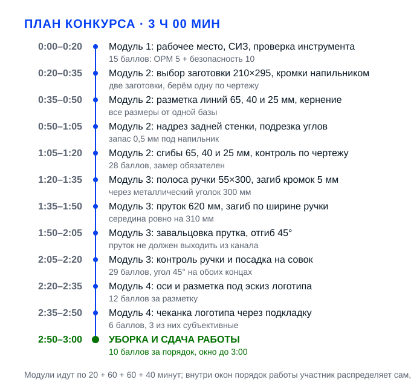
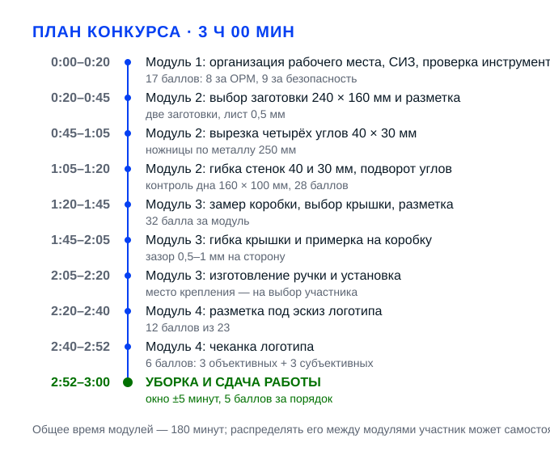
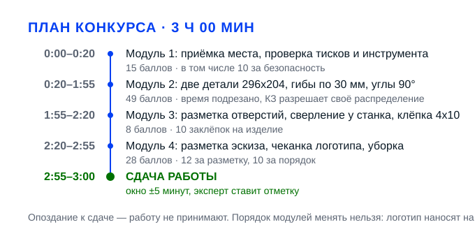

Жестянщик (Р)
Задания ниже — официальные файлы «Абилимпикс» (источник: abilympics-russia.ru), разложенные по категориям. Решения написаны по тексту задания, регламенту и критериям оценки; в них указано, что именно проверяет эксперт.
Школьник
14–16 лет, базовый уровень заданияВ официальном файле категории не разделены отдельными разделами — приводим задание целиком; различия по категориям смотрите в таблице модулей.
Пошаговое решение
Задание категории «Школьники» — изготовить совок: корпус из листа толщиной 0,5 мм размером 210 на 295 мм, к нему ручку из полосы 55 на 300 мм с металлическим прутком 2 мм длиной 620 мм, а в вариативном модуле — нанести региональный логотип чеканкой. На всё даётся 180 минут: двадцать на организацию рабочего места, по шестьдесят на совок и на ручку и сорок на логотип, причём внутри этих окон порядок работы вы распределяете сами. Оценивают сто баллов: 15 за рабочее место и безопасность, 28 за корпус совка, 29 за ручку и 28 за логотип вместе с порядком на столе. Главное, что стоит понять до старта: совок держится не на силе удара, а на последовательности — сначала кромки и плоскостность листа, потом разметка, потом резка, и только после этого гибка, обязательно от задней стенки к бортам. Ниже — пятьдесят шагов в том порядке, в котором их надо делать, с размерами из чертежа, признаками годной работы и теми ошибками, которые стоят баллов.

Задача 1. Организовать рабочее место и подготовить инструментМодуль 1 · 15 баллов
Первый модуль стоит 15 баллов, из них 5 дают за организацию рабочего места и 10 за соблюдение правил безопасной работы, и на него отведено 20 минут. Эти минуты не украдут у изделия: наоборот, разложенный инструмент, проверенные тиски и осмотренный лист возвращаются потом с лихвой, потому что дальше каждая минута поиска чертилки или ключа от тисков — это минута, отнятая у гибки. Здесь же снимаются главные риски: порез о кромку, срыв заготовки из тисков и падение инструмента на ногу.
Действие 1.1. Надеть средства защиты и осмотреть зону
Шаг 1.1.1
Надеваем защитные очки с закрытыми боковинами, трикотажные перчатки с покрытием и, если предстоит работать у ножниц и напильника, лёгкую маску. Рукава застёгиваем или подворачиваем выше локтя, волосы убираем под головной убор, концы шарфа и капюшон убираем совсем. Перчатки надеваем до того, как возьмём лист: кромка 0,5 мм после ножниц режет как бритва, и порез обычно получают на первой же минуте, когда лист ещё кажется совершенно безопасным.
Соблюдение правил безопасной работы — это 10 баллов из 15 в первом модуле, то есть две трети его стоимости, и проверяют их не по рассказу, а глазами в течение всего конкурса. Свои очки, перчатки и маску проносить разрешено, они прямо названы в особых указаниях, а вот любой другой свой инструмент, не зафиксированный в инфраструктурном листе, означает снятие с соревнований без предупреждения.
Проверяем по трём признакам: очки сидят плотно и не сползают при наклоне головы, перчатка облегает кисть и не мешает взять чертилку, рукав не свисает на тиски. Попросите соседа посмотреть со спины — выбившиеся волосы видны сзади, а не спереди, и именно их замечает эксперт, обходящий зону.
Частая ошибка — надеть перчатки «попозже», когда начнётся резка, и схватиться за кромку голой рукой при выборе заготовки. Вторая — работать в очках, сдвинутых на лоб: глаза формально защищены, но стружка от ножниц летит снизу и попадает как раз в открытую зону, а балл за безопасность при этом уже потерян.
Эксперт фиксирует средства защиты на входе в зону, а затем следит, остаются ли очки на глазах в момент резки и гибки, потому что именно там их снимают чаще всего. Это прямая часть критерия соблюдения правил безопасной работы, который стоит 10 баллов из 15 в первом модуле.
Шаг 1.1.2
Обходим рабочее место по периметру и смотрим на него как на опасный участок: верстак с тисками и защитным экраном должен стоять устойчиво, размеры его 630 на 960 на 830 мм, то есть работать вы будете стоя. Проверяем, свободен ли проход шириной 1,5 м между рабочими местами, не качается ли верстак при нажатии на тиски, горят ли обе лампы, не лежит ли на полу обрезок листа или стружка, доходит ли шнур до розетки сверлильного станка без натяга.
Организация рабочего места — отдельный критерий на 5 баллов, и он оценивается буквально по обстановке вокруг вас: устойчивый верстак, свободный проход, ровный свет. Качающийся верстак — это не эстетика, а сорванная гибка: при ударе молотком заготовка в тисках уходит, линия сгиба получается косой, и переделать её на 0,5 мм листе уже нельзя.
Проверяем так: нажимаем ладонью на тиски в направлении удара — верстак не должен давать хода; смотрим вдоль линии губок на просвет; проходим по маршруту от верстака до станка, не задевая ничего бедром. Если лампа мигает или свет падает сбоку, переставьте её до начала разметки, а не в процессе.
Ошибка — начать с инструмента, оставив осмотр зоны на потом: про качающийся верстак вспоминают на первом силовом сгибе, когда линия уже ушла. Вторая — оставить проход перекрытым ящиком или стулом, за что снимают и баллы организации, и баллы за безопасность.
Эксперт обходит зону в первые две-три минуты работы и оценивает устойчивость верстака, свободу прохода шириной 1,5 м и наличие защитного экрана на тисках. Эти наблюдения идут в критерий организации рабочего места, то есть в 5 баллов, которые ставят до начала основной работы.
Шаг 1.1.3
Ставим рядом с верстаком тару для стружки и обрезков — плоскую коробку или лоток — и кладём на край верстака чистую ветошь. Стружку с верстака сметаем только щёткой по металлу, никогда ладонью и никогда рукавом: волосяная стружка от напильника входит под кожу цепко и остаётся там надолго. Проверяем, что огнетушитель на площадке виден и к нему есть доступ, а аптечка не завалена коробками.
Порядок на столе — часть тех же 5 баллов за организацию и 10 баллов за уборку в четвёртом модуле, где наведение порядка оценивают отдельным критерием. Кроме того, металлическая стружка на полу — реальная причина падения: она работает как ролик под подошвой, а падать рядом с тисками и острым листом особенно опасно.
Признак порядка простой: на столе нет ни одного обрезка вне лотка, пол под верстаком чистый, ветошь лежит на месте, а не висит на тисках. Проведите по столу щёткой один раз и посмотрите на ладонь — на ней не должно быть ни одной блёстки.
Типичная ошибка — сметать стружку рукой «чтобы быстрее»: порез или заноза, и дальше вся работа идёт с перевязанным пальцем. Вторая — склад обрезков на верстаке до конца модуля, из-за которого лист при разметке ложится неровно.
Эксперт смотрит на стол и на пол в начале модуля, а затем повторно в конце, когда оценивают наведение порядка. Стружка на верстаке и обрезки под ногами читаются как неорганизованность, даже если само изделие сделано хорошо и размеры выдержаны.
Действие 1.2. Проверить и разложить инструмент
Шаг 1.2.1
Берём оба молотка — 200 г и 400 г — и проверяем каждый: рукоять должна сидеть в проушине плотно, клин забит и расклинен, на дереве нет трещин у самого бойка. Молоток 200 г кладём справа от тисков, им будем кернить разметку и править кромку; 400 г — ближе к задней части верстака, им гнут металл на 65 и 40 мм. Проверяем плоскость бойка: скол или зализанный край оставляют на листе вмятину вместо чистой линии сгиба.
Молоток — единственный инструмент, которым здесь передают усилие, поэтому его состояние прямо влияет на два критерия: сгибание заготовки и обработку кромок. Слетевший с рукояти боёк — это травма и остановка работы, а зализанный боёк даёт растянутые вмятины, которые на 0,5 мм листе потом не выправить без следов.
Проверяем на слух и на ощупь: постучите рукоятью о верстак — глухой дребезг означает, что насадка ослабла; покачайте головку рукой, люфта быть не должно. Осмотрите боёк на свет: он должен быть ровным, без выщербин и без блестящей зализанной полосы.
Ошибка — взять первый попавшийся молоток и работать им весь конкурс: лёгким молотком не согнуть 65 мм на весу, а тяжёлым легко пробить лист насквозь. Вторая — не заметить трещину у клина: рукоять лопается на самом сильном ударе.
Перед стартом эксперт проверяет инструмент на столах, а в работе смотрит, каким молотком участник гнёт металл. Следы зализанного бойка видны на листе как растянутые вмятины, и они снимают баллы за обработку кромок и за внешний вид готового совка.
Шаг 1.2.2
Раскладываем режущий и опиловочный инструмент: ножницы по металлу 250 мм, ножовку, набор напильников, щётку по металлу, зубило. У ножниц проверяем шарнир — он должен ходить плавно, без люфта в стороны, а лезвия при полном сведении сходиться по всей длине, оставляя зазор не больше 0,1 мм и не заходя друг за друга. Напильники осматриваем по насечке: она должна быть чистой, без налипшего металла, поэтому каждый предварительно проходим щёткой вдоль насечки, а не поперёк.
Резка и опиливание — это два отдельных критерия в корпусе совка, «удаление ненужных частей заготовки с подрезанием» и «обработка краёв напильником». Тупые или разболтанные ножницы не режут, а жуют лист: кромка идёт волной, появляется задир, и дальше его приходится снимать напильником, теряя и время, и геометрию детали.
Признак годных ножниц: пробный рез вдоль обрезка даёт ровную полосу без задира, лист не выворачивается из лезвий, а рукояти не разъезжаются в стороны. Напильник проверяем на том же обрезке — он должен снимать металл с усилием, а не скользить.
Частая ошибка — резать разболтанными ножницами и винить в волнистой кромке металл: потом эту волну не убрать без потери 2–3 мм размера. Вторая — работать напильником с забитой насечкой, который полирует лист и портит кромку.
Эксперт осматривает кромку реза под углом к свету и обращает внимание на задир: ровная блестящая полоса без рваных участков читается как работа исправными ножницами. Тупые или разболтанные ножницы выдают себя волнистой кромкой уже на первом резе.
Шаг 1.2.3
Раскладываем разметочный набор по зонам, чтобы каждая вещь бралась одной рукой и возвращалась на место: линейку и угольник — слева на подставке, чертилку, керно и слесарный циркуль с раскрытием до 150 мм — справа, перманентный маркер — в кармане или у кромки стола. Отдельно откладываем чертёжный комплект с транспортиром: он понадобится при загибе ручки на 45 градусов. Всё, чем не пользуетесь, убираем в ящик верстака, чтобы не искать по столу.
Разметка стоит 5 баллов в корпусе совка и 12 баллов в логотипе, то есть без разметочного инструмента под рукой не набирается почти треть баллов за изделие. Порядок раскладки — не про аккуратность: когда чертилка лежит на своём месте, линия наносится один раз и точно, а когда её ищут, рука сбивается и линия выходит с двойным следом.
Проверяем так: не глядя, протяните руку — линейка, угольник, чертилка и керно должны оказаться именно там, где вы ждёте. На столе не должно оставаться ничего лишнего: только то, что понадобится в ближайшие десять минут.
Ошибка — держать весь инструмент кучей посередине верстака: лист при разметке не ложится ровно, а чертилка уезжает под линейку. Вторая — убрать линейку в ящик: на каждый замер уходит по минуте, и за модуль их набегает десяток.
Эксперт видит разметку по следу на листе: одна чистая линия, проведённая от общей базы, читается как работа по чертежу, а две-три нацарапанные рядом — как спешка. Это прямая иллюстрация к критерию нанесения разметки, который стоит 5 баллов в корпусе совка.
Действие 1.3. Подготовить тиски и заготовки
Шаг 1.3.1
Проверяем тиски: губки должны быть параллельны, винт ходить без заеданий, а подвижная губка не должна иметь качки. Накладки на губки — алюминиевые или из твёрдого дерева — ставим обязательно: лист 0,5 мм в голых насечённых губках мять не надо, иначе на изделии останутся рябые вмятины. Затягиваем тиски до плотного касания, но без перетяжки: чрезмерное усилие ведёт винт и сминает кромку листа.
Тиски — это ваша третья рука на весь конкурс: в них зажимают заготовку при гибке на 65, 40 и 25 мм, в них держат ручку при завальцовке. Погнутый винт или скошенные губки дают перекос зажима, и линия сгиба уходит от разметки на 1–2 мм, а контроль действительных размеров — отдельный критерий на 5 баллов и в корпусе, и в ручке.
Проверяем на просвет: зажмите обрезок листа и посмотрите на линию контакта — она должна быть равномерной по всей длине, без светлого клина с одного края. Проверьте ход винта от упора до упора: он должен идти одинаково туго, без рывка в середине.
Ошибка — работать без накладок: на готовом совке остаются следы губок, и его уже не спасти, потому что выправить рябь на согнутом изделии невозможно. Вторая — зажимать лист у самой линии сгиба и сминать её губками.
Эксперт обращает внимание на следы зажима на готовом изделии и на то, пользуется ли участник накладками на губки тисков. Рябые отпечатки насечки на листе 0,5 мм не убираются ни правкой, ни полировкой, поэтому их замечают при оценке внешнего вида.
Шаг 1.3.2
Получаем на рабочее место две заготовки листового металла толщиной 0,5 мм и осматриваем обе: на каждой штангенциркулем или линейкой проверяем толщину и габарит, на глаз — вмятины, заусенцы, следы коррозии, царапины. Нужная по чертежу заготовка — 210 на 295 мм; вторую оставляем как резерв и не трогаем до конца модуля. Осмотр делаем на чистом столе, подложив под лист картон или ветошь.
Выбор нужной заготовки по чертежу — первый отдельный критерий корпуса, 5 баллов, и он снимается мгновенно, если взять не тот размер. Толщина 0,5 мм принципиальна: именно под неё рассчитаны усилия гибки, и на более толстом листе сгиб на 65 мм пойдёт с трещиной по кернёной линии, а на более тонком — с растянутой волной.
Признаки годной заготовки: диагонали равны между собой с расхождением не больше 1 мм, лист лежит на столе без качания, кромки без рваных заусенцев выше 0,2 мм, на поверхности нет сквозных царапин. Замерьте обе заготовки и запишите результат маркером на уголке резерва.
Ошибка — взять заготовку, не измерив её, и обнаружить расхождение после разметки: переделать разметку на 2 мм уже нельзя. Вторая — отложить вторую заготовку в общую кучу, где её потом не отличить от чужой.
Эксперт подходит к моменту выбора заготовки и смотрит, измеряет участник или берёт лист на глаз. Критерий «выбор нужной заготовки по чертежу» стоит 5 баллов и оценивается объективно: по факту замера и по тому, какой именно лист пошёл в работу.
Шаг 1.3.3
Делаем пробный зажим: кладём обрезок листа в тиски так, как будем зажимать будущую заготовку — кромкой по линии губок, — и проверяем, на какой высоте оказывается линия сгиба. Губки должны приходиться ровно по разметке, а свободная часть листа — выступать на 65 мм и не упираться в верстак. Если верстак высок для вас, подкладываем под ноги устойчивую подставку: работать придётся с усилием и на весу.
Пробный зажим экономит первые пять минут модуля гибки и заодно проверяет, попадёт ли разметка точно по губкам. Сгибание заготовки оценивают в 5 баллов, и делают это сравнением с чертежом: линия, ушедшая на 1,5 мм от разметки, — уже не «почти хорошо», а расхождение по размеру.
Проверяем: зажатый обрезок держится без прокрутки, линия разметки видна из-под губки целиком, выступающая часть не касается стола. Отпустите и зажмите ещё раз — положение линии должно повторяться, а не гулять.
Ошибка — зажать лист так, что разметка скрыта под губками: гибку ведут «на глаз», и стенка получается на 3–4 мм ниже нужного. Вторая — работать на слишком высоком верстаке, из-за чего удар идёт сверху вниз и сгиб выходит с перекосом.
Эксперт смотрит на первый зажим заготовки в тиски: те, кто проверяет положение линии по губкам заранее, дальше работают без переделок. Зажатая наугад заготовка даёт косой сгиб, и это видно уже на второй минуте модуля гибки.
Задача 2. Подготовить заготовку и разметить корпус совкаМодуль 2 · 28 баллов за корпус
Второй модуль — это 60 минут и 28 баллов за сам корпус совка, и первые его сорок минут уходят не на гибку, а на подготовку: выбрать лист 210 на 295 мм, снять заусенец, выправить плоскость и нанести разметку. Порядок здесь жёсткий, потому что исправлять что-либо после первого сгиба уже нельзя: любая правка на согнутом изделии оставляет вмятину, а вмятина — это минус по внешнему виду и по контрольным размерам. Поэтому кернение, надрез задней стенки и подрезка углов делаются до того, как лист впервые попадёт в тиски под гибку.
Действие 2.1. Выбрать и осмотреть заготовку 210 на 295
Шаг 2.1.1
Кладём обе заготовки на чистый стол и измеряем каждую линейкой с ценой деления 1 мм по двум сторонам: нам нужен лист 210 на 295 мм. Замер ведём от кромки до кромки, линейку ставим плашмя и смотрим строго сверху, чтобы не поймать параллакс. Результат сразу помечаем перманентным маркером на уголке листа — 210 на 295 пишем прямо на резерве, чтобы потом не путать заготовки местами.
Это первый критерий модуля, «выбор нужной заготовки по чертежу», 5 баллов, и он чисто объективный: эксперт просто измеряет то, что вы взяли в работу. Ошибка на этом шаге не исправляется дальше — все размеры корпуса считаются от габарита листа, и если он на 5 мм короче, то после трёх сгибов стенки не сойдутся по высоте.
Годный результат: замер совпадает с чертежом по обеим сторонам, погрешность не больше 1 мм, маркировка стоит на резервном листе. Если обе заготовки в допуске — берите ту, у которой чище поверхность, вторую оставьте нетронутой.
Ошибка — мерить «на глаз», приложив линейку к краю стола: разница в 2–3 мм на габарите превращается в перекос всей коробки совка. Вторая — начать разметку прямо на заготовке, не записав замер: при пересчёте размеров вы уже не помните исходник.
Эксперт смотрит на замер в момент выбора заготовки: измерительный инструмент в руках участника — половина оценки этого критерия. Пять баллов ставят за сам факт измерения и совпадение с чертежом, а не за уверенный вид и скорость работы.
Шаг 2.1.2
Проверяем геометрию листа: измеряем обе диагонали и сравниваем их между собой, разница больше 1 мм означает, что заготовка вырезана ромбом. Затем кладём лист на ровную плиту или на чистое стекло и смотрим на просвет по углам: качание листа показывает, что плоскость нарушена. Отдельно смотрим кромки: они должны быть ровными по всей длине, без волны от тупых ножниц.
Ровная геометрия — условие того, что три сгиба (65, 40 и 25 мм) дадут прямоугольный корпус. Ромбовидная заготовка даёт перекошенный совок, и его не спасёт никакая аккуратность гибки: контроль действительных размеров сравнивают с чертежом, и перекос виден по разнице диагоналей готового изделия.
Признак годной заготовки: диагонали отличаются не больше чем на 1 мм, лист лежит без качания, кромки ровные. Проверить просто — переверните лист другой стороной: если выпуклость осталась на том же месте, она в металле, а не в столе.
Ошибка — пропустить проверку диагоналей: перекос в 2 мм на длине 295 мм превращается в заметный клин на борту, и контрольный замер покажет расхождение. Вторая — выправлять ромб гибкой, чего на плоском листе делать нельзя: вместо прямоугольника получится винт.
Эксперт может попросить показать замеры или повторить их сам. Критерий «выпрямление края заготовки» оценивают по плоскости листа: качание на плите и разница диагоналей видны при первом же касании рукой.
Шаг 2.1.3
Осматриваем поверхность листа под наклоном к свету: вмятины, задиры, следы коррозии, глубокие царапины. Мелкую вмятину можно выправить с обратной стороны, глубокую — лучше не трогать, чтобы не растянуть металл, но и в работу её брать не стоит, если есть чистая вторая заготовка. Заусенцы по кромкам, если они выше 0,2 мм, сразу снимаем напильником, потому что за них цепляется рукав и рвётся перчатка.
Поверхность — это внешний вид изделия, а он входит в оценку корпуса вместе с контрольными размерами. Кроме того, глубокая царапина на 0,5 мм листе — концентратор напряжения: при гибке по этому месту металл рвётся, и вместо стенки получается трещина длиной в пару сантиметров.
Годная поверхность: нет сквозных царапин, вмятины не глубже 0,5 мм, кромки не режут перчатку при проведении пальцем в перчатке вдоль кромки. Проверяйте именно в перчатке — так вы заодно тестируете и её, и кромку.
Ошибка — взять лист с задиром на кромке: при первом же сгибе от задира идёт трещина длиной в несколько сантиметров. Вторая — выправлять глубокую вмятину молотком на весу, растягивая металл и делая бугор там, где была ямка.
Эксперт осматривает заготовку до разметки и отмечает, сняты ли заусенцы и нет ли следов неаккуратной правки. Задир на кромке и бугор от удара молотком на весу видны под наклоном к свету, и оба признака сразу снижают оценку за подготовку листа.
Действие 2.2. Обработать и выпрямить кромки
Шаг 2.2.1
Заготовку кладём на деревянную подкладку и зажимаем в тиски так, чтобы обрабатываемая кромка выступала на 15–20 мм. Берём плоский драчёвый напильник, ставим его к кромке под углом около 45 градусов и ведём вдоль кромки от себя, снимая заусенец за два-три прохода. Движение должно быть длинным, всей длиной напильника, а не короткими тычками: короткий ход оставляет на кромке ступеньки.
Обработка краёв напильником — отдельный критерий на 5 баллов, и он же снимает главную опасность всей компетенции: порез о кромку 0,5 мм. Снятый заусенец делает кромку гладкой и, что важнее для изделия, не даёт ей заворачиваться при гибке в тонкую складку, которая потом мешает стенкам сойтись вплотную.
Проверяем пальцем в перчатке: кромка должна быть гладкой, без зацепок, без блестящей острой полоски. Смотрим на кромку сбоку на свет — ровная фаска шириной около 0,5 мм означает, что напильник шёл правильно, а не «полировал» лист.
Ошибка — пилить поперёк кромки, снимая металл в тело листа: кромка уходит вниз, и габарит 210 на 295 мм уменьшается. Вторая — гнать напильник с нажимом только в одну сторону, из-за чего на кромке остаётся ступенька.
Эксперт смотрит на кромку под углом к свету и проводит по ней пальцем в перчатке. Ровная фаска шириной около 0,5 мм без блестящей острой полоски — это ровно то, за что дают 5 баллов за обработку краёв заготовки напильником.
Шаг 2.2.2
Выпрямляем лист: кладём его на ровную плиту или на деревянную подкладку и правим молотком 200 г через прокладку из мягкого металла или дерева. Выпуклость правим ударами от края к центру, вогнутость — от центра к краю, силу удара наращиваем постепенно. Удары наносим плашмя, всей плоскостью бойка, а не носком: носок оставляет точечные вмятины, которые на 0,5 мм листе видны как рябь.
Выпрямление края заготовки — ещё 5 баллов, и без него разметка ложится на кривую поверхность: линия получается с изломом, а после гибки стенка встаёт косо. Кроме того, правка убирает внутренние напряжения от резки, из-за которых лист «играет» при зажиме в тиски.
Годный результат проверяем на просвет: положите лист на плиту и посмотрите на зазор по кромкам — он должен быть не больше 1 мм и одинаковым по длине. Приложите линейку ребром поперёк листа: щупа быть не должно.
Ошибка — править лист на весу или на колене: вместо плоскости получается волна, и разметка ложится на кривую поверхность. Вторая — бить носком молотка по одному месту, растягивая металл: вместо ровной поверхности образуется бугор, а балл за выпрямление уже потерян.
Эксперт проверяет плоскость листа на плите до начала разметки. Критерий «выпрямление края заготовки» стоит 5 баллов, и его оценивают по просвету под линейкой, а не по общему впечатлению от листа и не по количеству потраченного времени.
Шаг 2.2.3
После правки проходим обе стороны листа щёткой по металлу вдоль кромок, сметая стружку, и протираем поверхность чистой ветошью, чтобы обезжирить её под маркер. Особенно тщательно чистим кромки: именно там остаётся мелкая волосяная стружка, которая потом мешает листу лечь в тиски ровно. Ветошь с маслом не используем, иначе маркер и чертилка будут скользить.
Чистая поверхность нужна для двух вещей: линия разметки на масляном пятне «плывёт» и её приходится наносить повторно, а второй след на листе читается как небрежность. Разметка — 5 баллов, и оценивают её именно по чистоте и однозначности линии, а не по количеству царапин.
Проверяем ладонью в перчатке: поверхность должна быть сухой и без крупинок, кромки не цепляют ткань. Проведите по кромке щёткой ещё раз, если на ветоши после протирки остались блёстки металла, а затем посмотрите на лист под наклоном к свету.
Ошибка — обезжиривать лист масляной ветошью: чертилка скользит, линия уходит, и разметку приходится наносить заново. Вторая — оставить стружку на кромке, из-за которой лист садится в тиски с перекосом, а сгиб идёт клином.
Эксперт смотрит на лист перед разметкой: чистая сухая поверхность и отсутствие стружки на кромках видны сразу, а масляные пятна выдают себя радужными разводами. Всё это влияет и на качество разметки, и на внешний вид готового изделия.
Действие 2.3. Нанести разметку линий сгиба и надреза
Шаг 2.3.1
Начинаем с базовой линии: прикладываем угольник короткой стороной к длинной кромке листа и проводим чертилкой линию поперёк, отступив от торца столько, сколько требует чертёж под заднюю стенку. Все остальные размеры откладываем от этой базы, а не от противоположного края, иначе погрешность накапливается. Чертилку держим под углом 60–70 градусов к листу, наклоняя её по ходу движения, и ведём линию одним проходом.
Нанесение разметки — 5 баллов, причём это критерий, от которого зависят все остальные: и подрезка, и три сгиба. Базовая линия задаёт систему отсчёта; если каждый размер откладывать от своей кромки, то на 295 мм набегает 2–3 мм расхождения, и стенки совка перестают быть одинаковыми.
Проверяем: линия должна быть одной, тонкой, без двойного следа, и от неё контрольным замером снимается размер до противоположной кромки. Приложите угольник к проведённой линии — он должен лечь без зазора по всей длине.
Ошибка — вести чертилку дважды по одному месту: получается канавка, по которой при гибке идёт трещина. Вторая — откладывать размеры от разных кромок, из-за чего линии не сходятся в углах и разметка перестаёт быть единой системой.
Эксперт смотрит на разметку до начала резки: одна тонкая линия, проведённая от общей базы, читается как работа по чертежу. Двойной след чертилки он отмечает отдельно, потому что по такой канавке металл рвётся при гибке, и вся деталь идёт в брак.
Шаг 2.3.2
Откладываем три основных размера по чертежу: 65 мм от задней кромки — под заднюю стенку, по 40 мм от правой и левой кромки — под борта, и 25 мм — под отгиб задней части. Каждый размер отбиваем в двух точках по краям листа и соединяем их линией по линейке, а не «на глаз» натянутой ниткой. Размеры проставляем карандашом на самой заготовке у соответствующих линий, чтобы в процессе гибки не пересчитывать.
Именно эти три числа задают форму совка: 65 мм — высота задней стенки, 40 мм — высота бортов, 25 мм — задний отгиб, который придаёт жёсткость. Все они проверяются контрольным замером, и допуск здесь около 1 мм: 3 мм разницы — это уже заметный перекос и минус по критерию контрольных размеров.
Проверяем каждую линию двумя замерами — с одного края и с другого: расстояние до кромки должно совпадать, расхождение не больше 0,5 мм. Если не совпало, стираем линию ветошью и наносим заново от той же базы, не оставляя старый след.
Ошибка — отложить 65 мм от кромки, у которой уже есть заусенец или волна: размер уходит вместе с кромкой. Вторая — провести линию по одной точке и наклону линейки, получая клин вместо параллельной линии.
Эксперт выборочно замеряет линии до гибки и сравнивает их с чертежом. Критерий «нанесение разметки» оценивают по числу и чистоте линий: размеры 65, 40 и 25 мм должны читаться на листе без пояснений и без повторных царапин.
Шаг 2.3.3
Размечаем контур надреза задней стенки и подрезки углов передней части: это те участки, которые нужно удалить, чтобы стенки могли завернуться. Линии надреза ведём строго перпендикулярно кромке, отступив от линии сгиба на 0,5 мм в сторону удаляемого металла — этот запас потом снимем напильником. Углы передней части размечаем треугольником или по дуге циркулем, если того требует чертёж, и обязательно помечаем удаляемые части крестом, чтобы не отрезать лишнего.
Удаление ненужных частей с подрезанием сгибаемых частей — 5 баллов, и это самая необратимая операция всего задания: отрезанный металл не возвращается. Запас в 0,5 мм нужен потому, что ножницы по металлу ведут рез с отжимом, и линия реза уходит от разметки в сторону на 0,3–0,5 мм, а подрезать лишнее проще, чем добавлять.
Проверяем: все удаляемые участки помечены, линии надреза перпендикулярны кромке, запас до линии сгиба виден и одинаков с обеих сторон. Пройдите по разметке взглядом от края к краю — не осталось ли участка без пометки.
Ошибка — резать прямо по линии сгиба: кромка садится на линию, и после гибки стенка получается на 1 мм ниже нужного. Вторая — забыть пометить удаляемую часть и вырезать зеркально, отрезав нужный борт, который уже не вернуть.
Эксперт проверяет разметку надреза до резки и потом смотрит, оставлен ли запас 0,5 мм под опиливание. Отсутствие пометок на удаляемых частях — верный признак того, что участник режет наугад и рискует отрезать нужный борт вместо лишнего лепестка.
Шаг 2.3.4
Керним линии сгиба: ставим керно с шагом 15–20 мм прямо по линии, ударяя молотком 200 г легко, одним ударом на точку, чтобы получить углубление около 0,3 мм. Керно держим строго вертикально, тогда точка не уходит в сторону от линии. Керним все три линии — 65, 40 и 25 мм, — но не керним там, где будет рез: ножницы пойдут по точкам и порвут кромку. В конце сдуваем металлическую пыль с листа и обводим кернённую линию мягким карандашом, чтобы она читалась при зажиме в тиски.
Кернение по линии сгиба — приём, который жёстянщики используют постоянно: цепочка точек задаёт металлу направление, и сгиб идёт ровно по линии, без «гуляния». На листе 0,5 мм это особенно важно, потому что без насечки металл гнётся по кратчайшему пути и линия уходит на 1–2 мм, а сгибание заготовки оценивают в 5 баллов.
Проверяем: точки стоят по одной линии, с равным шагом, глубина одинаковая, линия сгиба читается как пунктир. Проведите ногтем поперёк — точки должны ощущаться, но не быть сквозными, а на просвет не должно быть светлых проколов.
Ошибка — бить по керну сильно, пробивая лист почти насквозь: при гибке по этим точкам металл рвётся, и стенка идёт с трещиной. Вторая — кернить редкими точками через 50 мм: такая насечка направления не задаёт, и сгиб всё равно уходит от линии.
Эксперт замечает кернение сразу: ровный пунктир по линии сгиба с шагом 15–20 мм — признак профессионального подхода к гибке тонкого листа. Редкие глубокие точки он читает как риск разрыва металла и отмечает это при оценке сгибания заготовки.
Действие 2.4. Вырезать надрез и подрезать углы
Шаг 2.4.1
Надрез задней стенки начинаем с входа для лезвия: в углу разметки пробиваем керном или зубилом небольшое отверстие шириной 5–6 мм, чтобы ножницы могли войти в металл. Затем берём ножницы по металлу 250 мм, одной рукоятью зажимаем в тиски или держим заготовку на весу, и ведём рез по размеченной линии, слегка приподнимая заднюю часть лезвий, чтобы лист не заклинивало. Режем короткими участками по 30–40 мм, не разжимая лезвия до конца.
Удаление ненужных частей заготовки — 5 баллов, и качество реза определяет, сколько времени уйдёт на опиливание. Рез с заклиниванием оставляет на кромке задир высотой до 1 мм, а его придётся снимать напильником уже после гибки, когда подобраться к кромке труднее. Вход для лезвия делают потому, что ножницы не прокалывают лист, а режут от уже сделанного отверстия.
Годный рез: кромка идёт по линии с отклонением не больше 1 мм, задира нет, лист не вывернут винтом. Проверьте рез на просвет и проведите пальцем в перчатке вдоль кромки — заусенец не должен цеплять ткань.
Ошибка — пытаться проколоть лист кончиками ножниц: лезвия расходятся, и на кромке остаётся рваная дыра. Вторая — резать длинным ходом до конца, из-за чего лист выворачивается и рез уходит в сторону от разметки.
Эксперт смотрит на кромку реза: ровная линия без задира и без следов выворачивания листа. Кривую кромку он потом сравнит с разметкой при контрольном замере, и расхождение будет засчитано дважды — и за удаление частей, и за размеры.
Шаг 2.4.2
Подрезаем углы передней части: развернув заготовку, отрезаем размеченные треугольники так, чтобы после гибки борта сошлись с задней стенкой без нахлёста. Режем от края к вершине угла, поворачивая саму заготовку, а не выкручивая руку с ножницами. После каждого реза проверяем, что оставшийся металл не заходит за линию сгиба, иначе борт завернётся вместе с лишним лепестком.
Подрезание сгибаемых частей — часть тех же 5 баллов за удаление ненужных частей заготовки, и от него зависит, сойдутся ли стенки совка в углах. Лишний лепесток в 3 мм на угле не даёт бортам встать вплотную: получается щель, которую видно и на внешнем виде, и при контрольном замере размеров.
Проверяем: приложите линейку к линии сгиба — металл за неё не выступает; углы симметричны, слева и справа снято одинаково. Сложите заготовку мысленно по линии 40 мм и посмотрите, упрётся ли угол в заднюю стенку.
Ошибка — срезать угол «с запасом», задевая линию сгиба: борт получается короче, и между ним и задней стенкой появляется щель. Вторая — срезать углы несимметрично, из-за чего совок перекашивает набок и он перестаёт стоять на столе ровно.
Эксперт проверяет симметрию углов и отсутствие лишнего металла за линией сгиба. Он смотрит именно на углы передней части, потому что от них зависит, сойдутся ли борта с задней стенкой, а это уже вопрос контрольных размеров.
Шаг 2.4.3
Опиливаем кромки реза плоским напильником, снимая заусенец в 0,2–0,3 мм и выводя линию реза до разметки, если ножницы ушли в сторону. Напильник ведём вдоль кромки под углом 45 градусов, лишний металл снимаем с удаляемой стороны, а не с тела детали. В конце проходим кромки личным напильником и щёткой, чтобы не осталось заусенца, за который цепляется перчатка.
Обработка краёв напильником — 5 баллов, и после резки она обязательна: ножницы оставляют кромку с заусенцем, а на согнутом изделии этот заусенец становится опасным и мешает стенкам сойтись. Кроме того, линия реза, выведенная до разметки напильником, даёт ту самую точность, по которой потом проверяют контрольные размеры.
Проверяем: кромка гладкая на ощупь в перчатке, линия реза совпадает с разметкой, фаска равномерная по всей длине. Проведите по кромке ветошью — она не должна цепляться и вытягивать волокна, а на свету не должно быть блестящей острой полоски.
Ошибка — опиливать кромку «на глаз» и снимать металл с тела детали: размер уходит вместе с заусенцем. Вторая — оставить заусенец, который при гибке заворачивается в складку и не даёт стенке встать ровно.
Эксперт проверяет кромки после опиливания: ровная фаска без заусенца — ровно то, за что дают эти 5 баллов. Заусенец он ищет на кромках реза и в углах, где ножницы оставляют самый грубый след.
Задача 3. Согнуть корпус совка и проконтролировать размерыМодуль 2 · 28 баллов за корпус
Гибка — сердце второго модуля и самая дорогая его часть: за сгибание заготовки дают 5 баллов, за контроль действительных размеров ещё 5, а ошибка в гибке обнуляет и предыдущую работу, потому что согнутый лист уже не переразметить. Порядок сгибов не случаен: сначала задняя стенка на 65 мм, потом борта на 40 мм, потом задний отгиб на 25 мм. Если начать с бортов, они перекроют доступ к задней стенке, и зажать заготовку в тиски по линии уже не получится. Каждый сгиб заканчивается простукиванием ребра, иначе вместо острого угла получается скруглённый, а скругление сразу видно по контрольному замеру.
Действие 3.1. Загнуть заднюю стенку на 65 мм
Шаг 3.1.1
Зажимаем заготовку в тиски задней частью так, чтобы кернёная линия 65 мм пришлась ровно по передней плоскости губок и была видна целиком. Накладки на губках обязательны, лист выставляем по угольнику: кромка должна идти параллельно губкам, иначе сгиб пойдёт клином. Затягиваем тиски плотно, но без перетяжки, и проверяем, что выступающая часть листа не упирается в верстак и не касается станины.
Положение линии по губкам — это половина успеха сгиба: металл гнётся точно по выходу из губок, и если линия спрятана под ними на 2 мм, стенка получится ниже разметки. Сгибание заготовки оценивают в 5 баллов, а контроль действительных размеров — ещё 5, и оба критерия читаются именно по этому первому сгибу.
Проверяем до удара: линия видна из-под губок по всей длине, кромка параллельна губкам, выступающая часть не касается стола. Посмотрите на просвет вдоль линии — зазора между листом и губками быть не должно.
Ошибка — зажать лист с перекосом в 2–3 мм: сгиб идёт клином, и задняя стенка получается разной высоты по краям. Вторая — зажать лист слишком высоко, оставив линию на 5 мм выше губок: металл гнётся не по линии, а по кромке губок.
Эксперт подходит в момент зажима и смотрит, выставлена ли линия 65 мм по губкам тисков: это видно за две секунды. Зажатая наугад заготовка даёт стенку ниже разметки, а сгибание заготовки и контроль размеров вместе стоят 10 баллов.
Шаг 3.1.2
Берём молоток 400 г и наносим удары по выступающей части листа вдоль линии сгиба, начиная от одного края и постепенно перемещаясь к другому. Первые удары — лёгкие, они задают направление, затем силу наращиваем. Угол сгиба доводим до прямого, контролируя угольником после каждых трёх-четырёх ударов: металл 0,5 мм гнётся быстро и легко переходит за 90 градусов. Лист при ударе придерживаем второй рукой в перчатке, но не подставляем пальцы под боёк.
Молоток 400 г здесь нужен потому, что сгиб на 65 мм требует усилия по всей ширине листа, а лёгким молотком приходится бить чаще, и от этого кромка идёт волной. Постепенное наращивание силы и контроль угольником дают ровно 90 градусов, а недогнутый или перегнутый угол — это расхождение по контрольному размеру.
Проверяем угольником в трёх точках — у левого края, в середине и у правого: полка угольника должна прилегать к задней стенке, а колодка — к плоскости листа без зазора. Линия сгиба должна остаться прямой, без излома посередине.
Ошибка — бить по одному месту в середине: сгиб идёт дугой, и стенка получается горбом. Вторая — гнуть до 90 градусов сразу сильными ударами, из-за чего металл переходит за угол и его приходится разгибать, а разогнутый сгиб уже не прямой.
Эксперт смотрит на угол и на линию сгиба: ровная линия без излома посередине — признак правильной гибки. Горб по центру задней стенки он сразу читает как удары в одну точку, а это уже расхождение по контрольному размеру.
Шаг 3.1.3
Простукиваем ребро сгиба: не снимая заготовку с тисков, наносим частые лёгкие удары молотком 200 г прямо по линии сгиба, уплотняя металл и убирая скругление. Удары ведём вдоль ребра, а не поперёк, и через подкладку из мягкого металла, если боёк оставляет следы. После простукивания снимаем заготовку и проверяем, не разошёлся ли угол: металл после уплотнения держит форму сам.
Простукивание превращает скруглённый сгиб в острое ребро, а именно по ребру смотрят геометрию изделия. Кроме того, уплотнённый металл меньше пружинит, и стенки потом сходятся в углах без щелей. Без этой операции совок выглядит мягким, «надутым», и это видно на общем виде изделия.
Проверяем: ребро острое на ощупь, линия прямая, скругления радиусом больше 1 мм нет. Приложите линейку к ребру — просвет должен быть не больше 0,5 мм по всей длине, а угол должен остаться прямым, не разойдясь после снятия с тисков.
Ошибка — стучать по ребру сильными ударами и растянуть металл: на сгибе появляется утолщение и волна, которую уже не выправить. Вторая — простукивать поперёк ребра, отчего кромка заворачивается и стенка идёт винтом, а изделие перестаёт стоять на столе ровно.
Эксперт проверяет остроту ребра пальцем в перчатке и по просвету под линейкой. Скруглённое ребро он читает как отсутствие простукивания, и это отражается на оценке сгибания и на общем виде изделия.
Действие 3.2. Загнуть борта на 40 мм
Шаг 3.2.1
Переставляем заготовку в тиски и зажимаем её так, чтобы линия 40 мм с правой стороны пришлась по губкам. Задняя стенка, загнутая в предыдущем действии, должна смотреть вверх и не мешать зажиму: если она упирается в верстак, подкладываем под неё брусок. Выставляем кромку параллельно губкам и затягиваем тиски, проверяя, что линия видна по всей длине и не уходит под накладку.
Борт на 40 мм — вторая стенка совка, и он должен встать строго перпендикулярно задней. Перекос в этом сгибе даёт «пропеллер»: изделие стоит на трёх точках и качается, а это сразу видно и по внешнему виду, и по контрольным замерам. Сгибание заготовки оценивают в 5 баллов за все сгибы вместе, поэтому каждый из них делается с той же точностью, что первый.
Проверяем до удара: линия 40 мм стоит по губкам, кромка параллельна, задняя стенка смотрит вверх и не упирается в станину. После зажима подвигайте лист рукой — он не должен проворачиваться в тисках даже при заметном усилии.
Ошибка — зажать лист так, что загнутая задняя стенка упирается в станину и лист встаёт с перекосом: борт идёт косо, и это видно по разнице высот. Вторая — перепутать стороны и загнуть борт в ту же сторону, что и заднюю стенку, получив лодочку вместо корыта.
Эксперт смотрит на симметрию бортов: правый и левый должны быть одинаковой высоты и одинаково отогнуты. Разница больше 2 мм сразу видна, и её потом не исправить без разгиба, который оставляет след на металле.
Шаг 3.2.2
Гнём правый борт молотком 400 г теми же ударами вдоль линии, что и заднюю стенку: от края к краю, с наращиванием силы, с контролем угольником. Затем переставляем заготовку и повторяем то же с левым бортом, обязательно проверив, что линия 40 мм слева тоже встала по губкам. Между сгибами не забываем смотреть на заднюю стенку: она не должна разгибаться от давления в тисках.
Симметрия бортов — главное, что оценивают в этом действии: совок с разной высотой сторон не встаёт на стол и выглядит браком. Кроме того, от высоты бортов зависит, сойдутся ли углы: при разнице 2 мм один угол закроется, а второй разойдётся щелью, и контрольный замер это покажет.
Проверяем: высота бортов одинаковая с точностью до 1 мм, оба угла к задней стенке прямые, изделие стоит на столе без качания. Поставьте совок на ровную поверхность и нажмите поочерёдно на каждый борт — качания быть не должно.
Ошибка — загнуть второй борт, не проверив положение линии: высоты расходятся на 2–3 мм, и один угол закрывается, а второй расходится щелью. Вторая — гнуть борт в ту же сторону, что заднюю стенку, получая лодочку вместо корыта.
Эксперт ставит изделие на стол и смотрит на качание и на разницу высот бортов. Совок, стоящий на трёх точках, он отмечает как перекос, а перекос читается и в контрольных размерах, и во внешнем виде готовой детали.
Шаг 3.2.3
Простукиваем оба ребра бортов молотком 200 г, уплотняя сгибы, и одновременно подгоняем углы: в местах, где борт встречается с задней стенкой, наносим лёгкие удары через оправку — деревянный брусок или медную наставку — чтобы поджать металл без вмятин. Углы должны сойтись вплотную, без нахлёста и без щели. Если в угле остался лишний лепесток, подрезаем его ножницами и опиливаем напильником до плотного прилегания.
Подгонка углов — самая тонкая часть модуля: именно здесь решается, будет ли совок держать форму или развалится при первом движении. Уплотнённые простукиванием углы работают как замок, и изделие держится без заклёпок, хотя сверление под заклёпки в 30-процентном изменении допускается и может быть добавлено в задание.
Проверяем: щупа в углах нет, металл в углу не разорван, следов от бойка на поверхности нет. Посмотрите на угол на свет — тонкая светлая полоса означает щель, которой там быть не должно, и её придётся поджимать через оправку.
Ошибка — стучать по углу прямо молотком: металл растягивается, и на угле появляется вмятина, которую уже не убрать. Вторая — оставить лепесток и «загнуть» его внутрь, из-за чего угол идёт волной и соединение перестаёт держать форму.
Эксперт осматривает углы изделия на свет и проверяет, нет ли вмятин от бойка. Плотно сжатый угол без щели он читает как признак аккуратной гибки, а замятый — как работу без оправки.
Действие 3.3. Загнуть заднюю часть на 25 мм и проконтролировать изделие
Шаг 3.3.1
Зажимаем совок в тиски задней частью так, чтобы линия 25 мм встала по губкам, и гнём задний отгиб молотком 400 г. Этот отгиб идёт в сторону, противоположную бортам, и образует заднюю стенку двойной толщины — она и даёт жёсткость. Гнём короткими ударами от середины к краям, потому что полоса узкая и легко идёт «пропеллером». Угол доводим до прямого, проверяя угольником.
Задний отгиб на 25 мм — это ребро жёсткости: без него совок играет в руках и разъезжается по углам. Сгибание заготовки оценивают в 5 баллов, и этот последний сгиб виден на задней стенке, то есть на самой заметной части изделия. Кроме того, на 25 мм приходится контрольный размер, который эксперт измеряет линейкой.
Проверяем: отгиб ровный по всей ширине, угол прямой, кромка отгиба параллельна задней стенке. Замерьте ширину отгиба линейкой в трёх точках — у краёв и в середине, расхождение должно быть не больше 1 мм.
Ошибка — гнуть узкую полосу сильными ударами от края: отгиб заворачивается клином, и жёсткости он уже не даёт. Вторая — загнуть отгиб в ту же сторону, что борта, и получить стенку без ребра жёсткости, которая играет в руках.
Эксперт измеряет задний отгиб и смотрит, ровно ли он идёт по всей ширине изделия. Ширина 25 мм входит в контрольные размеры, и расхождение больше 1 мм он фиксирует как отклонение от чертежа.
Шаг 3.3.2
Подгоняем бока и заднюю стенку: совок ставим на плиту и обжимаем углы, выравнивая высоту стенок, при необходимости подстукивая через деревянную оправку. Проверяем, что борта стоят параллельно друг другу и перпендикулярно задней стенке, а передние кромки бортов находятся на одном уровне. Все правки делаем только через оправку и только лёгкими ударами: на согнутом изделии вмятина остаётся навсегда.
Подгонка боков и задней стенки — часть критерия сгибания и одновременно подготовка к контрольному замеру: если стенки перекошены, замеры покажут расхождение, даже когда каждый отдельный сгиб был сделан по разметке. Параллельность бортов влияет и на то, как встанет ручка: её ширина 55 мм рассчитана на определённый просвет между бортами.
Проверяем: расстояние между бортами одинаково спереди и сзади с точностью до 1 мм, передние кромки на одном уровне, изделие стоит на плите без качания. Приложите угольник к задней стенке и борту — угол должен быть прямым.
Ошибка — править изделие, положив его на весу и ударяя прямо молотком: получаются вмятины на боковых стенках. Вторая — подгонять борта разведением рукой, из-за чего сгибы у основания расходятся и появляются трещины.
Эксперт проверяет параллельность бортов и отсутствие вмятин на боковых стенках. Правки через оправку он отличает от ударов прямо по металлу по характеру следов, и это влияет на оценку сгибания и внешнего вида.
Шаг 3.3.3
Делаем контрольный замер изделия по чертежу: измеряем высоту задней стенки (65 мм), высоту бортов (40 мм), ширину заднего отгиба (25 мм), габарит по передней части и расстояние между бортами. Все замеры записываем маркером на бумажке или прямо на подкладке под изделием, чтобы видеть отклонение по каждому размеру. Замер ведём от внутренних и наружных плоскостей так, как указано на чертеже, а не как удобнее.
Контроль действительных размеров — отдельный критерий на 5 баллов, и он единственный, где всё решает измерительный инструмент: эксперт сравнивает ваши размеры с чертежом примерно так же. Отклонение до 1 мм обычно считается допустимым, 2–3 мм — уже ошибка гибки, и её нельзя исправить без разборки изделия.
Проверяем сходимость: сумма размеров по чертежу должна совпасть с фактическим габаритом, углы прямые, диагонали готового корпуса отличаются не больше чем на 1,5 мм. Если размер ушёл, ищите причину в конкретном сгибе, а не правите всё изделие сразу.
Ошибка — не мерить вообще, полагаясь на «и так видно»: 5 баллов за контроль действительных размеров уходят без спора, потому что оценивать нечего. Вторая — мерить только один размер, не замечая перекоса по диагоналям готового корпуса.
Эксперт приходит на контрольный замер с линейкой и штангенциркулем и сравнивает фактические размеры с чертежом. Записанные участником результаты он тоже смотрит: они показывают, умеет ли он читать собственные измерения.
Шаг 3.3.4
Заканчиваем корпус доводкой: если в задании применено 30-процентное изменение, загибаем кромку верхней части сторон совка на 5–7 мм внутрь и простукиваем её, чтобы край не резал руку. Если изменение касается размеров, сверяем их с выданным чертежом и при необходимости корректируем переднюю часть. Кромки переднего края проходим напильником, снимая заусенец по всей длине.
Кромка верхней части — то место, за которое совок держат и которым он скользит по полу; незагнутая кромка 0,5 мм режет руку и цепляется. В 30-процентном изменении это прямо допущенная операция, и её выполнение показывает, что участник читает дополнительные требования, а не работает по заученному шаблону.
Проверяем: кромка загнута равномерно по всей длине, ширина отгиба одинаковая, заусенца нет, изделие можно взять в руки, не порезавшись. Проведите ладонью по переднему краю — он должен быть гладким и не цеплять перчатку.
Ошибка — загнуть кромку на разную ширину: передний край идёт волной, и изделие выглядит небрежно. Вторая — забыть снять заусенец после подгибки, из-за чего кромка режет перчатку при сдаче и балл за обработку краёв снимается.
Эксперт осматривает передний край и проверяет, выполнено ли вариативное изменение, если оно включено в задание. Загнутая кромка верхней части сторон совка прямо названа в допускаемых изменениях, поэтому её выполнение он отмечает отдельно.
Задача 4. Изготовить ручку с пруткомМодуль 3 · 29 баллов
Третий модуль — 60 минут и 29 баллов за ручку: полоса 55 на 300 мм, две завальцованные кромки по 5 мм с длинных сторон, внутрь них закладывается стальной пруток 2 мм длиной 620 мм, согнутый пополам по ширине ручки, а концы прутка отгибаются на 45 градусов в месте крепления к совку. Здесь важно понять логику конструкции: полоса сама по себе слишком мягкая и в руке играет, поэтому пруток работает как арматура, а завальцованная кромка — как замок, который держит его без сварки и заклёпок. Отсюда и строгие размеры: 5 мм на завальцовку, 310 мм на половину прутка, 45 градусов на отгиб.
Действие 4.1. Подготовить полосу ручки 55 на 300
Шаг 4.1.1
Выбираем заготовку под ручку: полоса шириной 55 мм и длиной 300 мм. Замеряем её линейкой по обеим сторонам, проверяем, что ширина одинаковая по всей длине, а не сужается к одному концу, и осматриваем поверхность на вмятины. Если полоса вырезана из листа криво, откладываем от более ровной кромки и подрезаем вторую, но не уменьшаем ширину ниже 55 мм: этот размер задаёт посадку прутка.
Выбор нужной заготовки по чертежу — 5 баллов и в модуле ручки, критерий повторяется из модуля корпуса. Ширина 55 мм не случайна: после двух загибов по 5 мм остаётся 45 мм рабочей поверхности, и в этот размер должна войти скоба прутка. Полоса на 3 мм уже — и пруток не зайдёт под завальцовку, шире — ручка выйдет за габарит.
Проверяем: ширина 55 мм в трёх точках — у начала, в середине и в конце полосы, длина 300 мм, кромки ровные. Разница по ширине больше 1 мм означает, что полосу надо перевыбрать или подрезать, иначе завальцовка выйдет разной ширины.
Ошибка — взять полосу «примерно 55» и обнаружить сужение после завальцовки: пруток в одном месте входит, в другом нет. Вторая — отрезать полосу от края листа с заусенцем, который потом заворачивается внутрь завальцовки.
Эксперт измеряет ширину ручки до гибки. Критерий «выбор нужной заготовки по чертежу» стоит здесь 5 баллов, и проверяют его по факту замера: 55 мм — размер, от которого зависит, войдёт ли пруток под завальцовку.
Шаг 4.1.2
Обрабатываем кромки полосы: зажимаем её в тиски через накладки, выступание 15 мм, и проходим плоским напильником вдоль обеих длинных кромок под углом 45 градусов, снимая заусенец за два-три длинных прохода. Короткие торцы обрабатываем так же. После напильника проходим кромки личным напильником и щёткой: под завальцовку должна уходить гладкая кромка, иначе она рвёт металл изнутри.
Обработка краёв заготовки — отдельные 5 баллов в модуле ручки, и здесь она важнее, чем в корпусе: при завальцовке кромка заворачивается сама на себя, и любой заусенец на ней превращается в трещину по всей длине загиба. Снятая фаска 0,5 мм делает заворот чистым и не даёт металлу лопнуть на радиусе.
Проверяем пальцем в перчатке по всей длине: кромка гладкая, фаска ровная, заусенца нет ни с одной стороны. Согните полосу слегка руками — по кромке не должно появиться блестящей трещинки, потому что именно она разойдётся при завальцовке.
Ошибка — снять заусенец только с одной стороны полосы: при завальцовке вторая кромка рвётся по всей длине загиба. Вторая — пилить с сильным нажимом и утоньшить кромку, из-за чего при загибе на 5 мм она не держит форму.
Эксперт проверяет кромки полосы до гибки и потом смотрит на качество завальцовки. Ровная фаска без заусенца — условие чистого заворота, и её отсутствие он читает как работу без подготовки.
Шаг 4.1.3
Размечаем линии загиба кромок: чертилкой наносим две линии на расстоянии 5 мм от каждой длинной кромки. Ведём линию от торца к торцу одним проходом, держа чертилку под углом 60–70 градусов, и проверяем параллельность кромке замером в трёх точках — у начала, в середине и в конце. Разметку на 45 градусов для отгиба пока не наносим: её место определится после сборки с прутком.
Нанесение разметки — 5 баллов в модуле ручки, и линии на 5 мм самые ответственные: по ним идёт завальцовка, в которую потом заходит пруток. Линия, ушедшая на 1 мм, даёт завальцовку шириной 6 мм с одной стороны и 4 мм с другой, и пруток в узкой части либо не входит, либо вываливается.
Проверяем: обе линии параллельны кромкам, расстояние 5 мм одинаково по всей длине, след одиночный, без двойной царапины. Приложите линейку — просвет между линией и кромкой должен быть постоянным от торца до торца.
Ошибка — отложить 5 мм от кромки, которая сама идёт волной: линия повторяет волну, и завальцовка получается разной ширины. Вторая — вести чертилку дважды, прорезая канавку, по которой металл рвётся при загибе.
Эксперт смотрит на разметку кромок и на её параллельность кромке полосы. Критерий «нанесение разметки» стоит в модуле ручки 5 баллов, и линия, ушедшая на 1 мм, сразу меняет ширину завальцовки.
Действие 4.2. Загнуть кромки на 5 мм и подготовить пруток
Шаг 4.2.1
Зажимаем полосу в тиски вместе с приспособлением — металлическим уголком длиной 300 мм. Уголок кладём так, чтобы его полка накрывала линию 5 мм и выступала над ней ребром: по этому ребру и заворачивается кромка. Полосу выставляем ровно по длине уголка, затягиваем тиски и загибаем выступающую кромку молотком 200 г частыми лёгкими ударами от середины к краям, постепенно доводя заворот до касания с полосой.
Уголок в этом действии — не подручное средство, а штатное приспособление, указанное в конкурсном задании: он задаёт ровную линию заворота и не даёт металлу уйти в сторону. Сгибание заготовки оценивают в 5 баллов, и завальцовка — самый заметный его элемент: по ней судят, умеет ли участник работать с тонким листом.
Проверяем: заворот идёт ровно по линии, ширина 5 мм одинаковая по всей длине, кромка прилегает к полосе без щели и без нахлёста. Проведите ногтем вдоль заворота — ступенек и волны быть не должно. Замерьте ширину заворота линейкой у обоих торцов и в середине: разница больше 1 мм означает перекос приспособления.
Ошибка — гнуть без уголка, на весу: кромка идёт волной, и ширина заворота гуляет от 3 до 8 мм. Вторая — бить сильными ударами по краю, разрывая металл на радиусе заворота, после чего завальцовка не держит пруток.
Эксперт осматривает завальцованную кромку: ровная полоса шириной 5 мм без разрывов — это и есть показатель работы с тонким листом. Волну и разрывы на радиусе он видит сразу и отмечает при оценке сгибания.
Шаг 4.2.2
Переставляем полосу и повторяем то же со второй длинной кромкой: снова ставим уголок по линии 5 мм, зажимаем и заворачиваем кромку такими же лёгкими ударами от середины к краям. Следим, чтобы обе завальцовки смотрели в одну сторону — внутрь будущей ручки, иначе пруток не заложить. После второго заворота полосу не вынимаем сразу: проверяем просвет между заворотами, в него должен войти пруток 2 мм.
Вторая завальцовка замыкает конструкцию: две загнутые кромки образуют два канала, в которые ляжет скоба прутка. Если завороты смотрят в разные стороны, один канал открыт наружу, и пруток в нём не держится — изделие разваливается при первом же нажатии, а это видно и на внешнем виде, и при проверке ручки.
Проверяем: обе кромки загнуты внутрь, ширина заворота 5 мм на обеих, канал свободно пропускает пруток 2 мм. Просуньте пруток в заворот на 20–30 мм — он должен идти с лёгким трением, а не проваливаться и не застревать.
Ошибка — загнуть вторую кромку наружу, и тогда ручка получается с открытым краем, из которого пруток вываливается. Вторая — подмять заворот ударами до канала уже 2 мм, из-за чего пруток не заходит на всю длину и торчит из ручки.
Эксперт проверяет направление обеих завальцовок и то, свободно ли входит пруток. Канал уже 2 мм или заворот наружу он читает как ошибку сборки, которая делает ручку нерабочей.
Шаг 4.2.3
Готовим пруток: отмеряем от металлического прутка диаметром 2 мм отрезок длиной 620 мм, размечаем маркером и отрезаем ножовкой по металлу или ножницами, если пруток тонкий. Торец опиливаем напильником, снимая заусенец по кругу. Затем размечаем середину — 310 мм от любого торца, — проводим поперечную метку и проверяем замер второй раз от противоположного торца: обе половины должны быть равны, иначе скоба выйдет перекошенной.
Заготовка прутка 620 мм и разметка середины — это часть критерия сгибания: скоба должна быть симметричной, потому что её концы потом отгибаются на 45 градусов и крепятся к совку. Разница в 10 мм между половинами означает, что один конец торчит из ручки, а второй не доходит до края, и ручка встаёт косо.
Проверяем: длина 620 мм с точностью до 2 мм, метка середины стоит ровно на 310 мм от обоих торцов, торцы опилены и не цепляют перчатку. Прокатайте пруток по столу — он должен идти ровно, без изгиба и без биения.
Ошибка — отрезать пруток «на глаз» и получить половины 300 и 320 мм: скоба встаёт косо, и один конец торчит из ручки. Вторая — оставить на торце заусенец, который цепляется за завальцовку и не даёт прутку пройти в канал.
Эксперт проверяет длину прутка и симметрию разметки до гибки, а потом смотрит на готовую скобу. Несимметричные половины он видит по тому, насколько концы выходят из ручки с обеих сторон.
Действие 4.3. Согнуть пруток, завальцевать и отогнуть на 45 градусов
Шаг 4.3.1
Гнём пруток по разметке середины: зажимаем его в тиски по метке, оставляя обе половины свободными, и загибаем на 180 градусов по ширине будущей ручки так, чтобы между ветвями получился просвет, равный внутренней ширине ручки — примерно 45 мм после двух завальцовок. Гнём плавно, через оправку подходящего диаметра или через губки тисков, чтобы на изгибе не было залома. Затем сжимаем или разжимаем ветви так, чтобы они шли параллельно.
Загиб прутка по ширине ручки — операция, от которой зависит вся посадка: если просвет больше, скоба не войдёт в завальцованные каналы, если меньше — ручка не наденется. Критерий сгибания в модуле стоит 5 баллов, и здесь он проверяется по факту сборки: ручка либо собирается, либо нет.
Проверяем: ветви параллельны, просвет между ними равен внутренней ширине ручки с точностью до 1 мм, изгиб плавный, без залома и трещин. Приложите ручку к скобе — концы должны смотреть точно в завальцованные каналы.
Ошибка — гнуть пруток на глаз, без оправки: изгиб идёт с заломом, и в этом месте пруток ломается при отгибе концов. Вторая — согнуть с просветом «с запасом», из-за чего скоба болтается в ручке и ручка играет в руке.
Эксперт проверяет посадку скобы в ручке и плавность изгиба прутка. Залом на изгибе он читает как работу без оправки, а он же чаще всего приводит к поломке прутка при отгибе концов на 45 градусов.
Шаг 4.3.2
Вставляем скобу прутка в завальцованные каналы полосы: сначала заводим один конец в канал на 30–40 мм, затем, подгибая скобу, заводим второй, и проталкиваем пруток по всей длине до выхода концов с другой стороны. Убедившись, что пруток сидит в обоих каналах, завальцовываем кромки окончательно: кладём полосу на накладку и простукиваем заворот молотком 200 г через оправку, обжимая металл вокруг прутка.
Завальцовка прута — тот самый замок, который заменяет сварку: кромка обжимает пруток по всей длине, и ручка становится жёсткой на изгиб. Оценивают это в критерии сгибания заготовки, а на практике видно по ручке в руке: незавальцованный пруток вылезает из канала при первом же нажатии.
Проверяем: пруток прошёл по всей длине и выходит с обоих торцов одинаково, кромка обжимает его без зазора, полоса не имеет вмятин от оправки. Потяните пруток на себя — он не должен выходить из канала.
Ошибка — завальцовывать кромку до того, как пруток заведён на всю длину: протолкнуть его потом уже не получится. Вторая — обжимать кромку прямыми ударами молотка, пробивая полосу насквозь и портя внешний вид ручки.
Эксперт проверяет, держится ли пруток в ручке и нет ли на полосе пробоев и вмятин. Незажатый пруток он проверяет простым движением — тянет за конец, и если тот выходит из канала, завальцовка считается невыполненной.
Шаг 4.3.3
Отгибаем концы прутка на 45 градусов в месте крепления ручки к совку: зажимаем ручку в тиски вместе с уголком так, чтобы линия отгиба приходилась по ребру, и отгибаем каждый конец на 45 градусов, контролируя угол транспортиром или угольником с разметкой. Оба конца отгибаем в одну сторону и на одинаковую длину, чтобы ручка встала на совок без перекоса. После отгиба проверяем посадку: ручка должна прилегать к задней стенке совка по всей ширине.
Отгиб на 45 градусов — это посадочный угол: именно под ним ручка прилегает к задней стенке совка, и именно этот угол указан в задании как последняя операция модуля. Ручка входит в критерий контрольных размеров, и её отклонение по углу сразу видно при проверке: она либо стоит ровно, либо задирается вверх.
Проверяем: угол 45 градусов на обоих концах, отгибы одинаковой длины, ручка приставлена к совку без зазора по всей ширине. Приложите транспортир к отгибу — отклонение не должно превышать 3 градусов. Прокатайте ладонью по завальцовке после отгиба: она не должна разойтись и выпустить пруток.
Ошибка — отогнуть концы на разный угол: ручка встаёт косо, и её приходится править уже в собранном виде, портя завальцовку. Вторая — гнуть пруток, не зажав его в тиски, из-за чего изгиб идёт по всей длине и ручка теряет форму.
Эксперт проверяет угол отгиба и посадку ручки на совок, а также общий вид узла крепления. Ручка входит в контрольные размеры модуля, и её перекос он видит по зазору между ручкой и задней стенкой совка.
Задача 5. Нанести логотип, убрать место и сдать работуМодуль 4 · 28 баллов
Четвёртый модуль вариативный, на него дают 40 минут и 28 баллов: 12 за разметку под эскиз, 6 за чеканку логотипа и 10 за наведение порядка на рабочем месте. Обратите внимание на пропорцию: разметка весит вдвое больше самой чеканки, а уборка — почти столько же, сколько логотип целиком. Это значит, что аккуратно размеченный и чисто вычеканенный знак на совке, который стоит на чистом столе с разложенным инструментом, приносит больше, чем сложный рисунок при грязном верстаке. Логотип наносим на заднюю стенку или на борт — там, где плоскость не имеет сгибов, а металл не натянут.
Действие 5.1. Разметить эскиз под логотип
Шаг 5.1.1
Выбираем место под логотип: задняя стенка совка или наружная сторона борта, там плоскость ровная и не деформирована сгибами. Отмеряем от кромок и находим центр будущего знака, откладывая одинаковые расстояния от двух взаимно перпендикулярных кромок, и ставим точку керном. От этой точки строим осевые линии — вертикальную и горизонтальную, — по которым будет симметрично раскладываться эскиз.
Нанесение разметки под эскиз — 12 баллов, самая дорогая позиция всего четвёртого модуля, и начинается она с осевых линий. Симметрия читается глазом мгновенно: знак, смещённый на 5 мм от центра или перекошенный на пару градусов, видно сразу, даже если сам рисунок вычеканен ровно.
Проверяем: расстояния от осевых линий до кромок совпадают слева и справа, вертикальная ось перпендикулярна горизонтальной — это проверяется угольником. Отложите размер ещё раз от противоположной кромки: результат должен совпасть.
Ошибка — размечать логотип на глаз, «примерно по центру»: смещение в 5 мм на задней стенке шириной около 200 мм видно отчётливо. Вторая — ставить оси на самом сгибе, где металл уже натянут и чеканка пойдёт с перекосом.
Эксперт проверяет симметрию разметки относительно кромок и осей, а также чистоту проведённых линий. Нанесение разметки под эскиз стоит 12 баллов, и смещение знака на 5 мм от центра он видит ещё до начала чеканки.
Шаг 5.1.2
Переносим контур эскиза на металл: прикладываем шаблон, обводим его чертилкой с лёгким нажимом или переносим контур через копировальную бумагу, если она есть в наборе. Линии ведём тонко — глубина следа не должна превышать 0,1–0,2 мм, иначе на листе 0,5 мм получится надрез, по которому металл пойдёт трещиной. Дуги и окружности размечаем слесарным циркулем с раскрытием до 150 мм, ставя ножку строго в накернённый центр.
Разметка под эскиз — это те самые 12 баллов, и оценивают её по точности переноса контура: насколько линии совпадают с шаблоном и насколько они чистые. Слишком глубокий след — не мелочь: по царапине-надрезу металл рвётся при чеканке, и работа идёт в брак целиком, вместе с корпусом, который уже сделан.
Проверяем: контур замкнут, все его элементы на месте, глубина следа не более 0,2 мм — проверяется ногтем, он должен ощущать шероховатость, а не канавку. Наложите шаблон обратно: линии должны совпасть с ним без смещения.
Ошибка — вести чертилку с сильным нажимом, прорезая лист: при чеканке от такой линии идёт разрыв, и работа идёт в брак вместе с уже готовым корпусом. Вторая — замкнуть контур не полностью и потерять часть рисунка при переносе.
Эксперт накладывает шаблон на размеченный контур и смотрит на совпадение и на глубину следа. Двенадцать баллов за разметку под эскиз он ставит по точности переноса, а слишком глубокий след читает как риск разрыва.
Шаг 5.1.3
Керним контур под чеканку: ставим керно на линию эскиза и наносим лёгкие удары молотком 200 г с шагом 3–5 мм, обходя контур по часовой стрелке. Керно держим вертикально, силу удара подбираем так, чтобы получалась вмятина около 0,2 мм, а не прокол. Внутренние элементы знака — точки, короткие штрихи — керним отдельно и помечаем маркером те участки, где нужна линия, а не отдельная точка.
Кернение контура — рабочий приём чеканки: по цепочке вмятин боёк ведёт линию ровно и не уходит в сторону. Оно же снижает риск разрыва, потому что металл уплотняется постепенно, а не пробивается одним сильным ударом. Без кернения контур при чеканке расплывается, и знак теряет форму.
Проверяем: точки идут по контуру с равным шагом, глубина одинаковая, линия читается как пунктир. Проведите пальцем в перчатке — точки должны ощущаться, но лист насквозь не пробит. Посмотрите на просвет: светлых проколов быть не должно.
Ошибка — бить по керну сильно, пробивая лист: получаются сквозные точки, и логотип выглядит как ряд дырок. Вторая — кернить с шагом 15 мм, из-за чего контур получается прерывистым и при чеканке расплывается.
Эксперт смотрит на равномерность кернения: ровный шаг и одинаковая глубина — признак подготовки к аккуратной чеканке. Проколы на просвет он отмечает отдельно, потому что они уже не исправляются.
Действие 5.2. Вычеканить логотип
Шаг 5.2.1
Готовим подкладку: под изделие кладём лист свинца, плотную резину или толстую деревянную доску — металл 0,5 мм нельзя чеканить на жёстком основании, он пробивается. Изделие прижимаем к подкладке струбциной или держим левой рукой в перчатке, не подставляя пальцы под удар. Инструмент — чекан или затупленное зубило с ровной рабочей частью; остриё зубила не годится, оно режет лист вместо вытяжки.
Чеканка логотипа — 6 баллов, из них 3 объективная оценка и 3 субъективная, и первое, что влияет на результат, — подкладка. На жёстком основании металл не тянется, а рвётся, и вместо рельефного знака получается ряд пробоев, которые уже не исправить: корпус к этому моменту готов.
Проверяем: изделие лежит на подкладке без зазора и не сдвигается при нажатии, инструмент не имеет острой кромки, руки вне зоны удара. Сделайте один пробный удар в стороне от контура — на металле должна остаться плавная вмятина, а не пробой.
Ошибка — чеканить на голом верстаке: металл пробивается насквозь за три-четыре удара, и логотип превращается в ряд отверстий. Вторая — работать острым зубилом, которое прорезает лист по контуру и разваливает рисунок.
Эксперт смотрит на подкладку и на инструмент до начала чеканки, а также на первые удары. Отсутствие подкладки он видит по характеру вмятин: на жёстком основании металл не тянется, а рвётся.
Шаг 5.2.2
Чеканим контур: ведём бойком по накернённым точкам, нанося удары один за другим с шагом 1–2 мм и постепенно продвигаясь по рисунку. Начинаем с наружного контура, затем переходим к внутренним элементам; силу удара держим одинаковой, а лист придерживаем так, чтобы он не пружинил. Каждый участок проходим в два приёма: первый — общий контур, второй — уточнение рельефа без нажима.
Рельеф логотипа — это и есть 6 баллов за чеканку, причём 3 из них субъективные, то есть их ставит эксперт за общее впечатление от знака. Ровный, равномерно продавленный контур выглядит как заводское клеймо, а рваный и разной глубины — как случайные вмятины. Двухпроходная чеканка даёт именно ту равномерность.
Проверяем: контур замкнут и продавлен на одинаковую глубину, рисунок читается целиком при взгляде под углом к свету, пробоев и разрывов нет. Проведите пальцем по рельефу — высота валика должна быть одинаковой по всему контуру.
Ошибка — бить с разной силой, из-за чего одна часть знака продавлена глубоко, а другая едва видна, и логотип перестаёт читаться. Вторая — вести боёк поперёк контура, разрывая линию и уводя рисунок в сторону от разметки.
Эксперт рассматривает логотип под углом к свету и оценивает читаемость и равномерность рельефа. Чеканка стоит 6 баллов, из них 3 субъективные, и их ставят именно за общее впечатление от знака.
Шаг 5.2.3
Контролируем результат: смотрим знак под углом к свету с расстояния 40–50 см, сравниваем с шаблоном, проверяем симметрию и чистоту линий. Мелкие заусенцы и случайные вмятины убираем лёгкими ударами через оправку с обратной стороны листа или плоским напильником с внутренней стороны, где это не испортит рельеф. В конце протираем поверхность ветошью, снимая следы маркера и металлическую пыль.
Контроль после чеканки завершает модуль и влияет на все три его критерия сразу: разметку, чеканку и порядок. Случайная вмятина рядом со знаком читается как небрежность, а снятый заусенец и протёртая поверхность возвращают изделию товарный вид, за который и дают субъективные баллы.
Проверяем: знак читается целиком, симметрия сохранена, поверхность вокруг него без вмятин и царапин, следов маркера нет. Сфотографируйте изделие телефоном и посмотрите на снимок — на фотографии ошибки видны лучше, чем вживую.
Ошибка — править рельеф сильными ударами с лицевой стороны: вместо исправления получается новая вмятина, и знак теряет форму. Вторая — оставить на поверхности следы маркера и металлическую пыль, которые видны на сдаче.
Эксперт осматривает логотип в последнюю очередь, перед выставлением оценки за модуль, и сравнивает его с эскизом. Случайные вмятины рядом со знаком и следы маркера он читает как небрежность, а это влияет на субъективную часть оценки.
Действие 5.3. Убрать рабочее место и сдать изделие
Шаг 5.3.1
Убираем стружку и обрезки: сметаем щёткой с верстака в лоток, проходим щёткой по полу под верстаком, складываем обрезки листа и прутка в отведённую тару. Тиски раскрываем, накладки снимаем и протираем, винт продуваем щёткой от стружки. Ветошь с маслом убираем отдельно, а не оставляем на верстаке рядом с чистовой поверхностью готового изделия. Отдельно проверяем зону у сверлильного станка: стружка под столиком и на подставке тоже входит в осмотр.
Наведение порядка на рабочем месте — 10 баллов, треть всего четвёртого модуля, и это самый простой способ потерять баллы, потому что убирать обычно некогда. Между тем стружка на верстаке и обрезки на полу фиксируются визуально за две секунды, и спорить с этим нечем: критерий объективный, его ставит эксперт по факту осмотра.
Проверяем: на верстаке нет стружки и обрезков, пол под ним чистый, тиски раскрыты и протёрты, инструмент на своих местах. Проведите ладонью в перчатке по столу — на ней не должно остаться ни одной блёстки металла.
Ошибка — смести стружку с верстака на пол «чтобы не мешала»: пол тоже осматривают, и балл снимают дважды. Вторая — убрать инструмент, но оставить обрезки в тисках, где их видно сразу при осмотре зоны.
Эксперт обходит зону после сигнала о готовности и оценивает стол, пол и разложенный инструмент. Наведение порядка на рабочем месте стоит 10 баллов — треть четвёртого модуля, и это самый быстрый способ их потерять.
Шаг 5.3.2
Готовим изделие к сдаче: снимаем оставшиеся заусенцы напильником, протираем совок и ручку ветошью, проверяем, нет ли на поверхности следов пальцев и масла. Ручку приставляем к совку на место крепления, чтобы было видно посадку, но не крепим наглухо, если по заданию крепление не требуется. Изделие кладём на чистую подкладку на отдельный стол для оценки.
Сдача — это момент, когда эксперт впервые видит изделие целиком, и от подготовки зависит впечатление по всем модулям сразу: за корпус 28 баллов, за ручку 29. Следы пальцев на 0,5 мм листе видны как разводы, а забытый заусенец на кромке ручки портит впечатление от самой аккуратной завальцовки.
Проверяем: поверхность чистая и сухая, кромки не цепляют перчатку, ручка встаёт на своё место без зазора и перекоса, изделие устойчиво стоит на столе. Пройдите по нему взглядом по часовой стрелке, отмечая каждую кромку и каждый угол.
Ошибка — положить изделие на грязный верстак, где оно снова соберёт стружку и металлическую пыль. Вторая — принести совок с отпечатками пальцев и масляными разводами, которые на светлом металле выглядят как брак.
Эксперт оценивает изделие на отдельном столе и начинает осмотр с кромок и поверхности. Заусенцы на ручке и разводы на листе он отмечает до того, как перейдёт к замерам, и это впечатление потом не исправить.
Шаг 5.3.3
Сдаём работу: докладываем о готовности, называем, что именно сделано — совок по чертежу и ручка с прутком, — и показываем, где нанесён логотип. Отвечаем на вопросы эксперта коротко и по делу: какие размеры выдержаны, каким инструментом выполнена завальцовка, как проверяли угол. Если что-то не получилось, говорим об этом сами, не дожидаясь, пока ошибку найдут при осмотре.
Сдача завершает конкурс, и здесь важно не потерять баллы на пустом месте: организованность и умение объяснить свою работу входят в оценку, а честно названный недостаток воспринимается как понимание процесса, а не как брак. Спорить с экспертом и доказывать, что размер «и так нормальный», бессмысленно: критерий объективный, его проверяют линейкой.
Проверяем: изделие на столе, инструмент убран, рабочее место чистое, вы можете ответить на вопрос по любому размеру без подглядывания в чертёж. Убедитесь, что сдача произошла до окончания отведённого времени — на весь конкурс даётся 180 минут.
Ошибка — доделывать изделие после сигнала о сдаче: работу могут не принять, и все набранные баллы окажутся под вопросом. Вторая — уйти, не убрав инструмент, из-за чего теряются баллы и за порядок, и за организацию рабочего места.
Эксперт задаёт два-три вопроса по технологии и фиксирует время сдачи, а опоздание отмечает отдельно. Умение объяснить, какие размеры выдержаны и каким инструментом сделана завальцовка, он читает как понимание процесса.
Студент
учащиеся колледжей и техникумовВ официальном файле категории не разделены отдельными разделами — приводим задание целиком; различия по категориям смотрите в таблице модулей.
Пошаговое решение
Задание студенческой категории — изготовить из листового металла толщиной 0,5 мм изделие «Коробка»: открытую ёмкость с дном 160 × 100 мм, двумя стенками высотой 40 мм и двумя по 30 мм, с углами, закрытыми подворотом лепестков. Заклёпок в этой категории нет, поэтому форму держит только точная разметка и аккуратная гибка. Работа идёт четыре модуля общей длительностью 180 минут: организация рабочего места (20 минут, 17 баллов), изготовление коробки (60 минут, 28 баллов), крышка с ручкой (60 минут, 32 балла) и нанесение логотипа (40 минут, 23 балла) вместе с уборкой. Чертежа крышки вам не дадут: размер и вид вы выбираете сами, но обязаны соблюсти размеры готовой коробки. Помните две вещи: баллы начисляются за каждую операцию отдельно, а вариативная часть допускает изменение задания на 30 процентов — например, дополнительное изготовление внутренних секций.

Задача 1. Организовать рабочее место и подготовить инструментМодуль 1 · 20 минут · 17 баллов (8 за ОРМ + 9 за безопасность)
Первый модуль длится всего двадцать минут, но весит 17 баллов из 100, и это единственные баллы, которые начисляются до того, как вы взяли в руки чертилку. Эксперт проходит по площадке в самом начале и смотрит на три вещи: осмотрел ли участник место и инструмент, разложено ли всё по зонам так, что работать можно не перекладывая, и надеты ли средства защиты до первого движения с металлом. Задача модуля простая: к моменту, когда вы возьмёте заготовку 240 × 160 мм, верстак должен быть готов, тиски проверены, а инструмент лежать там, где его не придётся искать.
Действие 1.1. Осмотреть рабочее место и сверить оснастку
Шаг 1.1.1
Начинаем с обхода рабочего места и ничего пока не трогаем руками. Верстак по инфраструктурному листу идёт с габаритами 630 × 960 × 830 мм, с тисками и защитным экраном, и первым делом проверяем эту связку: стоит ли верстак устойчиво, привёрнуты ли тиски намертво, сведены ли губки без перекоса и велик ли люфт винта. Экран должен быть поднят и закреплён, потому что за ним окажется ваше лицо, когда вы будете простукивать согнутый край молотком. Отдельно смотрим свет: лампа должна доставать до плиты верстака и до тисков, а не освещать только середину стола.
Организация рабочего места — это 8 баллов из 17 в первом модуле, и начисляются они за осмысленный осмотр, а не за красивую картинку. Эксперт в первые минуты фиксирует, подошёл ли участник к тискам и проверил их ход или сразу начал размечать металл на шатающемся верстаке. Практика важнее баллов: разметка у дрожащих тисков уходит на полтора-два миллиметра, и выправлять этот уход приходится на готовой коробке, где исправлять уже нечего.
Признаки исправного места проверяются за минуту: верстак не качается, губки сходятся ровно и без ступеньки, винт тисков крутится от руки с небольшим усилием, экран закреплён, свет ложится на плиту. Если хотя бы один пункт не выполняется, вы не начинаете работу, а зовёте эксперта и меняете место или инструмент — до старта это делается спокойно и без потери баллов.
Самая частая ошибка — принять верстак «как есть» и обнаружить перекошенные губки на третьем сгибе, когда коробка уже наполовину собрана. Вторая — работать на верстаке, который качается: каждый удар молотка уходит в раскачку, кромка мнётся, и вместо ровной линии сгиба получается волна. Третья — забыть про экран и получить отлетевший кусочек металла в лицо, после чего работа останавливается вовсе.
Эксперт обходит площадку в первые пять минут модуля и отмечает в протоколе, осматривал ли участник тиски и верстак. Отдельно фиксируется, позвал ли участник эксперта при обнаружении неисправности: это считается правильным действием, а не жалобой.
Шаг 1.1.2
Сверяем наличие инструмента по инфраструктурному листу, раскладывая его на плиту верстака: два молотка — 200 г и 400 г, ножницы по металлу прямого реза 250 мм, набор напильников, чертилка, керн разметочный, слесарный циркуль с раскрытием до 150 мм, линейка, угольник, транспортир, маркер, ножовка по металлу, щётка, зубило. Заодно проверяем исправность: у ножниц нет люфта в шарнире, у молотка 200 г не болтается рукоятка, напильники с целой насечкой, керн не затуплен, чертилка не погнута. Тупой керн не даст точной точки, а разболтанная рукоятка на гибке — это потеря контроля над ударом.
За каждый критерий модуля начисляется фиксированная сумма, и «наличие и состояние инструмента» входит в те 8 баллов, которые снимаются за организацию места. Но смысл не только в баллах: лист толщиной 0,5 мм не прощает грубого инструмента. Мятая кромка ножниц оставляет заусенец, затупленный керн даёт размытую точку, и дальше вся разметка идёт с погрешностью, которая всплывёт на контрольном замере в конце второго модуля.
Проверка занимает две минуты. Возьмите ножницы и сведите лезвия: они должны сходиться по всей длине без зазора, а ручки не ходить вверх-вниз относительно друг друга. Покачайте молоток за головку — рукоятка сидит плотно, без стука. Проведите керном по обрезку: точка выходит чёткая и круглая, а не расплывчатая звёздочка. Чего-то не хватает или инструмент неисправен — сообщаете эксперту сразу, до начала работы.
Типичная ошибка — начать работать первым, что попалось под руку, и искать нужный напильник на середине модуля: время уходит из второго модуля, где его и так в обрез. Вторая ошибка — пользоваться чужим инструментом с соседнего места. Третья, самая обидная — промолчать про треснувшую рукоятку и работать «аккуратно»: при первом же сильном ударе головка слетает.
Эксперт сверяет инструмент с инфраструктурным листом и отдельно смотрит, вызывают ли у участника сомнения дефекты. Пользоваться своим инструментом, не указанным в листе, запрещено: за это снимают с соревнований без предупреждения.
Шаг 1.1.3
Принимаем заготовки и расходные материалы: на рабочее место по заданию выдаётся две заготовки листового металла толщиной 0,5 мм, из которых нужная — 240 × 160 мм. Кладём обе на чистую часть верстака, не на край, и осматриваем: нет ли вмятин, заломов, следов ржавчины, заусенцев по периметру, не выгнут ли лист «пропеллером». Если заготовка лежала неровно, кладём её на плиту верстака и смотрим на просвет у лампы — лист должен прилегать к плоскости, а не качаться на двух противоположных углах. Вторая заготовка остаётся резервом и лежит отдельно, чтобы её случайно не пустить в обрезки.
«Выбор нужной заготовки по чертежу» — отдельный критерий модуля 2 на 4 балла, и проверяется он именно здесь, на входе: если участник взял лист не того размера или сразу пустил в работу заготовку с заломом, дальше все размеры поедут. Резервная заготовка нужна не для красоты: тонкий металл рвётся по надрезу, и испорченный угол невозможно «нарастить» — можно только начать заново, а на это в тайминге модуля места нет.
Годная заготовка: ровная, светлая, без тёмных пятен, кромки без заусенцев, при укладке на плиту не качается и не «хлопает». Проверьте рулеткой или линейкой обе стороны — 240 и 160 мм с точностью до миллиметра. Заготовку с заломом откладывайте сразу: даже небольшая складка на линии сгиба при второй гибке превращается в трещину.
Ошибка новичка — взять первую попавшуюся заготовку и обнаружить, что она 235 × 158 мм, уже когда разметка нанесена. Вторая — положить резерв под руку, а потом использовать его как подкладку под гибку. Третья — не заметить масляное пятно: на нём чертилка скользит, линия выходит двойная и разметка теряет смысл.
Эксперт смотрит, как участник обращается с заготовками: лежат ли они на чистой части верстака, отделены ли обрезки, сделана ли попытка проверить размер до разметки.
Действие 1.2. Разложить инструмент и материалы по зонам
Шаг 1.2.1
Разбиваем верстак на четыре зоны и раскладываем инструмент по ним, а не «куда влезло». Справа от тисков — зона разметки: линейка, угольник, чертилка, керн, маркер; они нужны первыми и должны лежать под правую руку. Слева — зона реза: ножницы по металлу, ножовка, напильники, щётка. Прямо перед тисками — зона гибки, там только молотки 200 и 400 г. Дальний край стола — зона контроля: циркуль, транспортир, чистая тряпка, место под готовое изделие. Такое деление не украшение: при разметке вы держите чертилку и линейку двумя руками, и любое движение в сторону за молотком сбивает линию.
Порядок на месте входит в 8 баллов модуля 1, но выигрыш здесь во времени: за четыре модуля вы делаете больше сотни мелких движений, и каждое лишнее движение за инструментом — это секунды, которые к концу третьего модуля складываются в десять минут. Кроме того, на площадке семь рабочих мест на семь участников, места мало, и разложенный инструмент не даёт соседу зацепить ваш лист локтем.
Проверка простая: встаньте у тисков в рабочую позу и мысленно пройдите весь цикл — разметка, надрез, вырезка угла, гибка, контроль. Если на любом шаге приходится тянуться через полстола или отрывать вторую руку от заготовки, зона разложена неправильно. Инструмент не должен лежать на краю стола и не должен пересекать контур заготовки.
Частая ошибка — сложить всё в кучу у тисков «чтобы под рукой»: чертилка и молоток оказываются рядом, и при первом же ударе по керну молоток цепляет линейку, а линейка сдвигает заготовку. Вторая — оставить обрезки и заусенцы на зоне контроля, а потом искать готовую крышку в мусоре.
Эксперт оценивает результат, а не процесс: смотрит на верстак в конце первого модуля и отмечает, различимы ли зоны и есть ли свободное место под изделие.
Шаг 1.2.2
Отдельно организуем работу с отходами, потому что лист 240 × 160 мм при вырезке четырёх угловых квадратов 40 × 30 мм даёт восемь кусочков, а из остатка потом надо будет выкроить крышку. Ставим справа у края стола плоскую коробку или лоток под обрезки и складываем туда всё, что отрезали, сразу после реза. Крупные куски — те, из которых ещё может выйти заготовка крышки или ручки, — не выбрасываем, а кладём отдельной стопкой: по заданию крышку вы делаете из материала на своё усмотрение, и лишний прямоугольник 0,5 мм может оказаться единственным, что осталось.
Модуль 3 требует самостоятельно выбрать заготовку для крышки, и это 4 балла из 32. Если участник выбросил обрезки в общий лоток вместе с мелочью, ему не из чего выбирать: он идёт просить металл, теряет время и показывает эксперту, что не спланировал раскрой. Заранее разложенные обрезки — это и есть планирование раскроя, только выполненное руками, а не на бумаге.
К концу второго модуля на столе должно остаться три категории: годные обрезки, лоток с мелочью и стружкой, готовая деталь. Если все три смешались — значит, раскрой не продуман. Проверьте, что в лотке нет кусков длиннее 80 мм: такие ещё годятся под ручку.
Ошибка — сметать обрезки рукой на пол: тонкий лист 0,5 мм режет кромкой, и порезанный палец в перчатке вы заметите не сразу, а работать станет неудобно. Вторая — складывать обрезки поверх заготовки крышки и царапать её.
Эксперт заглядывает в лоток и на стопку обрезков: наличие аккуратно разложенного материала читается как понимание того, что изделие состоит из трёх деталей и делается из одного листа.
Шаг 1.2.3
Проверяем рабочую позу и высоту, потому что за три часа статичная неудобная поза стоит дороже, чем кажется. Встаём у тисков так, чтобы губки были на уровне локтя или чуть ниже: при гибке вы бьёте молотком сверху вниз, и если тиски низко, удар идёт «от плеча» и теряет точность, а если высоко — вы бьёте вверх, что для тонкого металла вообще недопустимо. Обе ноги на полу, корпус в полуоборот к тискам, левая рука придерживает заготовку за свободный край, но не над линией удара. Защитный экран опускаем до рабочего положения и проверяем, что он не мешает заводить лист в губки.
Гибка — это 4 балла критерия «сгибание и контроль действительных размеров» в модуле 2 и ещё 4 в модуле 3, и почти вся точность сгиба определяется позой, а не силой. При неправильной высоте тисков молоток идёт по дуге, и вместо 90 градусов получается завал: диагонали дна расходятся на 3–4 мм.
Проверьте себя так: возьмите молоток 200 г, встаньте у тисков, опустите руку — головка должна оказаться над губками, а локоть остаться чуть согнутым. Поднимите и опустите руку без удара три раза: движение идёт от локтя, плечо не гуляет. Если приходится наклоняться или тянуться — переставьте подставку под ноги или попросите эксперта поправить высоту.
Частая ошибка — работать сидя или полусидя на стуле: корпус не даёт нужного контроля, и удары выходят с разной силой. Вторая — ставить левую руку слишком близко к линии сгиба: при неточном ударе молоток попадает по пальцам, и дальше работа идёт одной рукой.
Эксперт оценивает позу по ходу всей работы, а не один раз: сел участник на стул посреди модуля — это отмечается отдельно, потому что за три часа так работать невозможно без потери качества.
Действие 1.3. Надеть и проверить средства защиты
Шаг 1.3.1
Надеваем очки и перчатки до того, как взяли металл, а не после первого пореза. По особым указаниям задания участнику разрешено приносить свои индивидуальные средства защиты — очки, перчатки, маску, — но проверять их нужно самому: стёкла без царапин и трещин, дужки держат очки на голове, перчатки сухие, без порезов и без масла на ладони. Масляная перчатка на гладком листе 0,5 мм скользит, и заготовка выезжает из-под пальца ровно в тот момент, когда ножницы уже пошли по линии.
Соблюдение правил безопасной работы — 9 баллов из 17 в первом модуле, то есть больше половины веса модуля, и это самый дорогой пункт всей организационной части. Проверяется он не на входе однократно, а на протяжении всех трёх часов: снял очки на чеканке — балл ушёл. Логика жёсткая и понятная: кромка листа 0,5 мм после ножниц представляет собой лезвие, а стружка летит в сторону лица.
Проверка занимает полминуты: очки сидят плотно, при наклоне головы вниз не сползают; перчатки обтягивают кисть, большой и указательный пальцы двигаются свободно; на ладонях нет порезов и масляных пятен. Рукава спецодежды застёгнуты или подвёрнуты выше локтя, чтобы не цепляться за губки тисков и за ручки ножниц.
Ошибка — надеть очки на лоб «пока не надо» и забыть опустить их перед резкой. Вторая — работать в перчатках на сверлильном станке или с вращающимся инструментом: там перчатка опасна, её цепляет патрон. Третья — прийти в свободных перчатках на размер больше: ими невозможно удержать тонкий лист, он проворачивается в руке.
Эксперт фиксирует наличие очков и перчаток на старте и затем следит, остаются ли они на участнике в опасных операциях — при резке ножницами, при гибке и при чеканке логотипа.
Шаг 1.3.2
Приводим в порядок себя: волосы убираем под головной убор или закалываем, длинные рукава фиксируем, обувь — закрытая, на нескользящей подошве. Украшения снимаем: кольца, часы, браслеты, — потому что кольцо на пальце при гибке в тисках передавливает кровь и мешает чувствовать край листа, а браслет цепляется за винт тисков. Телефон убираем в карман или в шкаф, а не кладём на верстак: он занимает место в зоне контроля и отвлекает тогда, когда внимание нужно на линии разметки.
Требования к внешнему виду входят в те же 9 баллов безопасной работы, и на площадке по этой компетенции они проверяются строго: соревнуются участники с ограниченными возможностями здоровья, и организаторы следят за этим внимательнее обычного. Но есть и практический смысл: свободная одежда и висящие украшения — это то, за что цепляется заготовка с острой кромкой, когда вы её переворачиваете в тисках.
Проверьте себя перед зеркалом или попросите соседа посмотреть со спины: волосы не выглядывают, рукава не свисают, украшений на руках нет, обувь закрытая и сухая. Отдельно проверьте, что перчатки не мешают брать чертилку: слишком толстая перчатка не даёт точного движения, и разметку лучше делать в тонкой или без перчатки на правой руке, оставив левую защищённой.
Ошибка — оставить обручальное кольцо «оно не мешает»: на гибке оно упирается в губку тисков и меняет хват. Вторая — прийти в открытой обуви или в кроссовках с белой подошвой на мокром полу: падение с листом металла в руке заканчивает участие раньше времени.
Эксперт осматривает участника до старта и отмечает нарушения в протоколе; замечание делается сразу, но балл при повторном нарушении снимается без второго предупреждения.
Действие 1.4. Проверить оборудование и безопасность операций
Шаг 1.4.1
Проверяем тиски на пробной полоске, а не на заготовке. Возьмите обрезок, зажмите его в губках на 10–15 мм, затяните винт и попробуйте сдвинуть полоску рукой: она должна стоять мёртво, без проскальзывания и перекоса по высоте. Посмотрите на линию зажима сбоку: губки должны обжимать лист по всей длине, а не только у одного края. Если лист держится одним углом, при гибке он провернётся, и линия сгиба пойдёт косо. Отдельно проверьте губки на задиры: задир переносится на лист вмятиной и виден на готовой коробке как след на стенке.
Гибка выполняется в тисках, и это ядро модулей 2 и 3: в модуле 2 за сгибание и контроль размеров дают 4 балла, в модуле 3 ещё 4. Если зажим слабый, металл при ударе молотком поднимается вместе с отгибаемым краем, и вместо 40 мм отгиба получается 43–44 мм с наклоном. Проверка на обрезке стоит двадцать секунд, а спасает половину второго модуля.
Признаки исправного зажима: полоска не двигается ни вдоль, ни поперёк, след от губок ровный по всей длине, винт затянут так, что дальше крутить нужно с усилием. Проверьте также, что зажимаемый край длиннее губок на 40–50 мм — иначе отгибать будет нечего.
Ошибка — зажимать заготовку «на глаз» и не проверять зажим до первого удара: лист проворачивается, и линия сгиба уходит на 2–3 мм. Вторая — зажимать слишком близко к линии сгиба: металл упирается в губки, отгиб получается с радиусом вместо острого ребра, и коробка «не держит» форму. Третья — тянуть винт ладонью без усилия: тонкий лист кажется зажатым, а на деле ходит в губках.
Эксперт смотрит на первые сгибы: ровная кромка у губок и одинаковый отгиб по всей длине читаются как проверенный зажим, а волнистый край сразу говорит об обратном.
Шаг 1.4.2
Проверяем ножницы по металлу прямого реза 250 мм на обрезке. Сводим лезвия и смотрим на зазор по всей длине: он должен быть минимальным у шарнира и не расходиться к кончикам. Проверяем люфт в шарнире: если лезвия ходят одно относительно другого вверх-вниз, при резе лист будет закусывать и рваться, а не резаться. Делаем два пробных реза по обрезку: ножницы должны идти по металлу с ровным усилием, без «ступенек», и оставлять кромку без рваного края. Заодно проверяем, что ручки сидят плотно и в них нет трещин: при сильном сжатии треснувшая ручка ломается в ладони.
Критерий «удаление ненужных частей с подрезанием сгибаемых частей» весит 4 балла в модуле 2 и столько же в модуле 3, и весь он держится на ножницах. Здесь режется сталь 0,5 мм: тупые ножницы мнут кромку, и вместо прямой линии в 40 мм выходит волнистая полоса с заусенцем.
Пробный рез должен идти по прямой линии без усилия и оставлять узкую ровную полоску металла в отход, а не рваный край. Проверьте кромку пальцем в перчатке: заусенец не должен цепляться за перчатку. Люфт проверяется так: возьмите ножницы за одну ручку, вторую оставьте свободной — лезвия не должны «клацать» друг о друга.
Ошибка — резать тонкий лист кончиками лезвий: там усилие максимальное, а зазор наибольший, и кромка рвётся. Вторая — резать, не закрепив лист: он уходит вверх, рез идёт по дуге. Третья — дорезать угол «до конца» и складывать лезвия в линию разметки, подрезая её на полмиллиметра.
Эксперт следит за резом в модуле 2: рваная кромка и следы закусывания видны на сгибе и сразу снимают балл за обработку краёв. Отмечает он и то, чем режут: неисправные ножницы фиксируются отдельно.
Шаг 1.4.3
Проверяем то оборудование, которое в студенческой категории работает не на всех операциях. Сверлильный станок и заклёпочник стоят на площадке и входят в инфраструктурный лист — заклёпки 4 × 10 мм, сверло по металлу 4 мм, пистолет заклёпочный, — но изделие «Коробка» в этой категории сдаётся без заклёпок, и коробку вы собираете подворотом лепестков. Значит, проверяем другое: огнетушитель ОП-4 на площадке и свободный проход между рабочими местами не уже 1,5 м, чтобы можно было выйти, не сбивая чужие верстаки. Кабель к станку не должен лежать на полу поперёк прохода.
Безопасность — 9 баллов модуля, и часть этих баллов снимается за то, что участник не осмотрел площадку целиком. Кроме того, знание того, что коробка делается без заклёпок, напрямую влияет на план: если вы по привычке начнёте размечать отверстия под заклёпки, вы потратите время модуля 2 и получите отверстия, которые в этой категории не нужны и снижают оценку за соответствие изделия заданию.
Проверка простая: огнетушитель на месте и опломбирован, проход свободен, кабели убраны к стене, на площадке нет посторонних сумок и курток. Сверьтесь с заданием ещё раз: результат модуля 2 — «Коробка» без заклёпок, значит крепёж в этом модуле не применяется.
Ошибка — начать сверлить отверстия «как в прошлом году»: в этой категории это лишняя операция, которая портит стенку и не даёт баллов. Вторая — оставить свою сумку в проходе: за загромождение прохода замечание получает участник, а не организатор.
Эксперт проверяет площадку вместе с участником в начале модуля и отдельно фиксирует, понимает ли участник, какое изделие и в каком виде он сдаёт в каждом модуле.
Задача 2. Изготовить коробку 240 × 160 мм без заклёпокМодуль 2 · 60 минут · 28 баллов
Второй модуль — сердце задания: из листа 0,5 мм толщиной и 240 × 160 мм в плане за час нужно получить открытую коробку с дном 160 × 100 мм, двумя стенками высотой 40 мм и двумя высотой 30 мм, с углами, закрытыми подворотом лепестков. Заклёпки в этой категории не применяются — результат модуля описан в задании как «Коробка» без заклёпок, поэтому держит форму только точная гибка. Эксперт сравнивает изделие с чертежом и ставит баллы по шести критериям: выбор заготовки, обработка краёв напильником, выпрямление кромки, разметка, удаление ненужных частей и сгибание с контролем действительных размеров.
Действие 2.1. Выбрать и осмотреть заготовку
Шаг 2.1.1
Кладём обе выданные заготовки на чистую плиту верстака и измеряем линейкой по двум сторонам, не полагаясь на глаз. Нужная по чертежу — 240 × 160 мм; вторая остаётся резервом. Линейку прикладываем кромкой к кромке, отсчёт берём от нулевой отметки дважды, от двух разных углов, чтобы поймать не только размер, но и перекос листа в прямоугольнике. Если размеры совпали у обеих заготовок, выбираем ту, у которой кромки ровнее и нет пятен.
«Выбор нужной заготовки по чертежу» — отдельный критерий на 4 балла из 28. Ошибка на этом шаге необратима: из листа 235 × 158 мм коробка по чертежу не получится ни при какой гибке, а переделка съест весь запас времени модуля. Замер двумя отсчётами нужен потому, что лист 0,5 мм легко «сыграть» на 1–2 мм, если тянуть рулетку по диагонали.
Годная заготовка: обе стороны 240 и 160 мм с точностью до 1 мм, углы прямые (проверяем угольником с внутренней стороны), лист лежит на плите без качания. Проверьте кромки на заусенец: он должен отсутствовать или быть снятым ещё на заводе.
Ошибка — взять заготовку, не измерив, «на вид такая же». Вторая — мерить от конца линейки, где начинается скос, и потерять 2 мм на каждом отсчёте. Третья — сразу пустить в работу лист с заломом, а потом удивляться трещине по линии сгиба.
Эксперт подходит к верстаку в начале модуля и смотрит, измерялась ли заготовка до разметки. Отсутствие замера фиксируется как нарушение критерия выбора заготовки.
Шаг 2.1.2
Осматриваем выбранный лист на дефекты: вмятины, заломы, следы ржавчины, царапины, масляные пятна. Наклоняем лист к свету под углом примерно 30 градусов — так видны волны и «хлопуны», которые не заметны при взгляде сверху. Кладём на плиту и нажимаем по очереди на все четыре угла: лист не должен щёлкать и перекашиваться. Если на поверхности есть масляное пятно, протираем сухой тряпкой и даём высохнуть, потому что по маслу чертилка скользит и линия выходит двойной.
Лист 0,5 мм — это тонкий металл, у которого дефект поверхности при гибке превращается в концентратор напряжения. Залом на линии сгиба даёт трещину при первом же ударе молотком, и деталь идёт в брак целиком. Кроме того, вмятина на стенке видна на готовом изделии и снимает балл за обработку краёв и общее качество.
Проверка по трём признакам: поверхность светлая и однородная, при наклоне к свету нет теневых волн, лист лежит на плите без качания. Простучите лист ногтем по диагонали — звук должен быть одинаковым, а не глухим на одном участке.
Ошибка — размечать лист с вмятиной у самой линии сгиба и надеяться, что «выправится при гибке». Вторая — тереть масляное пятно рукой: размазывается по всей заготовке, и разметка плывёт по всей площади.
Эксперт осматривает заготовку до разметки и проводит по ней ладонью в перчатке: вмятины и волны на линии сгиба он отмечает как риск, а после гибки — как причину брака.
Шаг 2.1.3
Проверяем толщину металла и плоскостность, потому что от них зависит расчёт отгибов. По инфраструктурному листу выдаётся лист толщиной 0,5 мм; при другой толщине длина развёртки по линиям сгиба меняется на доли миллиметра на каждом сгибе, а на восьми сгибах это уже миллиметры. Плоскостность проверяем так: лист на плите, линейка ребром по диагонали — просвет не больше половины миллиметра. Отмечаем маркером базовую кромку: от неё пойдёт вся разметка.
Базовая кромка — это точка отсчёта для всех восьми линий. Если размечать от двух разных кромок, погрешность складывается, и коробка выходит ромбом: диагонали дна расходятся на 3–4 мм, крышка садится с перекосом, а в модуле 2 снимаются баллы за разметку и за контроль действительных размеров — по 4 балла каждый.
Проверка: базовая кромка помечена маркером, линейка при прикладывании к ней даёт одинаковый отсчёт по всей длине, просвет под ребром линейки не больше 0,5 мм. Толщину сверяем с инфраструктурным листом — 0,5 мм; если металл заметно толще, сообщаем эксперту до разметки.
Ошибка — размечать от того края, который «ровнее выглядит», и менять базу посреди работы. Вторая — не проверить плоскостность и получить «пропеллер»: два противоположных угла листа подняты, и гибка идёт с перекосом.
Эксперт смотрит, помечена ли базовая кромка и придерживается ли участник одной кромки на протяжении всей разметки: смена базы видна по непараллельным линиям.
Действие 2.2. Обработать и выпрямить кромки
Шаг 2.2.1
Берём напильник с крупной насечкой, зажимаем заготовку в тисках так, чтобы обрабатываемая кромка выступала над губками на 5–8 мм, и снимаем заусенцы по всему периметру. Движение — от себя, под углом примерно 45 градусов к плоскости листа, с лёгким нажимом только вперёд: назад напильник идёт без нажима, иначе он «зализывает» кромку и садится. Проходим все четыре кромки, включая ту, что будет базовой, и обязательно с обеих сторон листа. Заусенец снимается до состояния, когда кромка становится гладкой на ощупь в перчатке.
«Обработка краёв заготовки напильником» — 4 балла модуля 2, и столько же стоит обработка краёв крышки в модуле 3. Смысл не только в оценке: именно заусенец на кромке при гибке даёт трещину, потому что он работает как надрез. Кроме того, кромка после ножниц — это лезвие, которым участник режет себе пальцы при каждой перестановке заготовки в тисках.
Проверяем двумя способами: провести пальцем в перчатке вдоль кромки — не должно быть ни зацепа, ни «пилы»; посмотреть кромку на свет под углом — фаска должна идти ровной узкой полосой по всей длине, без глубоких запилов и без уступов.
Ошибка — снимать заусенец одним движением с сильным нажимом, из-за чего на кромке остаются запилы глубиной до 0,3 мм. Вторая — обрабатывать только лицевую сторону, а заусенец с обратной оставить: при гибке он отгибается и мешает стенке сесть на место.
Эксперт осматривает кромки после обработки, проводит по ним пальцем в перчатке и смотрит на свет: запилы глубиной больше 0,3 мм он отмечает как нарушение критерия обработки краёв.
Шаг 2.2.2
Выпрямляем кромки, если лист пришёл с небольшой волной. Берём молоток 200 г и деревянную или текстолитовую подкладку: лист кладём на плиту, подкладку ставим рядом с волной и простукиваем от середины к краям короткими ударами, постепенно наращивая силу. Тонкий лист нельзя бить прямо по плоскости — остаются вмятины; удар идёт по подкладке, и металл выравнивается через неё. Волну по кромке правят, положив лист кромкой на край плиты.
«Выпрямление края заготовки» — отдельный критерий ещё на 4 балла, и он вынесен отдельно не случайно: волна по кромке в 0,5–1 мм превращается в клин при зажиме. Вы зажимаете лист в тисках, а губки обжимают сначала гребень волны, и отгибаемая часть оказывается недожатой — линия сгиба уходит, стенка получается наклонной.
Проверяем линейкой на просвет: прикладываем ребро линейки к кромке и смотрим у лампы — просвет должен быть не больше 0,5 мм по всей длине и не «мигать» по волнам. Второй признак: лист, положенный на плиту, не качается при нажатии на углы.
Ошибка — править волну молотком 400 г: он для тонкого листа слишком тяжёлый, металл вытягивается, и вместо волны появляется выпучина. Вторая — выпрямлять кромку после разметки: простукивание сдвигает металл, и линии уходят.
Эксперт проверяет кромку на просвет до разметки: неровная кромка отмечается сразу, потому что дальше все размеры измеряются именно от неё и ошибка пойдёт по всей детали.
Шаг 2.2.3
Проверяем углы заготовки угольником и, если нужно, подправляем их напильником. Угольник прикладываем внутренней стороной к двум смежным кромкам и смотрим на просвет: щель должна быть одинаковой по всей длине стороны угольника, без клина. Если угол «завален» на 1–2 градуса, это ещё не брак: подправляем кромку напильником, снимая металл с той стороны, которая ушла. После правки обязательно снова снимаем заусенец и снова проверяем угольником, потому что напильник всегда оставляет тонкую заусеницу.
Прямые углы на заготовке — это прямые углы на готовой коробке. Если заготовка имеет перекос 1 градус, то после четырёх сгибов стенки встанут веером: одна пара разойдётся, другая сойдётся, и крышка, сделанная в модуле 3 под замер готовой коробки, сядет только на одну сторону. Балл за контроль действительных размеров — 4, и он снимается именно за это.
Проверка: угольник приложен к каждому из четырёх углов, просвет одинаковый по всей длине полки угольника, диагонали заготовки отличаются не больше чем на 1 мм (при 240 × 160 мм диагональ равна примерно 288 мм). Замер диагоналей — самый быстрый способ поймать перекос.
Ошибка — подправлять угол, снимая металл «на глаз» и без последующей проверки: перекос переходит в другую сторону. Вторая — править угол после разметки линий сгиба, из-за чего разметка съезжает относительно кромки.
Эксперт проверяет диагонали заготовки на этапе разметки: расхождение больше 2 мм читается как грубая погрешность подготовки, и дальше он смотрит изделие уже настороженно.
Действие 2.3. Разметить линии сгиба и линии реза
Шаг 2.3.1
Наносим разметку от базовой кромки, держа линейку левой рукой и прижимая её так, чтобы она не сдвинулась ни на миллиметр. Чертилку ведём одним движением вдоль ребра линейки с постоянным нажимом, наклоняя её на 60–70 градусов по ходу движения: линия должна быть тонкой, но видимой, а не царапиной-пропилом. Порядок такой: по сторонам 160 мм откладываем 40 мм с каждой стороны, по сторонам 240 мм — 30 мм с каждой стороны. Это четыре линии, которые дадут дно 160 × 100 мм и стенки высотой 40 и 30 мм.
«Нанесение разметки» — 4 балла в модуле 2 и 4 в модуле 3, но фактически от этой линии зависит всё остальное: 40 мм отгиба — это стенка, которая должна встать под 90 градусов, а 30 мм — вторая пара. Если линия уйдёт на 2 мм, дно станет 156 × 100, коробка выйдет не по чертежу, и в модуле 3 крышку придётся подгонять под брак.
Проверяем сходимость размеров прямо на листе: между двумя линиями сгиба, образующими дно, должно быть 160 мм по одной стороне и 100 мм по другой, остальное уходит в стенки 40 и 30 мм. Разница между противоположными полосами больше 1 мм означает, что линии не параллельны базовой кромке, и разметку надо стереть и нанести заново.
Ошибка — вести чертилку в два прохода, «подправляя» линию: получается двойная борозда, и при гибке металл идёт по слабейшей из них. Вторая — откладывать размеры от разных кромок и получать коробку-ромб. Третья — размечать маркером по линейке с делениями на самом краю: толщина линии 1 мм уже съедает половину допуска.
Эксперт подходит и проверяет разметку линейкой до начала реза: линии должны быть тонкими, одинарными и параллельными базовой кромке, а размеры между ними — сходиться с чертежом.
Шаг 2.3.2
Вторым проходом размечаем угловые вырезы и линию подворота. По чертежу на каждой стороне остаётся участок 100 мм — это сторона изделия, на которой по линии изгиба 10 мм подворачивается лепесток, закрывающий угол без заклёпок; откладываем 10 мм от кромки лепестка и ведём линию подворота от базы, одним движением. Затем размечаем четыре угловых квадрата 40 × 30 мм — те, что будут удалены ножницами: их стороны уже есть, это пересечения линий сгиба, и остаётся обвести контур реза керном, чтобы не перепутать его с линией сгиба.
Именно этот шаг определяет, будет ли коробка держать форму без заклёпок. Подворот 10 мм заходит за соседнюю стенку и работает как замок: уйдёт линия на 2 мм — лепесток либо не достанет до стенки, либо выгнет угол наружу. Угловые квадраты 40 × 30 мм с отклонением дают щели в углах.
Проверка: каждая линия подворота отстоит от кромки на 10 мм по всей длине, угловые квадраты имеют стороны 40 и 30 мм, керновые точки контура реза стоят с шагом 3–5 мм и не попадают на линии сгиба. Отойдите на шаг и посмотрите на разметку целиком: она должна читаться как симметричный крест с четырьмя одинаковыми квадратами по углам.
Ошибка — обвести керном линии сгиба: керновая точка создаёт надрез, по которому металл рвётся при гибке. Вторая — разметить угловые квадраты не 40 × 30, а «примерно», из-за чего стенки разной высоты и крышка садится с перекосом, а это уже минус баллы в двух модулях.
Эксперт проверяет разметку до реза и отдельно смотрит, различает ли участник линии сгиба и линии реза: путаница между ними — типичная ошибка на этой компетенции.
Шаг 2.3.3
Накалываем керном точки по линиям реза, а не по линиям сгиба, и делаем это правильно: керн ставим вертикально, ударяем молотком 200 г один раз, средней силы, так, чтобы получилась круглая точка диаметром около 0,5 мм. Точки ставим с шагом 3–5 мм, начиная от угла и двигаясь к другому углу. Затем переносим разметку на обратную сторону листа: тонкий металл 0,5 мм при резке ножницами уводит кромку, и если резать «по невидимой» линии, ошибка накапливается. С обратной стороны проводим те же линии мягким маркером, совмещая их с керновыми точками на просвет у лампы.
Кернение даёт резчику ориентир, который не стирается от руки и от стружки: чертилочная линия на тонком металле часто исчезает после первого касания ножницами. Дублирование разметки на обратной стороне — приём, который экономит 1–2 мм на каждом угловом вырезе, а эти миллиметры потом превращаются в ровные углы коробки и в 4 балла за удаление ненужных частей.
Проверка: точки лежат ровно по линии, без «двоек», глубина у всех одинаковая; линии на обратной стороне совпадают с лицевыми при просмотре на свет — расхождение не больше 0,5 мм. Угол между линией реза и кромкой проверяем угольником.
Ошибка — бить по керну сильно и с двух ударов: получается размытая звезда и вмятина вокруг точки, которая на тонком листе видна с лицевой стороны. Вторая — кернить линии сгиба, превращая их в надрезы.
Эксперт смотрит на разметку в целом: аккуратные керновые точки по контуру реза и чистые, без насечек, линии сгиба читаются как понимание технологии.
Действие 2.4. Вырезать углы и подрезать сгибаемые части
Шаг 2.4.1
Берём ножницы по металлу прямого реза 250 мм и начинаем рез с угла, отступив от керновой линии 0,5 мм в сторону отхода. Заготовку держим левой рукой за дальний край, приподнимая отрезаемую полосу вверх: поднятый металл не зажимает лезвия, и рез идёт ровно. Режем короткими движениями, не более 15–20 мм за один ход, каждый следующий ход начиная точно в створе предыдущего. Доходим до угла квадрата, не доводя рез до пересечения линий на 1 мм, и выходим на следующую сторону.
Рез — это 4 балла критерия «удаление ненужных частей заготовки». Ровный рез экономит полмиллиметра, который потом не нужно снимать напильником, а снятие металла после реза уводит размер угла. Кроме того, короткий ход ножницами не даёт кромке уходить в сторону: при длинном ходе лист 0,5 мм изгибается и кромка получается дугой.
Проверка: кромка реза ровная, без «ступенек» между ходами, отход отделяется без перекоса, линия реза проходит в 0,5 мм от керновой разметки. Проведите пальцем в перчатке по кромке — заусенец есть, но он равномерный, а не в виде отдельных зацепов.
Ошибка — резать длинными ходами «чтобы быстрее»: кромка уходит по дуге и закусывает лезвия. Вторая — держать заготовку за отрезаемую часть: отход тянет руку вниз, и рез идёт по диагонали. Третья — дорезать точно по линии разметки, подрезая её и уменьшая угол.
Эксперт смотрит на рез в процессе и после: рваная или волнистая кромка отмечается, потому что ровного сгиба на следующем шаге она уже не даст, и балл за удаление частей снижается.
Шаг 2.4.2
Удаляем четыре угловых квадрата 40 × 30 мм по очереди: дорезаем последний миллиметр в углу, аккуратно отламываем или откусываем оставшуюся перемычку и убираем отход в лоток. После каждого вырезанного квадрата проходим напильником по двум свежим кромкам — той, что станет торцом стенки, и той, что окажется в углу. Движение напильником — вдоль кромки, с лёгким нажимом, снимаем заусенец и одновременно выводим кромку в линию. Отдельно подрезаем сгибаемые части: у лепестков подворота скругляем угол на 1–2 мм, чтобы лепесток входил за стенку, а не упирался в неё углом.
«Удаление не нужных частей заготовки с последующим подрезанием сгибаемых частей» — 4 балла, и это единственный критерий, где обе операции названы вместе, потому что одна без другой не работает. Вырезанный, но не подрезанный угол даёт заусенец, который при гибке отгибается внутрь и не даёт стенкам сойтись вплотную. Скруглённый угол лепестка — это и есть та самая «подрезка сгибаемых частей».
Проверка: углы вырезаны симметрично, все четыре квадрата одинаковые, заусенцев на свежих кромках нет, лепестки подворота имеют скруглённые углы. Приложите угольник к линии реза: отклонение от 90 градусов не должно превышать 1 градус, иначе угол коробки разойдётся клином.
Ошибка — вырезать углы «на глаз», без разметки второго прохода: даже 2 мм разницы между углами дают щель, которую видно на готовом изделии. Вторая — не снимать заусенец после реза и получить трещину точно по углу при гибке. Третья — скруглить лепесток слишком сильно, и он перестанет держать угол.
Эксперт осматривает вырезанные углы: симметрия четырёх квадратов и отсутствие заусенцев — главные признаки на этом этапе, их видно без инструмента и без замера.
Шаг 2.4.3
Проверяем заготовку после вырезки, до первой гибки: раскладываем её на плите и смотрим, что осталось. Должен получиться крест: дно 160 × 100 мм в центре, две полосы шириной 40 мм по сторонам 160 мм, две полосы шириной 30 мм по сторонам 240 мм и лепестки подворота по 10 мм. Измеряем линейкой каждую полосу в двух местах — у основания и у конца: ширина должна быть одинаковой, иначе стенка встанет клином. Проверяем керновые точки: они остались только на линиях реза, а линии сгиба чистые, без насечек.
Это последняя точка, где ошибку можно исправить почти без потерь: пока металл плоский, лишнее подрезают, а кромку выводят напильником. После первой гибки нужен разгиб, а разогнутый металл 0,5 мм в месте сгиба уже имеет наклёп и при повторной гибке ломается.
Проверка по числам: полосы под стенки — 40 мм по сторонам 160 мм и 30 мм по сторонам 240 мм, лепестки — 10 мм, дно — 160 × 100 мм. Расхождение по ширине полосы больше 1 мм по длине — брак разметки, исправляем до гибки. Кромки сухие, чистые, без стружки.
Ошибка — начать гибку, не проверив ширину полос: клин в 1,5 мм на стенке превращается в щель на угле. Вторая — оставить на линии сгиба керновую точку и получить надрыв при первом ударе молотком.
Эксперт смотрит на плоскую развёртку перед гибкой: именно на этом этапе видно, правильно ли участник прочитал чертёж, и это влияет на оценку разметки.
Действие 2.5. Согнуть стенки, закрыть углы подворотом и проконтролировать размеры
Шаг 2.5.1
Начинаем гибку со стенок высотой 40 мм. Зажимаем заготовку в тисках так, чтобы линия сгиба совпала с ребром губок и была видна с торца, не выше и не ниже; поднимающийся край 40 мм выступает над губками. Берём молоток 200 г и бьём по выступающей части от середины к краям: сначала лёгкими ударами заваливаем кромку на 20–30 градусов по всей длине, потом, когда металл «поймал» направление, добиваем до 90 градусов сильнее. Такой порядок не даёт металлу растянуться на одном участке и не даёт кромке пойти волной.
«Сгибание заготовки и контроль действительных размеров» — 4 балла, и это кульминация модуля. Тонкий лист 0,5 мм гнётся не «как получится»: если бить сразу в одном месте до упора, металл в этом месте вытягивается, и стенка получается с выпуклым ребром и скошенным верхом. Предварительный завал кромки по всей длине — стандартный приём жестянщика, который распределяет деформацию по линии сгиба.
Проверка: стенка стоит под 90 градусов по всей длине — прикладываем угольник к дну и к стенке в трёх точках (у двух углов и в середине), просвет одинаковый. Высота стенки 40 мм измеряется в тех же трёх точках: разница не больше 1 мм. Ребро сгиба ровное, без «ступенек» и без трещин.
Ошибка — бить молотком 400 г: на тонком листе он пробивает грань и оставляет вмятину у ребра. Вторая — не совместить линию сгиба с ребром губок, и вместо острого ребра получить радиус 2–3 мм: коробка теряет жёсткость. Третья — гнуть сразу до конца без предварительного завала, из-за чего кромка идёт волной.
Эксперт наблюдает за первой гибкой внимательно: на ней видно, умеет ли участник работать молотком с распределением удара, и это влияет на оценку всех последующих сгибов.
Шаг 2.5.2
Гнём вторую стенку 40 мм с противоположной стороны, затем две стенки 30 мм. Порядок важен: после каждой гибки заготовку переставляем в тисках и снова совмещаем линию с ребром губок, проверяя положение с торца. Стенки 30 мм гнём с поправкой на меньшую высоту: удары наносим ближе к линии сгиба и слабее, потому что короткий отгиб легче перегнуть и получить завал внутрь. Две последние стенки встанут поверх первых, их концы должны зайти за стенки 40 мм, поэтому перед гибкой проверяем, что угловые квадраты вырезаны.
Четыре стенки, встающие друг за другом, и есть коробка. Если гнуть в другом порядке — сначала 30, потом 40, — более высокие стенки упрутся в уже загнутые и их придётся подминать, а подмятое ребро не даёт прямого угла. Стенки 30 мм, встающие последними, заходят за стенки 40 мм — это и создаёт нахлёст, который потом фиксируется подворотом лепестка.
Проверка: все четыре стенки стоят вертикально, угольник даёт одинаковый просвет в трёх точках каждой стенки; высоты попарно равны — две по 40 мм и две по 30 мм, разница внутри пары не больше 1 мм. Углы между соседними стенками плотные, без щели больше 0,5 мм.
Ошибка — гнуть стенки 30 мм первыми: более высокие стенки потом не встают. Вторая — не переставлять заготовку и гнуть «по памяти», из-за чего вторая стенка выходит на 2 мм ниже первой. Третья — подминать уже согнутую стенку молотком, чтобы «дожать» угол: ребро ломается.
Эксперт обходит верстак после каждой гибки и в конце модуля сравнивает изделие с чертежом: высоты стенок и прямые углы — первые признаки качества.
Шаг 2.5.3
Закрываем углы подворотом. У каждой стенки 30 мм по торцам остаётся лепесток, размеченный по линии 10 мм: заводим его внутрь, за стенку 40 мм, и подгибаем по линии сгиба — сначала пальцами в перчатке, потом лёгкими ударами молотка 200 г через подкладку, чтобы не оставить следов на лицевой стороне. Подворот должен зайти за стенку на 8–9 мм из своих 10 и прижать её к соседней. После этого простукиваем углы снаружи по ребру, а не по плоскости. Так коробка собирается без единой заклёпки, как и требует задание.
Подворот — единственное соединение в изделии, и от него зависит, будет ли коробка стоять прямоугольником или сложится при первом же подъёме. Заклёпки в этой категории не ставятся: результат модуля 2 описан как «Коробка» без заклёпок, поэтому вся жёсткость угла — в нахлёсте и плотности подворота. Неплотный подворот даёт люфт, углы «дышат», и коробка перекашивается под собственной крышкой.
Проверка: подворот виден с внутренней стороны, лежит ровно, без залома; угол не расходится, если надавить на стенку изнутри. Поставьте коробку на плиту и нажмите поочерёдно на каждую стенку сверху: она не должна «играть» и складываться внутрь. Проверьте, что подворот не выступает за плоскость стенки наружу больше чем на 0,5 мм.
Ошибка — подгибать лепесток без подкладки: молоток оставляет вмятину на лицевой стороне стенки, и она видна как раз на том угле, который смотрит на эксперта. Вторая — загнуть лепесток наружу вместо внутрь, и угол раскрывается. Третья — оставить подворот на 3–4 мм вместо 10: нахлёста нет, коробка разваливается.
Эксперт проверяет углы руками — берёт коробку и слегка сжимает по диагонали. Люфт и расхождение углов видны сразу и снимают баллы за сгибание.
Шаг 2.5.4
Делаем контрольный замер готовой коробки. Измеряем дно по наружным сторонам — должно получиться 160 × 100 мм, затем высоты стенок: 40 и 30 мм. Проверяем диагонали дна: при сторонах 160 и 100 мм диагональ равна примерно 189 мм, и расхождение между двумя диагоналями не должно превышать 1,5 мм — это и есть проверка на прямоугольность. Прикладываем угольник к каждому внутреннему углу. Результаты запоминаем точно: они понадобятся в модуле 3, где крышка считается не по чертежу, а по факту.
«Контроль действительных размеров» — 4 балла, и это тот критерий, который отличает жестянщика от человека, который просто согнул лист. Измерение нужно и практически: в модуле 3 крышку считают от реальных размеров коробки, и при 158 × 99 мм крышка под 160 × 100 будет болтаться.
Проверка по числам: дно 160 × 100 мм с допуском ±1,5 мм, высоты 40 и 30 мм, диагонали отличаются не больше чем на 1,5 мм, углы 90 градусов. Коробка стоит на плите без качания: поставьте её и нажмите на углы по очереди — качания быть не должно.
Ошибка — мерить коробку по внутренним размерам и записать не те числа, из-за чего крышка выходит на 1 мм меньше и не надевается. Вторая — не проверять диагонали и сдать перекошенную коробку: перекос виден на фотографии, которую делает эксперт.
Эксперт обмеряет изделие в конце модуля и сравнивает с чертежом; расхождение свыше 2 мм по дну или высоте стенки снимает балл за контроль размеров.
Задача 3. Изготовить крышку с ручкой к коробкеМодуль 3 · 60 минут · 32 балла
Третий модуль отличается от второго тем, что чертежа крышки вам не дают: по заданию участник сам выбирает заготовку, размер и вид крышки, но обязан соблюсти размеры готовой коробки, а затем изготовить ручку и выбрать место её крепления. Эксперт оценивает шесть критериев по 4 балла: самостоятельный выбор заготовки, обработку краёв напильником, разметку, удаление ненужных частей, самостоятельное изготовление ручки, сгибание и контроль действительных размеров. Здесь важнее не форма, а логика: сначала замер коробки, потом расчёт и только потом чертилка.
Действие 3.1. Выбрать конструкцию крышки и заготовку
Шаг 3.1.1
Первым делом обмеряем готовую коробку, а не смотрим в чертёж. Линейкой снимаем наружные размеры дна по двум сторонам и высоты стенок, причём в двух-трёх точках каждую величину: после гибки тонкий лист всегда уходит на 1–2 мм, и крышка, посчитанная по номиналу 160 × 100 мм, может не сесть. Все четыре числа записываем маркером на чистом уголке листа-заготовки или на бумаге — держать их в голове нельзя, потому что следующий шаг требует арифметики.
«Самостоятельный выбор заготовки» — 4 балла, и он начинается с замера, а не с выбора листа. Крышка, сделанная по номинальным размерам чертежа, при реальной коробке 158 × 99 мм будет болтаться с зазором 2 мм по стороне, и это видно на примерке. И наоборот: если коробка вышла 162 × 101, крышка по номиналу просто не наденется, и переделать её за оставшееся время уже не выйдет.
Проверка: у вас на руках четыре числа — длина дна, ширина дна, высота стенки 40 мм и высота стенки 30 мм. Проверьте их повторным замером в другом месте: расхождение больше 1 мм говорит о том, что коробка перекошена, и тогда крышку считают по большему размеру, чтобы она гарантированно наделась.
Ошибка — мерить коробку по внутренним размерам и получить крышку меньше нужной. Вторая — замерить один раз и в одном месте, не заметив перекос. Третья — считать размер по чертежу «потому что так правильнее», хотя изделие уже существует и имеет фактические размеры.
Эксперт смотрит, обмерялась ли коробка до изготовления крышки: это и есть проверка самостоятельности решения, заявленной в задании, и он спрашивает, откуда взялись числа.
Шаг 3.1.2
Выбираем тип крышки и считаем её развёртку. Два рабочих варианта: накладная, которая надевается на стенки снаружи, и вкладная, которая входит внутрь коробки. Для накладной к размеру дна прибавляем по 1 мм на сторону (зазор на съём) и по 15–20 мм борта. Считаем не «на глаз», а в числах: для накладной при коробке 160 × 100 мм заготовка выходит 162 × 102 мм плюс два борта по 18 мм, то есть 198 × 138 мм. Выбираем вариант, под который хватает материала из остатка листа.
Задание прямо говорит, что размер и вид крышки участник выбирает сам, — значит, оценивается именно обоснованность выбора. Накладная крышка проще в гибке и её видно на изделии, вкладная требует более точной подгонки, но выглядит аккуратнее. Главное — расчёт: если борт 18 мм, то после гибки он закроет верхнюю часть стенки 40 мм и не достанет до дна, а значит, крышка будет держаться без перекоса.
Проверка: развёртка посчитана и записана, сумма сходится — дно плюс два борта плюс два припуска на гибку по 0,5 мм на каждый сгиб. Для листа 0,5 мм припуск на сгиб берём небольшой, но пренебрегать им нельзя: на четырёх сгибах он даёт до 2 мм, а это уже разница между «надевается» и «не надевается».
Ошибка — сделать борт 30–40 мм «чтобы держалось крепче»: крышка садится на стенку целиком и снимается с закусыванием. Вторая — не учесть припуск на гибку и получить крышку, которая входит в коробку с зазором. Третья — выбрать вкладную крышку, не проверив, что она войдёт в коробку с подворотами в углах: подворот съедает 8–9 мм по каждой стенке.
Эксперт спрашивает, почему выбран именно этот тип крышки, и смотрит, есть ли на бумаге или на листе расчёт. Обоснование ценится выше, чем сама форма.
Шаг 3.1.3
Выбираем заготовку из остатка листа 0,5 мм. Раскладываем обрезки, отложенные во втором модуле, и ищем прямоугольник, в который входит посчитанная развёртка с припуском 3–5 мм по каждой стороне на обработку кромки. Если целого куска нет, составляем крышку из двух частей с нахлёстом по дну 8–10 мм — такой вариант допустим, потому что вид крышки вы выбираете сами, но тогда нахлёст нужно разметить и согнуть аккуратно, иначе крышка получится с уступом. Выбранный лист осматриваем так же, как заготовку коробки: без заломов, без ржавчины, кромки без заусенцев.
Критерий «самостоятельный выбор заготовки» закрывается здесь: эксперт видит, из чего участник делает крышку и хватило ли ему металла, который он сберёг при раскрое коробки. Это и есть проверка планирования: тот, кто во втором модуле складывал обрезки отдельно, сейчас выбирает спокойно, а тот, кто сметал всё в общий лоток, идёт просить материал.
Проверка: развёртка целиком лежит на выбранном куске с запасом 3–5 мм по каждой стороне, лист плоский, без вмятин на месте будущего дна крышки. Если крышка составная — обе части одинаковой ширины и нахлёст не меньше 8 мм.
Ошибка — взять кусок «почти подходящий» и обнаружить, что одного борта не хватает на 2 мм: крышка выходит с бортом только с трёх сторон. Вторая — пустить на крышку лист с царапиной точно по центру: это самая видимая часть изделия.
Эксперт осматривает выбранную заготовку крышки и отмечает, экономно ли израсходован металл и нет ли на крышке дефектов, которых не было на коробке.
Действие 3.2. Обработать кромки крышки и нанести разметку
Шаг 3.2.1
Снимаем заусенцы по всему периметру выбранной заготовки крышки — тем же порядком, что и на коробке: зажимаем в тисках с выступом кромки 5–8 мм, напильник ведём от себя под углом 45 градусов, нажим только на ходе вперёд. Проходим все кромки с обеих сторон. Отдельно проверяем ту кромку, которая станет лицевой: на крышке она на виду, и запил глубиной 0,3 мм здесь заметнее, чем на стенке коробки, потому что крышка лежит сверху и рассматривается целиком.
«Обработка краёв заготовки напильником» — 4 балла модуля 3, столько же, сколько в модуле 2, хотя площадь обработки меньше. Причина в том, что крышка — верхняя, самая заметная деталь изделия, и любая неровность кромки на ней читается как небрежность всей работы. Кроме того, заусенец на борту крышки при гибке даёт тот же надрыв, что и на коробке.
Проверка: палец в перчатке идёт вдоль кромки без зацепов, фаска равномерная по всей длине, на лицевой стороне нет запилов и царапин от напильника. Осмотрите кромку на свет под углом: она должна быть ровной линией, а не «пилой».
Ошибка — обрабатывать кромки, держа лист на весу: он пружинит, и напильник снимает металл неравномерно. Вторая — снимать заусенец в тисках без подкладки и оставить на лицевой стороне следы губок, которые на крышке видны сразу.
Эксперт осматривает кромки крышки отдельно от коробки и сравнивает качество обработки: крышка не должна выглядеть хуже основания, потому что она лежит сверху и видна целиком.
Шаг 3.2.2
Размечаем крышку от центра, а не от двух разных кромок. Находим центр заготовки: по каждой стороне откладываем половину и проводим осевые линии — они будут базой для всей разметки. От осевых откладываем половину размера дна крышки, затем линии бортов по 18 мм (или сколько вышло по расчёту) и линии угловых вырезов. Разметку ведём чертилкой по линейке одним движением, наклоняя её по ходу на 60–70 градусов. Линии подворота, если они есть в вашей конструкции, откладываем последними, от кромки борта.
«Нанесение разметки» — 4 балла, и разметка от центра здесь принципиально важна: крышка симметрична, и если откладывать размеры от двух кромок, погрешности складываются, центр смещается, и крышка садится на коробку с перекосом в одну сторону. От центра ошибка распределяется симметрично, и даже при неточности в 1 мм крышка остаётся ровной относительно коробки.
Проверка: осевые линии пересекаются под 90 градусов (проверяем угольником), расстояния от центра до противоположных линий равны, диагонали разметки сходятся. Кромки бортов параллельны осям: приложите линейку к линии борта и к оси — расстояние по всей длине одинаковое.
Ошибка — размечать от угла, «как удобнее», и получить крышку с бортами разной ширины. Вторая — наносить линии бортов, не проверив, что развёртка помещается: последняя линия оказывается в 2 мм от кромки, и гибка невозможна.
Эксперт проверяет разметку крышки линейкой: симметрия относительно центра — главный признак, который он ищет, и смещение осей на 1 мм он замечает без промера.
Шаг 3.2.3
Размечаем угловые вырезы и проверяем разметку целиком до реза. Угловые вырезы на крышке делаются такими же, как на коробке, — квадраты со сторонами, равными ширине двух бортов, но поскольку борт здесь 18 мм, вырез получается меньше и его легко перепутать с линией сгиба. Поэтому контур реза обводим керном с шагом 3–5 мм, а линии сгиба оставляем чистыми. Затем отходим на шаг и смотрим на разметку как на рисунок: крест должен быть симметричным, четыре выреза — одинаковыми.
Кернение контура реза — единственный способ не перепутать его с линией сгиба на крышке, где все линии короткие и расположены близко. Ошибка на этом шаге стоит дорого: подрезанный угол крышки не исправляется, а вырезанный не там, где нужно, квадрат превращает крышку в брак, и заменить её нечем — материал израсходован.
Проверка: четыре угловых квадрата одинаковые по размерам, керновые точки стоят только по контуру реза, линии сгиба чистые. Разметка симметрична относительно осей с точностью до 0,5 мм. Все линии видны, ни одна не стёрта рукой.
Ошибка — кернить линии сгиба, как на коробке, «для надёжности»: на крышке короткие линии сгиба от этого рвутся. Вторая — не заметить, что один угловой вырез размечен на 2 мм больше, и получить крышку с щелью на одном углу.
Эксперт смотрит на разметку крышки до реза и отмечает, различает ли участник линии сгиба и реза: на коротких линиях крышки путаница видна сразу, ещё до первой ошибки.
Действие 3.3. Вырезать углы и согнуть крышку
Шаг 3.3.1
Вырезаем четыре угловых квадрата ножницами по металлу, начиная с угла и не доводя рез до линии сгиба на 1 мм. Отрезаемую часть приподнимаем левой рукой, чтобы она не зажимала лезвия, и режем короткими ходами по 15–20 мм. После каждого выреза снимаем заусенец напильником с обеих свежих кромок и скругляем на 1–2 мм тот угол, который при гибке окажется внутри — иначе он упрётся в соседний борт и не даст углу сойтись. Отход убираем в лоток сразу, а не оставляем на зоне контроля.
«Удаление ненужных частей заготовки с последующим подрезанием сгибаемых частей» — 4 балла. На крышке этот критерий оценивается строже, чем на коробке: борта короткие, и лишний миллиметр металла в углу сразу превращается в нахлёст, который не даёт бортам встать под 90 градусов. Скругление внутреннего угла — это и есть подрезка сгибаемых частей, о которой говорит критерий.
Проверка: углы вырезаны симметрично, все четыре одинаковые, заусенцев на кромках нет. Приложите угольник к линии реза — отклонение не больше 1 градуса. Борт после вырезки должен свободно, без натяга, отгибаться пальцами на 10–15 градусов.
Ошибка — вырезать угол «до самой линии сгиба»: кромка реза совпадает с ребром сгиба, и при гибке металл рвётся точно по углу. Вторая — не скруглить внутренний угол и получить нахлёст, из-за которого борт встаёт с наклоном.
Эксперт осматривает вырезанные углы крышки с изнанки: заусенцы, несимметричные вырезы и подрезанная линия сгиба видны без инструмента, и он отмечает их до начала гибки.
Шаг 3.3.2
Гнём борта крышки в тисках. Зажимаем заготовку так, чтобы линия сгиба совпала с ребром губок, и проверяем совпадение с торца. Борт высотой 18 мм — короткий, поэтому удары молотком 200 г наносим ближе к линии сгиба и с небольшой силой: сначала заваливаем кромку по всей длине на 20–30 градусов, потом добиваем до 90. Идём по кругу: два противоположных борта, поворот на 90 градусов, ещё два. После каждого борта простукиваем ребро сгиба через подкладку, чтобы оно стало жёстким и ровным.
«Сгибание заготовки и контроль действительных размеров» — 4 балла. Короткий борт гнётся легче длинного, и именно поэтому его легче перегнуть: лишние 5 градусов на четырёх бортах дают крышку, которая садится на коробку только до половины. Предварительный завал кромки и простукивание ребра — два приёма, которые держат геометрию.
Проверка: все четыре борта под 90 градусов — угольник в трёх точках каждого борта даёт одинаковый просвет; высота борта 18 мм одинаковая по всей длине, разница не больше 1 мм; углы между соседними бортами сходятся без щели больше 0,5 мм.
Ошибка — гнуть борт одним сильным ударом: ребро вытягивается, борт получается с волной. Вторая — не переставлять заготовку и гнуть «по памяти», из-за чего один борт выходит выше других. Третья — гнуть борт без подкладки и оставить вмятины на лицевой стороне крышки.
Эксперт смотрит на гибку крышки так же внимательно, как на гибку коробки: крышка — видимая часть изделия, и качество её рёбер бросается в глаза.
Шаг 3.3.3
Примеряем крышку на коробку и, если нужно, подгоняем. Ставим крышку сверху и смотрим зазор по периметру: для накладной он должен быть 0,5–1 мм на сторону, крышка садится от собственного веса, без нажима, и снимается одной рукой. Если зазор больше 2 мм, борт подгибаем внутрь на 1–2 градуса, постукивая через подкладку; если крышка не садится, снимаем металл напильником с внутренней стороны борта, а не снаружи, чтобы не испортить лицевую поверхность. Подгонка идёт по одному борту за раз с обязательной примеркой после каждого движения.
Примерка — это и есть контроль действительных размеров в модуле 3: по заданию размеры крышки оцениваются сравнением с размерами изделия «Коробка», а не с чертежом. Практически все потери баллов здесь происходят из-за спешки: участник подгибает сразу два борта, крышка садится клином, и вернуть геометрию уже нельзя.
Проверка: крышка лежит на коробке без качания, зазор по периметру равномерный, при нажатии на один угол крышка не «кивает». Переверните коробку с надетой крышкой и потрясите аккуратно на высоте 5 см — крышка не должна слетать.
Ошибка — подгонять крышку, снимая металл снаружи борта: остаются блестящие полосы, которые видны на лицевой стороне. Вторая — подгибать борта «на глаз» без примерки после каждого движения и уйти в минус, после чего крышка не снимается.
Эксперт сам надевает и снимает крышку при оценке: плотность посадки и равномерность зазора он проверяет руками, а не на глаз, и фиксирует закусывание как дефект подгонки.
Действие 3.4. Изготовить ручку
Шаг 3.4.1
Выбираем форму ручки и считаем её длину. Простейший вариант, который держит нагрузку, — скоба из полосы того же листа 0,5 мм шириной 20–25 мм: две ножки по 15 мм для крепления и перекладина длиной 60–70 мм, чтобы рука бралась за неё пальцами. Размечаем полосу на листе, вырезаем ножницами, снимаем заусенцы. Второй вариант — ручка из металлического прутка диаметром 2 мм по инфраструктурному листу: она жёстче, но её нужно гнуть по радиусу и крепить иначе. Выбираем вариант, под который есть материал и который вы успеваете сделать за оставшееся время.
«Самостоятельное изготовление ручки» — 4 балла, и слово «самостоятельное» здесь ключевое: ручку нельзя взять готовую или согнуть «как получится». Длина перекладины 60–70 мм выбрана не случайно: короче — рука не берётся, длиннее — крышка перевешивает и съезжает с коробки при переносе, а переносить изделие придётся при сдаче.
Проверка: полоса вырезана ровно, ширины 20–25 мм одинаковой по всей длине, заусенцев нет; длина посчитана и записана. Приложите полосу к крышке: ручка должна занимать не больше трети её длины и стоять по центру, а не с краю.
Ошибка — делать ручку из тонкой полосы шириной 10 мм: она гнётся в руке и не держит крышку. Вторая — вырезать полосу с заусенцем и порезать палец на первой же примерке, после чего работа замедляется вдвое.
Эксперт смотрит на заготовку ручки: ровная полоса с обработанными кромками и посчитанной длиной — признак того, что участник делает деталь, а не использует первый попавшийся обрезок.
Шаг 3.4.2
Гнём ручку. Полосу зажимаем в тисках по линии сгиба ножки и заваливаем ножку на 90 градусов молотком 200 г, затем повторяем на второй ножке. Если делаем П-образную скобу, вначале гнём обе ножки в одну сторону, потом проверяем симметрию: расстояние между ножками должно быть одинаковым сверху и снизу, а сами ножки — параллельны. Для круглого прутка 2 мм гибку ведём через оправку подходящего диаметра (подойдёт обрезок трубы или рукоятка напильника), прижимая пруток к оправке и постепенно обводя его — так получается радиус, а не залом.
Критерий «самостоятельное изготовление ручки» оценивает именно геометрию: симметричная скоба с параллельными ножками садится на крышку без перекоса. Несимметричная ручка тянет крышку в сторону, и при переносе изделия она съезжает — а это видно на сдаче. Пруток 2 мм без оправки гнётся с заломом, и в этом месте он ломается при первой же нагрузке.
Проверка: ножки параллельны — приложите угольник к перекладине, обе ножки должны отходить под 90 градусов; расстояние между ножками одинаковое сверху и снизу с точностью 1 мм; перекладина ровная, без волны. Поставьте ручку на стол — она должна стоять на двух ножках без качания.
Ошибка — гнуть ножки по одной и не проверять параллельность: вторая ножка уходит на 5–7 градусов, и ручка садится с натягом. Вторая — гнуть пруток без оправки и получить залом, который при монтаже треснет.
Эксперт берёт ручку в руки и проверяет симметрию: параллельность ножек видна на просвет сразу, а несимметричная скоба садится на крышку с натягом, что он отмечает.
Шаг 3.4.3
Выбираем место крепления ручки и размечаем его на крышке. Ручка ставится по центру крышки — по осям, которые вы уже провели при разметке, — так, чтобы при подъёме крышка шла вверх без перекоса. Откладываем от центра половину расстояния между ножками, ставим керновые точки, прикладываем ручку и проверяем, что ножки попадают точно на точки. В этой категории изделие сдаётся без заклёпок, поэтому крепление делаем подворотом: концы ножек проходят в прорези и подгибаются с обратной стороны крышки, прижимаясь к её плоскости на 8–10 мм.
Задание прямо говорит, что место крепления участник выбирает сам, — и это ещё одна проверка самостоятельности. Смещённая ручка перевешивает крышку: при переносе изделия она съезжает набок, и на сдаче это выглядит как незакреплённая деталь. Крепление подворотом — не упрощение, а требование задания: в этой категории результат описан как изделие без заклёпок, и вся сборка держится на нахлёстах.
Проверка: ножки ручки стоят симметрично относительно осевых линий, расстояние от центра до каждой ножки одинаковое; подворот с обратной стороны плотный, без зазора больше 0,5 мм; при нажатии на перекладину ручка не «клюёт» и не разгибает подворот.
Ошибка — крепить ручку на 5–10 мм от центра «чтобы удобнее брать»: крышка перевешивает и сползает. Вторая — подгибать ножки без подкладки и промять лицевую поверхность крышки в самом заметном месте.
Эксперт проверяет, по центру ли стоит ручка и держится ли она: он поднимает изделие за ручку и слегка покачивает, и это самая показательная проверка модуля 3.
Действие 3.5. Проверить и сдать узел «коробка — крышка»
Шаг 3.5.1
Собираем изделие целиком и проверяем его как одно целое. Кладём в коробку груз — подойдёт несколько обрезков или молоток 200 г — и поднимаем за ручку на высоту 20–30 см, держа несколько секунд. Крышка должна остаться на месте, борта — не разойтись, подворот ручки — не разогнуться. Затем снимаем крышку и ставим обратно: она должна садиться от собственного веса. Проверяем все кромки пальцем в перчатке — нигде не должно быть заусенцев, особенно на углах, которые будут брать руками при оценке.
Модуль 3 весит 32 балла — больше любого другого, и проверка собранного узла стоит здесь отдельным критерием. Изделие сдают как комплект: коробка плюс крышка с ручкой. Если крышка съезжает или ручка разгибается при подъёме, эксперт увидит это на первой же манипуляции, и оценка снижается сразу по двум критериям — за изготовление ручки и за сгибание с контролем размеров.
Проверка по четырём признакам: крышка держится при подъёме за ручку с грузом, зазор по периметру равномерный и не больше 1,5 мм, кромки без заусенцев, коробка с надетой крышкой стоит на плите без качания. Если хотя бы один признак не выполняется, исправляем сейчас, а не на сдаче.
Ошибка — проверять пустую коробку: без груза дефект крепления не проявляется, а на сдаче грузом служит сама крышка и рука эксперта. Вторая — оставить заусенец на угле, о который эксперт порежется при осмотре: это замечание по безопасности поверх потери баллов.
Эксперт поднимает изделие за ручку и снимает-ставит крышку несколько раз. Всё, что разваливается в его руках, оценивается как незакреплённое.
Задача 4. Нанести региональный логотип и сдать работуМодуль 4 (вариативный) · 40 минут · 23 балла
Четвёртый модуль вариативный и самый короткий — 40 минут на всё, включая уборку. Здесь оценивают разметку под эскиз (12 баллов), саму чеканку логотипа (6 баллов, из них 3 объективных и 3 субъективных) и наведение порядка на рабочем месте (5 баллов). Логотип наносится на готовое изделие, поэтому исправить ошибку нельзя: продавленный лишний элемент на листе 0,5 мм остаётся навсегда. Задача модуля — сделать разметку точно, чеканить сдержанно и оставить после себя чистый верстак.
Действие 4.1. Разметить эскиз логотипа на изделии
Шаг 4.1.1
Получаем эскиз регионального логотипа и переводим его на металл. Работаем в такой последовательности: эскиз кладём на ровную плиту, сверху накладываем копировальную бумагу красящей стороной вниз, затем деталь и обводим контур логотипа шариковой ручкой или чертилкой с умеренным нажимом. Второй способ — шаблон: вырезаем контур логотипа из плотной бумаги, прикладываем к детали и обводим по краю тонким маркером. После перевода обязательно проходим по контуру керном с шагом 3–5 мм — точки дают ориентир для чекана, который не стирается от руки.
«Нанесение разметки под эскиз» — 12 баллов из 23, то есть больше половины модуля, и это самая весомая часть работы с логотипом. Смысл в том, что чеканка ведётся по разметке: если контур переведён со смещением в 1–2 мм, рельеф уйдёт от эскиза, и объективная часть оценки (3 балла за чеканку) будет снижена. Ошибку перевода на готовом изделии уже не исправить.
Проверка: контур логотипа читается на металле полностью, все элементы на месте, линии не двоятся. Сличите деталь с эскизом, приложив её рядом: пропорции и взаимное расположение элементов должны совпадать. Керновые точки стоят по всему контуру, а не только на прямых участках.
Ошибка — обводить эскиз с сильным нажимом и продавить лист 0,5 мм чертилкой: получается канавка, которую чекан уже не перекроет. Вторая — перевести контур только частично, «остальное и так понятно», и потерять элементы при чеканке.
Эксперт сравнивает разметку с эскизом до начала чеканки: смещение и неполный перевод контура фиксируются как нарушение критерия на 12 баллов, исправить их потом нельзя.
Шаг 4.1.2
Выбираем место для логотипа. По центру лицевой стенки или по центру крышки — там, где рельеф не попадёт на линию сгиба и не будет мешать посадке крышки. От любого ребра и от линии сгиба отступаем не меньше 10 мм: на расстоянии меньше 7–8 мм удар чекана расплющивает ребро, и оно теряет форму. Размечаем оси симметрии логотипа, привязывая их к осям детали, — так логотип встанет ровно, а не «примерно по центру». Проверяем, что габарит логотипа целиком помещается в поле стенки с отступами.
Место нанесения входит в те же 12 баллов и в 3 субъективных балла за чеканку: логотип, съехавший на угол или залезший на ребро, читается как непонимание композиции изделия. Практическая сторона важнее: элемент, вычеканенный в 5 мм от ребра, выгибает стенку, и коробка перестаёт стоять ровно — а это уже потеря баллов предыдущего модуля.
Проверка: отступ от каждого ребра и от линии сгиба не меньше 10 мм, оси логотипа совпадают с осями детали, габарит целиком в поле. Измерьте отступы линейкой в двух местах и убедитесь, что они одинаковые.
Ошибка — ставить логотип на дно коробки: его никто не увидит, а эксперт оценивает нанесение на видимой поверхности. Вторая — разместить логотип так, что он перекрывает подворот угла, и при чеканке развалить угол.
Эксперт смотрит на композицию: логотип по центру видимой стенки или крышки, с ровными отступами от рёбер и линий сгиба, читается как осознанное решение, а не как случайное место.
Действие 4.2. Вычеканить логотип
Шаг 4.2.1
Подбираем инструмент и готовим место под чеканку. Для листа 0,5 мм подходит керн разметочный или чекан с притуплённым бойком, молоток — 200 г, не 400: тяжёлый молоток пробивает лист. Рабочую часть чекана проверяем: она должна быть слегка скруглена, иначе она режет металл, а не вытесняет его. Под деталь кладём ровную жёсткую подкладку — стальную плиту или деревянный брусок под крышку, — на весу и на мягкой подложке рельеф не выходит. Свет ставим сбоку: тень показывает, что уже вычеканено.
Правильный инструмент — это 3 объективных балла из 6 за чеканку. Острый керн на листе 0,5 мм работает как пробойник: металл пробивается, и в логотипе появляются сквозные точки, которые невозможно исправить. Молоток 400 г даёт удар, который проминает металл насквозь и вокруг точки, и рельеф выходит грубым — а субъективная часть оценки как раз и смотрит на аккуратность.
Проверка: боёк чекана скруглён и не имеет заусенцев, при пробном ударе по обрезку остаётся круглая вмятина без прорыва металла и без острых краёв. Чекан стоит в руке вертикально — проверьте на пробном ударе: точка должна быть круглой, а не овальной.
Ошибка — работать острым керном «чтобы чётче было»: получаются сквозные проколы. Вторая — бить молотком 400 г: лист пробивается, и вся деталь идёт в брак, потому что логотип стоит на готовом изделии.
Эксперт смотрит на инструмент в руках участника и на первые удары: если металл пробит сразу, объективная часть оценки за чеканку закрывается нулём.
Шаг 4.2.2
Чеканим в два-три прохода, от контура к внутренним элементам. Первый проход — лёгкие удары по керновым точкам контура: только обозначаем линию, без глубины, с одинаковой силой. Второй проход — усиленные удары по тем же точкам, чтобы рельеф стал читаемым; идём по кругу, а не «туда-обратно», чтобы металл деформировался равномерно. Третий проход — внутренние элементы и акценты, если они есть в эскизе. Между проходами отводим деталь от себя и смотрим на неё под углом: так видно, где рельеф уже есть, а где ещё нет. На каждый элемент — 2–4 удара, не больше.
Чеканка оценивается в 6 баллов, и главный критерий — читаемость рельефа при сохранении целого металла. Многослойная чеканка с постепенным наращиванием глубины — стандартный приём: за один проход либо не хватает глубины, либо металл пробивается. Движение по кругу распределяет наклёп, и лист не выгибается «пропеллером».
Проверка: контур логотипа читается по всей длине, глубина элементов одинаковая, обратная сторона без выпуклостей и без прорывов. Приложите линейку к стенке с логотипом — линия не должна «проваливаться» больше 0,5 мм: значит, лист не выгнуло.
Ошибка — чеканить за один проход с сильными ударами: металл пробивается или выгибается волной. Вторая — вести чекан с наклоном, и контур «уезжает» в сторону от разметки на 1–2 мм, из-за чего логотип перестаёт совпадать с эскизом.
Эксперт оценивает результат по трём признакам: читаемость, аккуратность, отсутствие прорывов. Смотрит деталь под углом к свету, чтобы увидеть рельеф.
Шаг 4.2.3
Проверяем результат чеканки и при необходимости доводим одной-двумя точками, но не переделываем. Смотрим деталь под углом к свету с двух сторон: контур должен читаться как непрерывная линия, элементы — не сливаться. Проверяем обратную сторону: она должна остаться гладкой, без выпуклых бугров, которые говорят о прорыве или слишком сильном ударе. Ставим деталь на плиту лицевой стороной вниз: если она качается — металл выгнуло, и выправлять его нужно очень осторожно, лёгкими ударами по обратной стороне через подкладку, а не по логотипу.
Объективная часть оценки за чеканку — 3 балла, и она ставится именно за эти признаки: рельеф читается, металл целый, деталь не деформирована. Субъективные 3 балла эксперт ставит за общее впечатление от аккуратности. Исправление выгнутого листа — операция рискованная: один неверный удар по лицевой стороне уничтожает уже сделанный рельеф.
Проверка: контур непрерывный, обратная сторона без бугров, деталь стоит на плите без качания, логотип совпадает с эскизом по расположению элементов. Сверьтесь с эскизом в последний раз перед сдачей.
Ошибка — «дожать» элемент ещё пятью ударами, чтобы стало «выпуклее»: металл пробивается или выгибается, и деталь идёт в брак. Вторая — править выгнутый лист, положив его лицевой стороной на плиту: рельеф сминается полностью.
Эксперт осматривает логотип последним, уже после проверки размеров изделия, и ставит субъективную часть оценки по общему впечатлению от аккуратности.
Действие 4.3. Убрать рабочее место, проконтролировать изделие и сдать
Шаг 4.3.1
Убираем рабочее место по порядку, а не «как получится». Сначала обрезки и стружку — в лоток, лоток освобождаем в контейнер для отходов. Затем инструмент: ножницы смыкаем и кладём в зону реза, напильники — насечкой вверх, молотки — на место, чертилку и керн — в зону разметки, керн остриём от себя. Тиски сводим губками почти до касания: так они не мешают и не травмируют следующего. Плиту верстака протираем сухой тряпкой, стружку с углов сметаем щёткой по металлу, а не рукой. Тряпку и перчатки убираем в отведённое место, чтобы на столе не осталось ничего лишнего.
«Наведение порядка на рабочем месте» — 5 баллов из 23 в этом модуле, и это самый дешёвый способ потерять баллы в конце трёх часов: усталый участник оставляет всё как есть и теряет пять баллов за минуту. Уборка входит и в критерий безопасной работы первого модуля, потому что стружка на верстаке — это порезы для того, кто придёт следующим. Кроме того, чистый верстак нужен для финального контроля изделия.
Проверка: на плите нет стружки и обрезков, инструмент лежит по своим зонам и в том состоянии, в каком его выдали, тиски сведены, лоток отходов убран. Проведите ладонью в перчатке по плите — на ней не должно остаться ни крупинки.
Ошибка — сметать стружку рукой: тонкая металлическая стружка режет даже через перчатку. Вторая — оставить обрезки на столе «до сдачи»: они попадут в кадр при фотографировании изделия и снизят впечатление от работы.
Эксперт обходит верстак после сдачи и оценивает состояние места: разложенный инструмент и чистая плита читаются как завершённая работа, а не как брошенная.
Шаг 4.3.2
Делаем финальный контроль изделия по короткому чек-листу, пока работа ещё у вас в руках. Первое — размеры: дно коробки 160 × 100 мм, высоты стенок 40 и 30 мм, диагонали дна отличаются не больше чем на 1,5 мм. Второе — крышка: садится от собственного веса, зазор по периметру равномерный, ручка по центру и держится. Третье — кромки: палец в перчатке идёт по всем кромкам и углам без зацепов. Четвёртое — логотип: читается, совпадает с эскизом, металл целый. Пятое — внешний вид: нет вмятин, потёртостей и следов губок тисков на лицевых сторонах.
Финальный контроль — это возможность поймать то, что ещё можно исправить за оставшиеся минуты: снять заусенец, поправить зазор, протереть пятно. После сдачи изделие забирают, и любая правка уже считается вмешательством в оценку. По сумме модулей видно, что изделие весит все 100 баллов: 17 в первом модуле, 28 во втором, 32 в третьем и 23 в четвёртом, и каждый пункт чек-листа соответствует конкретному критерию.
Проверка считается пройденной, когда все пять пунктов подтверждены измерением или осмотром, а не «на память». Особенно внимательно проверьте углы коробки: именно там чаще всего остаётся заусенец после подворота, и именно за углы берут изделие при оценке.
Ошибка — пропустить финальный контроль и на сдаче обнаружить перекошенную крышку, когда исправлять уже нельзя. Вторая — начать поправлять изделие после того, как его поставили на стол эксперта: по правилам это уже не ваша работа.
Эксперт оценивает изделие по чертежу и по чек-листу критериев: всё, что участник не исправил до сдачи, он исправлять не будет, а правки после сдачи фиксируются отдельно.
Шаг 4.3.3
Сдаём работу. Изделие — коробку, крышку и ручку — ставим на стол эксперта комплектно, не разбирая: крышка на коробке, ручка закреплена. Рядом кладём эскиз логотипа, если его выдавали, и коротко называете, что сделано: коробка по чертежу, крышка накладная с ручкой, логотип нанесён чеканкой по эскизу. Уточняем у эксперта, нужно ли что-то подписать, и только после его подтверждения отходим от стола. Время сдачи — конец четвёртого модуля: по заданию общая продолжительность работы 180 минут, то есть 3 часа, и окно сдачи небольшое.
Сдача — это тоже оцениваемая процедура: комплектность, порядок на столе и способность участника объяснить, что он сделал. Работа, сданная частями или с незакреплённой ручкой, оценивается как незавершённая, даже если все детали изготовлены правильно. Опоздание к сдаче означает, что работу не принимают: три часа работы теряются из-за нескольких минут.
Проверка: комплект на столе эксперта, ручка закреплена, крышка на коробке, ничего не забыто на верстаке. Сверьтесь со временем: до конца окна сдачи должно оставаться не меньше пяти минут, чтобы не бежать с изделием в руках.
Ошибка — нести изделие по частям и терять время на второй рейс. Вторая — продолжать что-то подправлять после сдачи: изделие уже зафиксировано, а любое вмешательство фиксируется отдельно.
Эксперт принимает изделие, ставит его на общий стол и фотографирует. В этот момент видно, комплектно ли сдана работа и в каком состоянии оставлено место.
Специалист
работающие профессионалыВ официальном файле категории не разделены отдельными разделами — приводим задание целиком; различия по категориям смотрите в таблице модулей.
Пошаговое решение
Разбор конкурсного задания регионального чемпионата «Абилимпикс» 2026 по компетенции «Жестянщик» для категории «Специалисты». На три часа отведено четыре модуля: организация рабочего места с подготовительными работами — 20 минут и 15 баллов, изготовление изделия «Кормушка» — 120 минут и 49 баллов, сборка изделия на заклёпки — 40 минут и 8 баллов, нанесение регионального логотипа — 40 минут и 28 баллов. Работают с двумя заготовками 296х204 мм из листовой стали толщиной 0,5 мм, гнут борта по 30 мм, собирают всё на заклёпки 4х10 мм, а логотип наносят чеканкой по разметке. Распределять время между модулями участник может сам, и это единственное задание, где порядок операций важнее скорости рук: тонкий металл не прощает гибки не по линии, а просверленное отверстие и вмятый рельеф уже не исправить.

Задача 1. Подготовить рабочее место и инструментМодуль 1 · 15 баллов · 20 минут
Модуль 1 даёт пятнадцать баллов за то, что участник успевает сделать до первого удара молотком: пять за организацию места и десять за соблюдение правил безопасной работы. Это самые дешёвые баллы в задании, потому что они не требуют точности и не зависят от толщины металла, но именно они чаще всего теряются: заготовки брошены на край верстака, тиски не проверены, очки забыты в кармане. За двадцать минут нужно принять площадку, проверить инструмент по инфраструктурному листу, осмотреть обе заготовки и разложить всё так, чтобы дальше работать не отвлекаясь.
Действие 1.1. Принять верстак, тиски и оборудование
Шаг 1.1.1
Подходим к своему верстаку и проверяем его как рабочий инструмент, а не как мебель. Столешница 630х960х830 мм должна стоять жёстко: надавливаем на угол ладонью — если верстак качается, подкладываем под ножку подкладку, иначе каждый удар молотком будет гасить не металл, а ход верстака. Затем берёмся за рукоятку тисков и трижды прогоняем винт от полного раскрытия до схождения губок и обратно. Ход должен быть плавным, без заеданий, губки сходиться параллельно, а не клином, защитный экран — подниматься и держаться в поднятом положении.
Организация рабочего места — это пять баллов из пятнадцати в модуле 1, и проверяют их не по общему впечатлению, а по конкретным признакам: устойчив ли верстак, работают ли тиски, поднят ли экран. Неисправные тиски с перекошенными губками дают клин вместо прямого угла на всех без исключения гибах, а в модуле 2 сгибание стоит десять баллов — то есть одна недокрученная гайка может обойтись дороже, чем весь модуль подготовки.
Признаки исправных тисков простые: губки сходятся по всей длине, зазор между ними не больше полумиллиметра, винт идёт без рывков, рукоятка не прокручивается на валу. Проверьте и крепление тисков к столешнице: покачайте корпус рукой, болты должны сидеть мёртво. Экран должен стоять так, чтобы при работе вы смотрели на металл сквозь него.
Обычная ошибка — начать с металла, так и не проверив тиски: перекошенные губки зажимают заготовку неравномерно, кромка выходит волной, и выправить её уже невозможно, потому что металл 0,5 мм получил наклёп. Вторая ошибка — работать за качающимся верстаком: удары уходят в ход, кромка рвётся в одном месте, и балл за сгибание снимают по факту дефекта.
Эксперт проходит по площадке в первые минуты модуля и смотрит именно на устойчивость верстака, положение тисков и поднятый защитный экран — это видно сразу и фиксируется до того, как участник возьмёт в руки молоток.
Шаг 1.1.2
Раскладываем инструмент по инфраструктурному листу и считаем его до начала работы: молоток 200 г и молоток 400 г, ножницы по металлу прямого реза 250 мм, набор напильников, керно, чертилка, слесарный циркуль, ножовка по металлу, щётка по металлу, зубило, заклёпочный пистолет под заклёпки 2,4–4,8 мм, перманентный маркер и чертёжный комплект с линейкой и угольником. Каждый предмет проверяем в руке: у молотка ручка насажена плотно, без люфта и без трещин, боёк не выкрошен; у ножниц ход рычагов свободный, а режущие кромки сомкнуты без зазора; напильники с целой насечкой, а не затёртые до блеска.
Инструмент — это условие допуска, а не пожелание: за использование приспособления, которого нет в инфраструктурном листе, участника снимают с соревнований без предупреждения и с составлением протокола. Одновременно пересчёт закрывает вторую проблему: если чего-то не хватает, заменить это можно только до старта, а после старта каждая недостающая позиция превращается в потерянные баллы сразу в двух модулях.
Все позиции списка на месте и названы вами вслух или отмечены на бумаге. Отдельно проверьте две вещи, которые чаще всего подводят: заклёпочник заправлен под диаметр 4 мм и в нём нет застрявшего обломка стержня, а в наборе есть драчёвый и личной напильники — первый снимает заусенец, второй доводит кромку.
Забыть про заклёпочный пистолет и вспомнить о нём в модуле 3 — самая обидная ошибка, потому что восемь баллов за сборку на заклёпки без инструмента взять нечем. Вторая ошибка — взять вместо напильника надфиль или ножовку «вместо ножниц»: кромка после такого реза идёт волной, а обработка краёв оценивается отдельными пятью баллами.
Эксперт сверяет фактический набор с инфраструктурным листом на входе и во время работы, а также смотрит, не появился ли на верстаке инструмент, принесённый с собой: свои средства защиты разрешены, свой инструмент — нет.
Шаг 1.1.3
Получаем две заготовки размером 296х204 мм из листовой стали толщиной 0,5 мм и кладём их на чистый подкладной лист или картон, а не на голую столешницу. Осматриваем каждую на просвет и на отражение: вмятины, заломы, следы ржавчины, волнистость по кромке. Отражение удобнее всего смотреть под углом к окну — на ровном листе свет ложится однородно, а вмятина сразу даёт тёмное пятно с бликом. Пальцем в хлопчатобумажной перчатке проводим по кромкам: заусенец цепляет ткань, и его видно на слух и на ощупь.
Выбор нужной заготовки по чертежу — это десять баллов, самая крупная позиция модуля 2. Обе заготовки могут выглядеть одинаково, но отличаться волнистостью или замином у кромки, и тогда правка съест время, а кромка после правки всё равно будет тянуть гиб в сторону. Толщина 0,5 мм не прощает небрежности: лист мнётся от нажатия пальцем, поэтому брать его нужно двумя руками за противоположные углы, не сгибая.
Выбранная заготовка ровная: тень и блик по всей площади однородные, на просвет нет тёмных полос, кромки без заусенца выше 0,2 мм, углы целые. Вторая заготовка лежит рядом, не смятая, — она понадобится через полтора часа, и её сохранность тоже ваша забота. Если обе заготовки с дефектом, идём к эксперту сразу, а не начинаем править то, что нельзя.
Схватить заготовку одной рукой за середину или положить её на край верстака, свесив половину: лист прогибается под своим весом, и на нём остаётся пологая вмятина, которую потом видно и на готовом изделии. Вторая ошибка — начать с заготовки, которая лежала сверху, не осмотрев вторую: через час окажется, что она мятая, а времени на правку уже нет.
Эксперт смотрит на заготовку до разметки: поднимает ли участник лист за углы, осматривает ли на отражение, отложил ли дефектную деталь в сторону. Десять баллов за выбор заготовки ставят именно на этом шаге, а не по готовому изделию.
Действие 1.2. Надеть средства защиты и снять риски
Шаг 1.2.1
Надеваем защитные очки и хлопчатобумажные перчатки, убираем волосы под головной убор, застёгиваем спецодежду и подворачиваем рукава так, чтобы они не свисали над тисками. Очки сидят плотно, не сползают при наклоне головы — проверяем, резко наклонившись над верстаком. Перчатки берём по руке, без болтающихся манжет: ткань, попавшая между губками тисков, затягивает кисть, и это одна из самых частых травм на жестяницких работах.
Соблюдение правил безопасной работы — десять баллов из пятнадцати в модуле 1, то есть две трети модуля. Очки обязательны не только у сверлильного станка: при рубке и надрезе ножницами отлетает тонкая стружка и острые обрезки шириной в несколько миллиметров, а металл 0,5 мм режет как бритва. Перчатки защищают от порезов о кромку, но их обязательно снимают перед работой на сверлильном станке, иначе вращающееся сверло наматывает ткань.
Проверьте себя по трём признакам: очки на лице, а не на лбу; кисти в перчатках, а манжеты не выглядывают за запястье; волосы и рукава не попадают в зону губок тисков. Попросите напарника или волонтёра посмотреть со спины — сзади вылезшая из-под головного убора прядь не видна самому участнику.
Работать без очков «пока не начал резать» — типичная ошибка: стружка летит уже при первом надрезе, и в тот момент очков на лице нет. Вторая ошибка — не снять перчатки у станка: ткань наматывается на сверло, кисть тянет к патрону, и работа заканчивается не баллами, а разбирательством с главным экспертом.
Эксперт фиксирует средства защиты на входе в модуль и дальше следит, остаются ли они на месте в течение всех трёх часов, включая работу у сверлильного станка.
Шаг 1.2.2
Проверяем ударный и режущий инструмент на целостность, потому что именно он травмирует руки: у молотка 200 г и у молотка 400 г осматриваем ручку на трещины и на посадку в проушине, затем делаем два-три пробных удара по деревянной подкладке и смотрим, не появился ли на бойке скол и не пошла ли ручка на конус. У ножниц по металлу проверяем зазор между лезвиями: на просвет его не должно быть видно, иначе лист не режется, а жуется. У зубила и керна смотрим на затылок — он должен быть ровным, без размочаленной «шляпки», которая отлетает при ударе.
Инструмент с дефектом — не придирка эксперта, а причина снятия с работы: скол на бойке при ударе по стали 0,5 мм отлетает с большой скоростью и попадает в лицо. Кроме того, тупые ножницы с зазором дают рваную кромку, а рваная кромка не ложится в гиб ровно — это уже прямые потери в модуле 2, где обработка краёв и сгибание вместе стоят пятнадцать баллов.
Пробный удар по подкладке даёт чистый след без скола и без смещения ручки. Ножницы пробуем на обрезке: полоса шириной 10 мм должна отрезаться одним движением, без закусывания и без «жевания» края. Заклёпочник проверяем на холостом ходе — рукоятки сходятся, цанга держит стержень, обратный ход свободный.
Взять первый попавшийся молоток с подсохшей ручкой: при третьем-четвёртом ударе головка сходит с ручки и летит через верстак. Вторая ошибка — резать тупыми ножницами и компенсировать усилием: лист выкручивается из рук, кромка идёт волной, а на исправление уходит время самого дорогого модуля.
Эксперт проверяет инструмент вместе с участком, а затем смотрит на характер реза и на следы ударов: рваная кромка и вмятины от бойка видны без измерений.
Шаг 1.2.3
Раскладываем рабочую зону по принципу «чаще берёшь — ближе лежит». Молотки кладём справа от тисков, ручкой к себе, на подставку или на край столешницы так, чтобы не свешивались; ножницы — рядом с молотками, керно, чертилку, циркуль и маркер — в лотке слева, потому что разметку делаем левой рукой, а чертим от себя. Напильники кладём отдельно, ручкой к работающему, чтобы не брать их за насечку. Обрезки и стружку складываем в отдельную ёмкость сразу, а не сметаем на пол: узкая полоска металла под ногой — это порез через подошву.
Организация рабочего места входит в те же пять баллов модуля 1, и оценивают её по эргономике: инструмент на своих местах, проход шириной 1,5 м свободен, пол сухой, ничего не свешивается с края верстака. Площадь участка 3000х1900 мм — не так много, и разложенный хаосом инструмент отнимает ровно то время, которого потом не хватает на контрольные замеры.
Каждый инструмент лежит на постоянном месте и возвращается туда после операции; ручки молотков не свешиваются за край столешницы; лоток с разметочным инструментом не перекрывает заготовку; ёмкость для обрезков стоит так, чтобы до неё можно было дотянуться, не перешагивая. Пройдите взглядом от тисков к краю верстака: путь руки должен быть прямым.
Разложить всё в кучу перед собой и работать «в гнезде» из инструмента: заготовку некуда положить, её кладут на молоток, кромка мнётся, а разметка стирается о железо. Вторая ошибка — обрезки на полу: они не видны в спешке, и скольжение по ним заканчивается падением с заготовкой в руках.
Эксперт смотрит на площадку в начале модуля и ещё раз в конце: постоянство мест для инструмента и чистая зона вокруг тисков — прямой признак организации.
Действие 1.3. Спланировать время и подтвердить готовность
Шаг 1.3.1
Размечаем время по модулям, не полагаясь на память: 20 минут на подготовку, не больше 120 на изготовление кормушки, 40 на сборку на заклёпки и 40 на логотип. В сумме это 220 минут при общем лимите 180, поэтому распределение нужно подрезать заранее и осознанно: на модуль 1 оставляем 15–20 минут, на изготовление деталей 95–105, на клёпку 25–30, на логотип 30–40 и 5 минут в конце на сдачу. Конкурсное задание прямо разрешает участнику самому распределять время между модулями, и это право лучше использовать на бумаге, чем в панике.
Модуль 2 стоит 49 баллов из 100 и требует двух деталей с точными гибами по 30 мм и прямыми углами, поэтому время на него защищают первым. Модуль 4 стоит 28 баллов, но выполняется на уже готовом изделии и не может начинаться раньше сборки, значит его окно жёстко привязано к концу: если к трём часам изделие не собрано, логотип некуда наносить, и сразу теряется почти треть оценки.
План записан или хотя бы назван вслух с привязкой к часам на площадке, а не «примерно так». Контрольная точка одна: к моменту, когда до сдачи остаётся 45 минут, изделие должно быть склёпано, а логотип размечен. Если в этот момент вы ещё гнёте вторую деталь, план надо менять сразу, а не надеяться на скорость.
Планировать «по ощущению» и обнаружить в 2:20, что вторая деталь не размечена: в этом случае логотип не наносится вовсе, и минус 28 баллов приходит не за качество, а за арифметику. Вторая ошибка — отдать логотипу час, потому что он «интересный»: гибы и сборка стоят вдвое дороже, и время снимают именно у них.
Эксперт не оценивает план напрямую, но видит его последствия: законченное изделие с логотипом и убранное место к контрольному времени либо их отсутствие.
Шаг 1.3.2
Проверяем условия работы, от которых зависит точность: свет должен падать на разметку сбоку и не давать блика от поверхности листа, иначе чертилка не видна; под рукой должна быть деревянная подкладка или металлический уголок 300 мм для гибки и брусок для простукивания. Подкладка — не украшение: при гибке тонкого листа в тисках без прокладки губки оставляют на поверхности насечку и вмятины, а через 30 мм от кромки уже идёт сам гиб, и след от губок остаётся на лицевой стороне изделия.
Лицевая сторона кормушки видна целиком, и вмятины на ней не спрятать: контроль действительных размеров и качество гиба в сумме дают четырнадцать баллов модуля 2, а грубые следы от губок эксперт отмечает как дефект поверхности. Свет сбоку нужен по той же причине, по которой смотрят на отражение: тонкий металл читается только бликом, а не цветом.
Подкладка лежит на губках ровно, не свисает в зев тисков, её толщина позволяет зажать заготовку без перекоса. Свет падает так, что линия разметки видна по всей длине, без слепящего пятна. Брусок и уголок лежат рядом с тисками, а не в лотке с разметкой.
Зажимать заготовку прямо в насечённые губки: на листе остаются отпечатки, а кромка уходит в тисках на конус, и гиб получается не по линии. Вторая ошибка — работать спиной к источнику света: блик закрывает чертилку, линия теряется, и загиб уходит на 2–3 мм от разметки.
Эксперт обращает внимание на наличие и использование подкладки: следы губок на лицевой стороне он фиксирует как дефект и снижает оценку за сгибание. Свет он тоже оценивает: при блике на листе разметка не видна, и ошибки начинаются именно с неё.
Шаг 1.3.3
Подходим к эксперту и коротко докладываем готовность: рабочее место принято, инструмент проверен по инфраструктурному листу, средства защиты надеты, обе заготовки осмотрены и выбрана ровная. Говорим по делу и без оправданий — три-четыре фразы, в которых есть только факты и одна просьба, если она нужна: заменить заготовку, выдать недостающий напильник, поправить тиски. Если что-то не работает, это единственный момент, когда вопрос решается быстро.
Обращение к эксперту до старта — это не формальность: после начала модуля претензии по оснащению не принимаются, считается, что участник согласился с набором. Спокойный и точный доклад показывает владение ситуацией, а сбивчивый рассказ «у меня тут всё не так» читается как растерянность, хотя баллы за коммуникацию в этом задании отдельно и не выделены.
Эксперт подтвердил приёмку, и все вопросы закрыты до первого удара молотком. Проверьте себя: вы можете назвать, что именно лежит на верстаке, где стоит каждая группа инструмента и что будете делать в первые пять минут после старта.
Молча проглотить нехватку инструмента и начать работу: через час выясняется, что клепать нечем, а замена уже идёт через главного эксперта и только при уважительной причине. Вторая ошибка — начать спорить и доказывать, вместо того чтобы назвать конкретную позицию и попросить замену.
Эксперт отмечает, насколько участник владеет своим участком: называет ли инструмент, понимает ли последовательность модулей, задаёт ли вопросы по существу.
Задача 2. Изготовить изделие «Кормушка» из двух заготовокМодуль 2 · 49 баллов · 120 минут
Самый дорогой модуль задания: по сводной таблице он даёт 49 баллов из 100, а внутри него отдельно оценивают выбор заготовки, обработку краёв напильником, выпрямление кромки, разметку, подрезание сгибаемых частей, сгибание и контроль действительных размеров. Работа идёт с двумя листами 296х204 мм толщиной 0,5 мм: сначала первая деталь с бортом 30 мм и надрезом по центру, затем вторая с гибами по длинным сторонам и по местам реза. Металл такой толщины не прощает двух вещей — гибки не по линии и лишнего удара молотком, поэтому порядок операций здесь важнее скорости.
Действие 2.1. Подготовить первую заготовку: правка и кромки
Шаг 2.1.1
Кладём выбранную заготовку 296х204 мм на ровную часть столешницы или на стальную плиту и правим её до плоского состояния. Положите ладонь на лист и проведите по площади: ладонь сама находит пологие волны и замины. Мелкую волнистость убираем ладонью и деревянным бруском, прижимая лист к плите и разглаживая от середины к краям; глубокую вмятину правим с выпуклой стороны лёгкими ударами молотка 200 г через брусок, идя от краёв вмятины к её центру, а не наоборот.
Выпрямление края заготовки оценивают отдельными четырьмя баллами, и это не формальность: волна по кромке превращается в волну по линии гиба. Тонкий лист тянется при правке неравномерно, и если бить по центру вмятины, металл вокруг растягивается сильнее, чем нужно, — вместо ямки получается бугор. Именно поэтому удары идут от периферии к центру и только через подкладку.
Плоскостность проверяем линейкой, приложенной ребром в трёх направлениях: вдоль длинной стороны, вдоль короткой и по диагонали. Просвет под ребром не должен читаться на глаз, а ладонь при разглаживании не должна чувствовать перепадов. Углы заготовки лежат на столе одновременно — покачайте лист за угол: стука о стол быть не должно.
Править лист на весу или на колене: металл 0,5 мм мгновенно получает залом, а залом на лицевой стороне не убирается ничем, кроме шпаклёвки, которой на площадке нет. Вторая ошибка — бить молотком 400 г напрямую по листу: след бойка остаётся навсегда, и оценка за поверхность падает вместе с оценкой за гиб.
Эксперт смотрит на поверхность под углом к свету, а не в упор: именно на отражении видны пологие вмятины от неправильной правки. Работу с подкладкой он отмечает отдельно как признак владения приёмом.
Шаг 2.1.2
Обрабатываем кромки напильником, снимая заусенец после резки на гильотине или на ножницах. Берём драчёвый напильник с крупной насечкой, кладём заготовку на подкладку и ведём инструмент вдоль кромки под углом около 45 градусов к плоскости листа, короткими движениями от себя, придерживая металл второй рукой в перчатке. Снимаем только заусенец и микрофаску шириной до половины миллиметра, не больше. После драчёвого проходим личным напильником с мелкой насечкой — он убирает риски и делает кромку гладкой на ощупь.
Обработка краёв заготовки напильником стоит пять баллов, и это единственная операция, где металл не деформируется, а значит, её результат виден сразу и не зависит от дальнейшей работы. Заусенец выше 0,2 мм при гибке подворачивается и выдавливает на лицевой стороне бугорок, который потом читается как вмятина. Кроме того, острая кромка — это порез, а порез на площадке останавливает работу на двадцать минут, которых в бюджете нет.
Проводим пальцем в перчатке вдоль кромки по всей длине 296 мм и 204 мм: ткань не цепляется, кромка гладкая и не блестит полосой от грубого напильника. Смотрим кромку на просвет: она должна быть ровной линией без «пилы» и без завалов на углах. Углы обработаны так же, как стороны, — именно там заусенец самый толстый.
Обработать две кромки и забыть про две другие: заусенец остаётся именно там, где его не ждёшь, и цепляет перчатку при зажиме в тиски. Вторая ошибка — снять напильником фаску в миллиметр «чтобы наверняка»: кромка становится тонкой, при гибке она идёт фестонами, и четыре балла за выпрямление края теряются вместе с внешним видом.
Эксперт проверяет кромку пальцем в перчатке и на просвет — это занимает секунды, поэтому обман не работает. Отдельно смотрит углы заготовки. Завал на углу он считает грубым дефектом, потому что угол первым уходит в гиб.
Шаг 2.1.3
Протираем заготовку от металлической пыли и масла сухой ветошью, затем обезжириваем поверхность, если на ней есть следы смазки с листа. Пыль от напильника и мелкая стружка работают как абразив: попав между губками тисков и листом, они дают точечные вмятины точно в зоне гиба. Ветошь меняем, как только она почернела, — грязной тряпкой вы размазываете стружку по всей площади и возвращаете её обратно на кромку.
Чистая поверхность нужна не для красоты: на разметку чертилкой пыль ложится под линию, чертилка идёт с рывками, и линия получается прерывистой. При нанесении регионального логотипа в модуле 4 любая грязь на металле читается как дефект поверхности, а этот модуль стоит 28 баллов — то есть чистота сейчас работает на оценку в конце.
Проведите по листу белой салфеткой: на ней не должно остаться серого следа. Пальцем в перчатке по поверхности — ни крупинки. Заготовка лежит на чистой подкладке, а не на столе с опилками от напильника.
Продуть лист ртом или смахнуть стружку рукой — только размажете пыль и порежете ладонь. Вторая ошибка — обезжиривать поверхность перед разметкой агрессивным растворителем и не дать ему высохнуть: чертилка скользит, маркер расплывается, линия гиба уходит.
Эксперт замечает подготовку поверхности по отсутствию отпечатков и стружки: чистый лист он видит ещё до разметки. Стружка на листе перед разметкой для него признак небрежности: линия идёт с рывками, и это видно по её форме.
Действие 2.2. Разметить первую деталь от базы
Шаг 2.2.1
Выбираем базу разметки: длинную обработанную кромку 296 мм и прилегающий к ней торец 204 мм, которые уже выправлены и не будут больше обрабатываться. Прикладываем угольник короткой стороной к торцу, а длинной — к длинной кромке, и проверяем прямоту угла: между полками угольника и кромками не должно быть просвета. Чертилкой с заточенным остриём проводим первую линию на расстоянии 30 мм от длинной кромки — это линия гиба борта. Линию ведём одной рукой, прижимая линейку второй, с наклоном чертилки примерно 60 градусов в сторону движения.
Нанесение разметки оценивают четырьмя баллами модуля 2, и разметка — это фундамент всей детали: гиб идёт точно по линии, а действительные размеры потом сравнивают с чертежом. База выбирается один раз и не меняется, потому что все размеры откладываются от неё; если первый размер взят от одной кромки, а второй от другой, погрешность кромок складывается, и линия гиба уходит на 1–2 мм, что при толщине 0,5 мм уже видно на изделии.
Линия видна по всей длине 296 мм, непрерывная, без разрывов и двойного следа, расстояние до кромки проверено линейкой в трёх точках — у начала, в середине и в конце. Разница между замерами не должна превышать половины миллиметра: это признак того, что линейку не увели в сторону.
Чертить от противоположных кромок и надеяться, что «кромки ровные»: после правки они ровные только на глаз, а накапливающаяся ошибка даёт клин по ширине борта. Вторая ошибка — вести чертилку с нажимом и рвать металл: под линией появляется канавка, и при гибке по ней образуется трещина.
Эксперт подходит к участнику во время разметки и смотрит, от какой базы ведутся размеры и проверяется ли угол угольником. Разметка «на глаз» видна по кривой линии.
Шаг 2.2.2
Откладываем второй размер — место надреза по центру заготовки на 30 мм. Находим середину длинной стороны: 296 мм делим пополам циркулем или линейкой, ставим риску и от неё в обе стороны отмеряем по 15 мм, получая участок надреза общей шириной 30 мм. Второй размер откладываем от того же основания, что и первый, — от торца 204 мм, а не цепочкой от линии гиба: цепочка складывает погрешность каждого шага. Затем проводим линию надреза глубиной 30 мм перпендикулярно длинной кромке.
Разметка в модуле 2 — четыре балла, но её точность определяет сразу три оценки: подрезание сгибаемых частей (тоже четыре), сгибание (десять) и контроль действительных размеров (четыре). Надрез на 30 мм — это граница, по которой деталь потом собирается со второй половиной, и если он смещён хотя бы на 2 мм, отверстия под заклёпки в модуле 3 не совпадут с ответными, а клёпка стоит восемь баллов.
Середина найдена верно: от риски до каждого торца по 148 мм, сумма двух половин даёт 296. Участок надреза симметричен относительно середины, обе границы видны и подписаны, перпендикулярность проверена угольником. Линии не пересекают друг друга и не дублируются.
Откладывать надрез «примерно по центру» и потом подгонять изделие по месту: вторая половина кормушки делается отдельно, и подгонять её будет нечем — зазоры выйдут в 3–4 мм, а заклёпка в такой зазор не садится. Вторая ошибка — считать размеры цепочкой от линии гиба и накапливать ошибку на каждом переходе.
Эксперт сверяет разметку с чертежом до того, как участник возьмёт ножницы: смещённый центр он видит по симметрии и фиксирует как ошибку разметки. Он также смотрит, подписаны ли границы надреза: разметка без подписи считается незавершённой.
Шаг 2.2.3
Керним только центры будущих отверстий и точки пересечения осей, а линии гиба не трогаем: керн на линии гиба — это концентратор напряжения, и металл 0,5 мм по нему рвётся при первом же перегибе. Керно ставим вертикально, одним ударом молотка 200 г, без «докернивания» — от второго удара получается двойная лунка. Все линии дополнительно обводим перманентным маркером поверх чертилки: маркер не стирается о губки тисков и виден в блике, а чертилочный след на тонком металле почти не читается.
Подрезание сгибаемых частей и сгибание вместе дают четырнадцать баллов, и оба эти шага выполняются по разметке: как только линия потеряна, работа превращается в подгонку. Дублирование чертилки маркером — приём, который экономит время и снимает риск: за два часа деталь проходит через тиски шесть-семь раз, и каждый зажим стирает тонкий след.
Все линии читаются и чертилкой, и маркером, кернов на линиях гиба нет, керны на осях отверстий стоят точно в перекрестьях. Пройдите по разметке линейкой ещё раз и назовите вслух каждый размер — это лучший способ поймать ошибку до реза.
Кернить всю разметку подряд «для надёжности»: линия гиба ослаблена, и при гибке по керну идёт надрыв, который на готовом изделии выглядит как трещина. Вторая ошибка — обвести маркером линию, не проверив её линейкой: маркер делает ошибку только заметнее.
Эксперт смотрит на аккуратность разметки и на отсутствие лишних кернов: это признак понимания, что металл работает по линии, а не по отметке. Лишний керн на линии гиба он находит на готовом изделии по надрыву и мысленно возвращается к этому шагу.
Действие 2.3. Сделать надрезы ножницами по металлу
Шаг 2.3.1
Берём ножницы по металлу прямого реза 250 мм и ставим заготовку так, чтобы линия реза была видна, а отрезаемая полоса не мешала. Правой рукой держим ножницы, левой придерживаем лист и слегка приподнимаем отрезаемую часть: поднятая полоса расходится и не закусывает лезвия. Режем по линии, а не по керну, короткими движениями по 10–15 мм, каждый раз выставляя лезвия точно на продолжение линии. Нижнее лезвие идёт под листом, верхнее — над ним, иначе ножницы выкручивают металл вверх.
Подрезание сгибаемых частей стоит четыре балла, а качество реза определяет, пойдёт ли гиб ровно. Ножницы не режут, а сминают металл по краю: чем длиннее захват, тем сильнее выкручивается полоса. При толщине 0,5 мм и длине реза 30 мм короткий шаг даёт почти прямую кромку, а один длинный «хрясь» — скрученную спираль, которую потом придётся править.
Кромка реза ровная, без «ступенек» и без закручивания полосы в спираль. Проведите по ней пальцем в перчатке: заусенец есть всегда, но он должен быть мелким и равномерным, а не рваными зубцами. Линия реза должна совпадать с разметкой без смещения.
Резать «до упора», сводя ручки ножниц полностью: в конце хода лезвия выкручивают металл, и на кромке остаётся залом. Вторая ошибка — резать по керну, а не по линии: керн сдвинут от линии на десятые доли, и полоса уходит вкось на всю длину.
Эксперт смотрит на кромку реза сразу после операции и на то, возвращается ли участник на линию при каждом новом захвате. Рваная кромка и закрученная полоса для него признак спешки: участник не возвращается на линию при каждом захвате.
Шаг 2.3.2
Выполняем надрез по центру заготовки на глубину 30 мм строго по размеченной линии. Начинаем с кромки: вводим лезвия в металл у самого края, следя, чтобы они шли по линии, а не рядом, и делаем первый короткий захват 5–7 мм. Дальше продвигаемся внутрь детали, каждый раз подавая лист на 10 мм и контролируя, что рез не ушёл в сторону. На глубине 30 мм останавливаемся, не доводя рез до конца заготовки: надрез — это не отрез, деталь остаётся целой.
Надрез на 30 мм — это и есть конструктивный элемент кормушки: по нему деталь собирается с ответной частью, и его глубина входит в контроль действительных размеров. Ошибка в 2–3 мм по глубине означает, что при сборке угол не сойдётся, а модуль сборки на заклёпки стоит восемь баллов и выполняется уже без запаса времени на переделку.
Глубина надреза проверена линейкой от кромки: 30 мм плюс-минус полмиллиметра. Рез идёт точно по линии, без ухода в сторону и без «отрыва» металла на конце. Конец надреза без надрыва и без трещины — осмотрите его на просвет.
Довести надрез до конца заготовки и отрезать деталь пополам: работа сразу превращается в брак, потому что вторая половина кормушки делается из второй заготовки, а не из этой. Вторая ошибка — надрезать с нажимом и разрывать металл в конце реза: на конце остаётся надрыв длиной 3–5 мм.
Эксперт измеряет глубину надреза и осматривает его конец: надрыв на конце читается как дефект и снижает оценку за подрезание. Смещённый надрез он отмечает сразу, потому что дальше он отразится на сборке двух деталей.
Шаг 2.3.3
Снимаем заусенец после надреза: заготовку кладём на подкладку, проходим по кромке драчёвым напильником под углом 45 градусов, затем личным. Особенно аккуратно работаем у конца надреза, где металл сходится в узкий клин: там кромка тонкая, и напильник легко срезает лишнее. Затем щёткой по металлу убираем стружку с поверхности, а не сдуваем её — стружка летит в лицо.
Подрезание сгибаемых частей — четыре балла, и в них входит состояние кромок после реза. Кромка у конца надреза при гибке работает как шарнир: если на ней остался заусенец, при загибе на 90 градусов он подворачивается и выдавливает бугорок точно в самом заметном месте детали. Убрать его после гиба уже невозможно — металл там наклёпан.
Кромка гладкая на ощупь, без заусенца выше 0,2 мм, конец надреза чистый и без трещины. На поверхности нет металлической пыли, линия разметки читается. Посмотрите на просвет: у конца надреза не должно быть светлой полосы, которая означает начавшийся разрыв.
Снять заусенец одним движением грубого напильника поперёк кромки: получается фаска с завалом, кромка уходит вниз, и гиб по ней идёт с перекосом. Вторая ошибка — оставить стружку на листе: она попадёт под губки тисков и даст вмятины в зоне гиба.
Эксперт проверяет кромку после каждого реза, а не только в конце: следы заусенца, подвёрнутого гибом, видны на готовом изделии как бугорки. Особенно внимательно он смотрит на конец надреза: именно там начинается разрыв.
Действие 2.4. Согнуть первую деталь на 30 мм и на 90 градусов
Шаг 2.4.1
Зажимаем заготовку в тиски по линии гиба так, чтобы линия совпадала с передней плоскостью губок, а полоса шириной 30 мм выступала над ними. Обязательно ставим подкладку: деревянный брусок или металлический уголок 300 мм кладём на губки, и только через неё зажимаем лист — тогда насечка губок не оставит на поверхности отпечатков. Зажим делаем средним усилием: слишком сильно — лист тянется и уходит волной, слишком слабо — деталь выползает из тисков при первых ударах.
Сгибание заготовки — десять баллов, самая крупная единичная позиция модуля 2, и подкладка здесь работает на оценку напрямую: следы губок на лицевой стороне кормушки эксперт отмечает как дефект поверхности. Совпадение линии гиба с губками задаёт радиус: если линия выше губок на 2 мм, гиб пойдёт не по чертилке, а рядом с ней, и борт получится шире на эту разницу.
Линия гиба совпадает с плоскостью губок по всей длине 296 мм — проверьте и у левого, и у правого края, потому что при зажиме одной стороной деталь смещается. Подкладка лежит ровно, заготовка не выгнута в зеве тисков. Борт выступает на 30 мм по всей длине, разница по краям не больше полумиллиметра.
Зажать заготовку без подкладки и «поймать» линию на глаз: насечка оставляет ряды точек, а гиб уходит на 1–2 мм. Вторая ошибка — затянуть тиски до упора: лист натягивается, у кромки появляется волна, и борт получается не прямым, а выгнутым дугой.
Эксперт проверяет совпадение линии с губками до начала гиба — это видно сразу, если отойти на шаг в сторону и посмотреть вдоль детали. Перекос линии он видит по ширине борта — её меряют в трёх точках по длине детали.
Шаг 2.4.2
Гнём борт молотком 200 г через деревянный брусок: удары наносим по выступающей полосе, начиная от середины и постепенно перемещаясь к краям, с одинаковой силой. Не бьём в одну точку и не стараемся загнуть за один удар: металл 0,5 мм тянется постепенно, и борт опускается к плоскости листа шаг за шагом. Когда полоса встанет примерно под 45 градусов, переносим удары ближе к линии гиба и доводим угол до 90 градусов, проверяя его угольником после каждых двух-трёх ударов.
Сгибание стоит десять баллов, и оценивают в нём три вещи: угол, радиус и прямоту кромки. Удары от середины к краям нужны потому, что края всегда «отстают»: если начать с них, середина провиснет и борт пойдёт корытом. Молоток 200 г, а не 400 г, выбран по той же причине — тяжёлый молоток даёт точечную деформацию и следы на лицевой стороне.
Угол между бортом и плоскостью детали — 90 градусов по угольнику в трёх точках по длине. Кромка борта прямая, без волны: приложите линейку ребром к борту и посмотрите на просвет. На поверхности нет следов бойка, радиус гиба плавный, без надрыва по линии.
Гнуть одним сильным ударом у самого края: полоса прогибается дугой, а линия гиба получает перегиб, который потом не выправить. Вторая ошибка — догибать борт молотком 400 г напрямую по металлу: остаются вмятины от бойка, и десять баллов за сгибание уходят вместе с внешним видом.
Эксперт прикладывает угольник к борту и смотрит на просвет по кромке: волна и заваленный угол читаются без инструмента. Радиус гиба он оценивает отдельно: резкий радиус с надрывом считается браком даже при верном угле.
Шаг 2.4.3
Разворачиваем заготовку и зажимаем её в тиски стороной 178 мм — той стороной, которая по чертежу остаётся свободной после первого гиба, — и гнём вторую сгибаемую часть на угол 90 градусов. Линию гиба снова совмещаем с плоскостью губок, подкладку ставим заново. Удары наносим через брусок, от середины к краям, и после каждых двух-трёх ударов проверяем угол угольником с обеих сторон детали.
Зажим стороной 178 мм — это требование конкурсного задания, а не выбор участника: именно эта сторона по чертежу остаётся необработанной и позволяет выставить деталь в тисках без перекоса уже согнутого борта. Если зажать заготовку за борт, он сомнётся под губками, и первый гиб придётся править заново. Второй гиб входит в те же десять баллов и в контроль действительных размеров.
Угол 90 градусов по угольнику с обеих сторон, оба борта параллельны друг другу — проверьте расстояние между ними в начале, в середине и в конце: разница не должна превышать миллиметра. Первый борт после второго гиба остался целым, без следов губок.
Зажать деталь за уже согнутый борт: он сминается под губками, и деталь идёт пропеллером. Вторая ошибка — гнуть вторую сторону, не проверив, что деталь выставлена по линии гиба: перекос на 2 мм даёт разницу между бортами в 4 мм, и отверстия под заклёпки не совпадут.
Эксперт сверяет деталь с чертежом сразу после второго гиба: параллельность бортов и угол он проверяет угольником и линейкой. Следы губок на уже согнутом борте он отмечает как потерю качества поверхности.
Шаг 2.4.4
Простукиваем кромки сгибов, устраняя волну: деталь кладём на подкладку бортом вверх и лёгкими ударами молотка 200 г через брусок выравниваем кромку по всей длине, идя от края к середине. Сила удара минимальная — металл уже наклёпан после гиба и от лишнего удара тянется. Затем проверяем плоскость детали: приложите её к столешнице и покачайте — деталь должна лежать без стука, допускается едва заметное качание.
Контроль действительных размеров — четыре балла, но он проверяет результат всех предыдущих шагов, и простукивание здесь решает: волна по кромке борта прибавляет к габариту 2–3 мм, и замер расходится с чертежом. На площадке у участника нет второго шанса: расклепанный металл обратно не осадить, поэтому простукивание делают только до состояния «кромка прямая».
Кромки бортов прямые, деталь лежит на столе без заметного качания, угол 90 градусов сохраняется после простукивания — обязательно перепроверьте угольником, потому что удары по кромке слегка разворачивают борт. Габариты сверены с чертежом линейкой.
Стучать по кромке с силой, «пока не станет ровно»: металл тянется, борт удлиняется, и угол уходит с 90 на 85 градусов. Вторая ошибка — оставить волну и надеяться, что при сборке её стянет заклёпками: заклёпка стягивает, но волна переходит в гофру по всему борту.
Эксперт оценивает деталь как готовую: прикладывает угольник, линейку и смотрит на кромку на просвет — это и есть контроль действительных размеров. Качание детали на столе он проверяет, придерживая её за противоположный угол.
Действие 2.5. Изготовить вторую деталь и сверить изделие с чертежом
Шаг 2.5.1
Берём вторую заготовку 296х204 мм, укладываем на подкладку и повторяем подготовку полностью, а не по памяти: осмотр на отражение, правка ладонью и бруском, обработка всех четырёх кромок драчёвым и личным напильником, очистка от пыли. Заготовки одной партии, но правятся по-разному: вторая полтора часа лежала рядом, её могли задеть, и пологая вмятина у кромки обнаруживается только на отражении, под углом к свету.
Обработка краёв заготовки напильником и выпрямление края оцениваются отдельными позициями, и на второй детали их тоже смотрят — баллы не суммируются «за обе», а ставятся по каждой детали. Вторая деталь идёт в сборку с первой: если у неё кромка с заусенцем, зазор в стыке выйдет неравномерным, а сборка на заклёпки стоит восемь баллов и делается в конце, когда времени на исправление нет.
Вторая заготовка плоская, кромки гладкие на ощупь, поверхность чистая. Положите детали рядом и сравните длину и ширину: расхождение габаритов между первой и второй деталью не должно читаться на глаз — иначе сборка пойдёт с перекосом.
Пропустить подготовку второй заготовки, решив, что «она такая же»: волна у кромки даёт перекос при гибе, и стык двух деталей расходится клином. Вторая ошибка — обработать кромки наспех, потому что время поджимает: заусенец на стыке виден на готовом изделии.
Эксперт осматривает вторую заготовку так же, как первую: выбор заготовки и обработка краёв оцениваются по каждой детали отдельно. Расхождение габаритов двух деталей он видит, складывая их друг на друга.
Шаг 2.5.2
Размечаем вторую деталь от той же базы — выправленной длинной кромки и торца. Откладываем по 30 мм с обеих длинных сторон: это линии гиба двух бортов. Затем размечаем надрез по центру на глубину 30 мм и надрез переднего края также на 30 мм. Все размеры ведём от одной базы, каждый раз заново прикладывая линейку к кромке, а не перенося размер от предыдущей линии. Линии гиба дублируем маркером, центры будущих отверстий керним.
Разметка — четыре балла, и здесь она сложнее, чем на первой детали: линий больше, и каждая ошибка отражается на сборке. Надрез переднего края на 30 мм задаёт переднюю стенку кормушки, и если он смещён, детали сойдутся с зазором или с нахлёстом, а клёпка такого стыка невозможна без переделки. Кроме того, по этой разметке потом сверлят отверстия, и шаг между ними должен совпасть с ответной деталью.
На детали видны четыре линии гиба на 30 мм от кромок, два надреза по 30 мм, все размеры проверены линейкой в двух-трёх точках. Симметрия сохранена: расстояние от каждой длинной кромки до её линии гиба одинаковое. Кернов на линиях гиба нет.
Размечать вторую деталь «по первой», прикладывая её как шаблон: кромки двух заготовок после правки отличаются, и перенос даёт расхождение в 1–2 мм, которого хватит, чтобы стык не сошёлся. Вторая ошибка — откладывать размер цепочкой от линии гиба, накапливая погрешность.
Эксперт сверяет разметку второй детали с чертежом и с первой деталью: симметрию и совпадение размеров он проверяет линейкой. Отдельно он смотрит, не перенесена ли разметка с первой детали: расхождение кромок видно по стыку.
Шаг 2.5.3
Зажимаем вторую деталь в тиски по линии гиба через подкладку и гнём длинные стороны на 30 мм на угол 90 градусов: сначала одну, затем, перевернув деталь, вторую. После каждого гиба проверяем угол угольником и простукиваем кромку через брусок. Затем по размеченным местам реза подгибаем надрезанные части по центру и по переднему краю — эти лепестки после надреза работают как клапаны, и гнуть их нужно по линии реза, а не рядом.
Сгибание заготовки второй детали входит в те же десять баллов модуля 2, и здесь оценивают ещё и совпадение углов между собой: четыре гиба на одной детали должны дать правильную коробчатую форму. Лепестки по местам реза — самое уязвимое место: ширина 30 мм при толщине 0,5 мм означает, что гиб идёт по очень короткому плечу, и перегиб здесь появляется от одного лишнего удара.
Все четыре угла — 90 градусов по угольнику, борта параллельны, лепестки загнуты по линии реза без перекоса. Приложите вторую деталь к первой: контуры должны совпадать, а зазоры по стыку не превышать 1 мм. Деталь не имеет следов губок на лицевой стороне.
Гнуть лепестки без подкладки, зажав деталь за борт: узкая полоса мнётся, и вместо клапана получается смятый угол. Вторая ошибка — догибать лепесток до 90 градусов одним движением: по линии реза идёт надрыв, который на готовом изделии виден как трещина в углу.
Эксперт проверяет углы угольником и совпадение двух деталей между собой: перекос в 2–3 мм он фиксирует как ошибку сгибания. Надрыв по линии реза он находит на просвет и снижает оценку за сгибание, а не только за поверхность.
Шаг 2.5.4
Делаем контрольный замер обеих деталей и сверяем с чертежом: габарит 296х204 мм с допуском на толщину металла, борта по 30 мм, глубину надрезов 30 мм, углы 90 градусов. Мерить удобнее штангенциркулем или металлической линейкой с упором в кромку, прикладывая инструмент дважды — у начала и у конца стороны. Результаты лучше записать на бумаге: на глаз разница в 1 мм не читается, а на записи видно, в какую сторону ушла деталь.
Контроль действительных размеров — четыре балла, и это последняя возможность поймать ошибку до сборки. На этом этапе ещё можно исправить борт, подстучав кромку, но нельзя исправить надрез, ушедший на 4 мм: значит, проверять надо именно те размеры, которые уже ничем не восстанавливаются. Одновременно замер показывает, сойдутся ли детали при клёпке.
Размеры сходятся с чертежом: габарит, борта, глубина надрезов, углы. Детали, положенные друг на друга, совпадают по контуру, зазоры по стыку равномерные. Если расхождение больше 1 мм по борту — правьте сейчас, до сверления.
Пропустить контрольный замер и «увидеть» размеры на глаз: расхождение обнаружится на сборке, когда сверлить и клепать уже поздно, и минус четыре балла за контроль плюс восемь за сборку. Вторая ошибка — мерить один раз в одном месте: кромка после гиба может быть вытянута с одного края.
Эксперт проводит свой замер до сборки и сравнивает с чертежом; расхождение он показывает участнику и фиксирует в протоколе. Замер он делает до клёпки: после неё расхождение уже не исправить, и оно остаётся в протоколе.
Задача 3. Собрать изделие на заклёпкиМодуль 3 · 8 баллов · 40 минут
Сборка стоит всего восемь баллов, но без неё изделие остаётся двумя несогнутыми листами, и теряются все предыдущие сорок девять баллов модуля 2. Внутри модуля две позиции по четыре балла: разметка отверстий под заклёпки и клепка углов и стенок. Сверлит не участник, а мастер на вертикальном станке «Корвет»: участник размечает, подносит изделие, держит его и контролирует результат. Работают заклёпками 4х10 мм, отверстие сверлят сверлом диаметром 4 мм, и весь запас — десять заклёпок на изделие, то есть права на брак почти нет.
Действие 3.1. Разметить отверстия под заклёпки
Шаг 3.1.1
Складываем две готовые детали так, как они должны стоять в изделии, и фиксируем их положение двумя струбцинами или руками напарника, чтобы они не сдвинулись ни на миллиметр. Проверяем совпадение контуров: кромки должны идти одна над другой, зазоры по стыку равномерные. Затем намечаем места отверстий в углах — по одному в каждом из четырёх углов, отступив от обеих кромок одинаково, не ближе двух диаметров заклёпки, то есть не менее 8 мм от края.
Разметка отверстий под заклёпки — четыре балла, и это единственная операция модуля, где ошибка не исправляется: просверленное отверстие уже не перенести. Отступ в два диаметра — не правило из учебника, а физика: при меньшем отступе металл 0,5 мм выдавливается заклёпкой наружу и кромка разрывается. Углы выбирают потому, что именно там детали расходятся при гибке, а заклёпка в углу стягивает расхождение.
Детали сложены без сдвига, контуры совпадают, метки в углах стоят симметрично. Проверьте расстояния линейкой от каждой метки до обеих кромок — они должны быть равны между собой во всех четырёх углах. Если деталь «поехала» при фиксации, лучше переложить её до кернения, а не после.
Размечать отверстия на одной детали, а сверлить обе вместе «на глаз»: детали расходятся, отверстия не совпадают, и заклёпка садится в перекос. Вторая ошибка — ставить метку в 4–5 мм от кромки: при расклёпывании металл рвётся по краю, и это видно на готовом изделии.
Эксперт смотрит на симметрию разметки и на отступ от кромки: он проверяет линейкой одну-две метки, и этого достаточно, чтобы понять всю схему. Метку ближе восьми миллиметров от кромки он считает ошибкой разметки, а не мелочью.
Шаг 3.1.2
Добавляем промежуточные отверстия по длинным сторонам, если по чертежу их несколько: ставим метки с равным шагом между угловыми, деля пролёт пополам и ещё раз пополам, чтобы шаг получился одинаковым. Каждую метку проверяем линейкой от угловой, а не от предыдущей: цепочка размеров накапливает погрешность. Всего на изделие идёт десять заклёпок, и расходовать их нужно с запасом на одну-две — на случай, если заклёпка встанет криво.
Клепка углов и стенок оценивается четырьмя баллами, и равномерность шага входит в понятие «правильность исполнения»: редкие заклёпки дают зазор, через который детали играют, а слишком частые ослабляют кромку. Десять заклёпок на изделие — это одновременно норматив и ограничение: если испортить три, на последний угол может не хватить.
Шаг между метками одинаковый по всей длине, проверен линейкой в двух пролётах. Общее число меток посчитано и названо вслух: девять рабочих и одна запасная. Метки стоят на равном расстоянии от кромки, а не гуляют по ширине борта.
Размечать шаг от предыдущей метки и накапливать сдвиг: к последнему углу набегает 3–4 мм, и заклёпка выходит за пределы нахлёста. Вторая ошибка — поставить все десять заклёпок в углы «для прочности»: кромка между ними отходит, и стык светится на просвет.
Эксперт проверяет шаг линейкой и считает заклёпки: и то и другое видно на готовом изделии без разборки. Незакрытое отверстие из десяти он засчитывает как пропущенную заклёпку и снимает балл за сборку.
Шаг 3.1.3
Керним каждую метку керном с одним точным ударом молотка 200 г: керн ставим вертикально, удар короткий, чтобы лунка была глубиной около половины миллиметра и не пробивала лист. Керн нужен для того, чтобы сверло не ушло в сторону: на гладком металле 0,5 мм сверло скользит по поверхности и уводит отверстие на 1–2 мм, а на накернённой точке держится. После кернения обводим лунки маркером — на светлом металле они плохо видны.
Сверление выполняется один раз и без права на повтор, поэтому центровка отверстия решается именно здесь, на керне. Смещённое отверстие означает, что заклёпка встанет с перекосом, шляпка ляжет на край и не стянет детали. Кроме того, при сверлении без керна сверло «гуляет» по листу, царапает лицевую поверхность, а она оценивается в модуле 4 при нанесении логотипа.
Лунки глубиной примерно 0,5 мм, металл под ними не пробит насквозь, все метки на своих местах и видны. Проверьте детали на столе: при кернении они не сдвинулись относительно друг друга, струбцины держат.
Бить по керну сильно, «чтобы точно»: лист пробивается, и вместо отверстия получается рваная дыра с заусенцем, которую не исправить. Вторая ошибка — кернить по одной детали, а вторую прикладывать после: лунки не совпадут с ответной деталью.
Эксперт осматривает керны до сверления: точность центровки и целостность металла вокруг лунки он видит сразу. Пробитый насквозь лист под керном он фиксирует как брак, который уже не исправить.
Действие 3.2. Просверлить отверстия у станка
Шаг 3.2.1
Перед подходом к станку снимаем перчатки и оставляем защитные очки на лице: вращающееся сверло наматывает ткань, а стружка летит в лицо. Подходим к мастеру, закреплённому на вертикальном сверлильном станке «Корвет», с собранными и зафиксированными деталями, кладём их на стол станка и коротко объясняем, что нужно: четыре отверстия в углах и промежуточные по разметке, сверло 4 мм под заклёпку 4х10 мм. Детали не разъединяем — сверлим пакетом, чтобы отверстия совпали.
Сверление изделия выполняет мастер, но участник отвечает за то, что подал к станку и как держал деталь. Сверление пакетом — единственный способ получить совпадающие отверстия в двух листах: если сверлить по одной детали, расхождение в полмиллиметра уже не даст вставить заклёпку. Перчатки снимают по требованиям безопасности, и эксперт это видит.
Детали сложены и зафиксированы, разметка видна, очки на лице, перчаток на руках нет. Скажите мастеру число отверстий и их расположение — это снимает половину ошибок ещё до включения станка. Если разметка стёрлась, обновите её маркером до подхода к станку.
Подойти к станку в перчатках: ткань наматывается на сверло, кисть тянет к патрону, и работа останавливается. Вторая ошибка — принести детали разъединёнными: отверстия в двух листах не совпадут, и придётся клепать с перекосом или рассверливать на больший диаметр.
Эксперт следит за подходом к станку: наличие очков и отсутствие перчаток он фиксирует отдельно, это часть оценки безопасной работы. Он же следит, чтобы изделие подносили сложенным: сверление по одному листу сразу даёт несовпадение.
Шаг 3.2.2
Держим деталь на столе станка так, чтобы сверло точно попадало в керн, и не тянем её на себя во время сверления: подача идёт сверху вниз, а деталь лежит на подкладной доске. Нажим плавный, без рывка — при резкой подаче сверло 4 мм на тонком металле мгновенно «хватает» лист и выкручивает его из рук. Как только сверло прошло оба листа, отпускаем, ждём полной остановки шпинделя и только потом снимаем детали со стола.
Разметка для отверстий под заклёпки — четыре балла, и защита этой разметки заключается в аккуратной подаче: сверло, вырвавшее лист, уводит отверстие. Останавливать шпиндель до снятия детали нужно потому, что вращающееся сверло цепляет кромку и рвёт её, а рваная кромка — это брак, который на готовом изделии уже не закрыть.
Все отверстия прошли по кернам, диаметр 4 мм, заусенец на выходе есть, но он равномерный. Приложите детали друг к другу: отверстия в верхнем и нижнем листе совпадают, заклёпка проходит свободно, без нажима.
Тянуть деталь во время сверления: сверло цепляет лист, вырывает его из рук и рвёт отверстие в овал. Вторая ошибка — снять деталь до остановки шпинделя: кромка отверстия разбивается, и заклёпка в нём болтается.
Эксперт смотрит на выход сверла и на состояние отверстий: овальные отверстия и разбитые кромки видны на просвет. Разбитая кромка отверстия означает, что деталь тянули или снимали до остановки шпинделя.
Шаг 3.2.3
Отходим от станка и снимаем заусенец с обеих сторон каждого отверстия: кладём деталь на подкладку и проходим отверстие драчёвым напильником или зенковкой на пол-оборота, снимая только острую кромку. Затем щёткой по металлу убираем стружку с поверхности и вытряхиваем её из полости между листами: стружка внутри пакета мешает деталям сесть вплотную, и стык получается с зазором.
Снятие заусенца после сверления — часть оценки правильности исполнения: заусенец не даёт заклёпке прижаться к листу, и шляпка ложится на него, а не на металл. На 0,5 мм это особенно заметно: заусенец высотой 0,3 мм поднимает шляпку, и стяжка выходит слабой. Стружка между листами даёт тот же эффект — зазор, который потом светится на просвет.
Кромки отверстий гладкие на ощупь, стружки в пакете нет — потрясите детали над лотком. Детали прижаты друг к другу без зазора по всему стыку. Осмотрите лицевую сторону: на ней не должно быть царапин от сверла.
Клепать сразу после сверления, не сняв заусенец: шляпки садятся неровно, и стяжка выходит слабой, детали играют. Вторая ошибка — сдувать стружку ртом: она летит в лицо и остаётся между листами, а убрать её оттуда можно только щёткой и вытряхиванием.
Эксперт проверяет посадку деталей до клепки: зазор между листами он видит по кромке и по просвету. Стружка между листами для него самая частая причина неплотного стыка на готовом изделии.
Действие 3.3. Склепать углы, стенки и поставить крепление
Шаг 3.3.1
Берём заклёпку 4х10 мм, вставляем её в отверстие с лицевой стороны и надеваем заклёпочный пистолет на стержень с обратной стороны. Рукоятки сжимаем плавно, до первого щелчка, и проверяем, что шляпка села на металл, а не повисла над заусенцем. Затем сжимаем рукоятки до конца, пока стержень не отломится, и убираем отломок в ёмкость для отходов, а не на верстак. Первыми ставим заклёпки в двух противоположных углах, а не в соседних.
Клепка углов и стенок — четыре балла модуля 3, и порядок «через угол» здесь принципиален: если стягивать подряд одну сторону, детали перекашиваются и последние отверстия уходят. Заклёпка 4х10 мм рассчитана на пакет из двух листов по 0,5 мм с запасом, поэтому стержень отламывается именно тогда, когда стяжка достигла нормы, — дотягивать её повторным сжатием нельзя.
Шляпки сидят плотно, детали стянуты без зазора, между листами нет просвета по всему стыку. Покачайте соединение рукой: люфта быть не должно. Отломанные стержни убраны, на лицевой стороне нет вмятин от пистолета.
Сжимать рукоятки рывком: шляпка пробивает тонкий металл насквозь и выходит с обратной стороны, отверстие разбивается, и заклёпка держит только за счёт заусенца. Вторая ошибка — ставить заклёпки подряд по одной стороне: детали перекашивает, и на последнем углу отверстия расходятся.
Эксперт проверяет две-три заклёпки на люфт и осматривает шляпки: вмятина вокруг шляпки означает перетяжку. Порядок установки через угол он проверяет по перекосу: если детали повело, это видно сразу.
Шаг 3.3.2
Продолжаем клёпку по остальным отверстиям, двигаясь от уже стянутых углов к середине сторон. Каждую заклёпку ставим так же: вставили, надели пистолет, сжали до щелчка, проверили посадку шляпки, дожали до отлома стержня. После каждых двух заклёпок проверяем, не разошёлся ли стык, и поправляем положение деталей рукой, пока пакет ещё не стянут окончательно. Последними закрываем отверстия, которые нужны для контроля, — их не больше одного-двух.
Сборка двух заготовок на заклёпки входит в те же четыре балла и в понятие готового изделия «Кормушка»: без полной сборки модуль 2 не считается завершённым. Движение от углов к середине выравнивает накопленное расхождение постепенно: если начать с середины, углы разойдутся и их уже не стянуть без деформации борта.
Все отверстия закрыты заклёпками, шаг равномерный, зазоров по стыку нет, изделие не «винтом» — положите его на стол и проверьте, не качается ли оно. Заклёпки держат: при нажатии пальцем на борт соединение не щёлкает.
Ставить заклёпки от середины к краям: углы расходятся, и в последнем отверстии заклёпка встаёт с перекосом. Вторая ошибка — торопиться и не проверять посадку шляпки: половина заклёпок выходит с зазором под шляпкой, и стык светится на просвет.
Эксперт осматривает изделие целиком: равномерность шага, отсутствие зазоров и общее качество стяжки он проверяет до нанесения логотипа. Он также смотрит, не осталось ли открытых отверстий: каждое незакрытое — минус балл.
Шаг 3.3.3
Если по условиям конкурса объявлена вариативная часть — крепление кормушки на дереве, — готовим его из прутка толщиной 2 мм: отмеряем и отрезаем заготовку нужной длины ножовкой по металлу, размечаем середину, загибаем по профилю опоры и приклепываем крепление к задней стенке двумя заклёпками по той же схеме, что и углы, с отступом не менее 8 мм от кромки. Отверстия под крепление сверлим у станка тем же сверлом 4 мм.
Тридцать процентов изменения конкурсного задания в категории «Специалисты» касаются именно дополнительного изготовления крепления изделия «Кормушка» на дереве — это единственная разрешённая вариация, и её появление объявляет главный эксперт до старта. Крепление проверяет то же умение, что и основной модуль: разметка, гибка прутка, сверление и клёпка, но уже без права на ошибку в геометрии.
Крепление стоит ровно, без перекоса, прилегает к стенке всей плоскостью, заклёпки держат, край прутка обработан напильником и не цепляет палец. Проверьте нагрузкой: подвесьте изделие за крепление — оно не должно разворачиваться и гнуться.
Гнуть пруток 2 мм без оправки, «на весу»: изгиб получается с заломами и разной кривизной с двух сторон. Вторая ошибка — крепить на одну заклёпку: крепление разворачивается вокруг оси, и кормушка висит косо.
Эксперт проверяет вариативную часть отдельно, если она объявлена: геометрию крепления и качество соединения со стенкой. Если вариативная часть не объявлена, он оценивает изделие по базовому заданию.
Задача 4. Нанести региональный логотип, убрать место и сдать изделиеМодуль 4 · 28 баллов · 40 минут
Вариативный модуль, который стоит дороже сборки в три с половиной раза: двадцать восемь баллов, из них двенадцать за разметку под эскиз, шесть за чеканку логотипа и десять за наведение порядка на рабочем месте. Логотип наносят на уже собранное изделие, поэтому модуль идёт последним и не допускает переделки: чеканка — это вмятый рельеф, и убрать его с листа 0,5 мм невозможно. Здесь важно не столько художественное качество, сколько точность переноса эскиза на металл и чистота исполнения.
Действие 4.1. Разметить место и контур логотипа
Шаг 4.1.1
Кладём собранное изделие на стол лицевой стороной вверх и выбираем плоскость, свободную от заклёпок и гибов: у кормушки это передняя или задняя стенка. Прикидываем габарит логотипа — он должен занимать примерно две трети высоты свободной плоскости и стоять по центру, с одинаковыми отступами от кромок и от линии гиба. Отступы отмеряем линейкой и сразу наносим осевую линию и габаритные риски: две вертикальные и две горизонтальные, тонко, чертилкой без нажима, потому что эти линии потом придётся стирать.
Разметка под эскиз — двенадцать баллов, самая крупная позиция всего модуля, и оценивают в ней именно геометрию: центровку, симметрию, отступы. Свободную плоскость выбирают до разметки, а не в процессе: если контур логотипа зайдёт на линию гиба, при чеканке рельеф исказится на радиусе, и работа будет испорчена окончательно. Две трети высоты — соразмерность, которую эксперт видит сразу.
Габаритные риски симметричны относительно осевой, отступы от кромок равны с точностью до миллиметра. Проверьте диагонали прямоугольника габарита: они должны быть одинаковыми, иначе рамка выйдет косой. Осевая линия видна по всей высоте.
Начинать разметку без осевой линии и вести контур «на глаз»: логотип садится со сдвигом на 3–5 мм, и двенадцать баллов разметки теряются целиком, даже если чеканка выполнена чисто. Вторая ошибка — выбрать плоскость рядом с заклёпкой: под чеканом металл у заклёпки не тянется, контур разрывается.
Эксперт смотрит на разметку до чеканки и проверяет центровку линейкой: смещение видно даже без инструмента по отступам от кромок. Он проверяет и отступ от линии гиба: контур, зашедший на радиус, уже не вычеканить.
Шаг 4.1.2
Переносим эскиз логотипа на металл. Проще всего через копировальную бумагу: эскиз и копирку кладём на плоскость, сверху прижимаем рукой и обводим контур шариковой ручкой без стержня или твёрдым карандашом, не сдвигая лист ни на миллиметр. Если выдан жёсткий шаблон, обводим его чертилкой по контуру. Линии копирки получаются пунктирными и легко стираются, поэтому сразу обводим их маркером тонким, а копирку убираем.
Разметка под эскиз — двенадцать баллов, и перенос контура — это её сердцевина: именно здесь видно, попал ли логотип в габарит и сохранена ли симметрия. Копировальная бумага удобна тем, что не требует масштабирования: одна и та же картинка переносится в натуральную величину, и ошибка масштаба исключена. Обводка маркером нужна потому, что копирка стирается при первом же касании рукой.
Контур перенесён полностью, без разрывов, все элементы читаются. Габарит перенесённого контура совпадает с размеченной рамкой, осевая линия делит логотип пополам. Проверьте, не осталось ли следов копирки вне контура — их нужно стереть ластиком до чеканки, иначе они останутся на изделии.
Обводить эскиз, не зафиксировав его: лист сдвигается под рукой, и контур выходит сдвоенным, а половина элементов уезжает за габарит. Вторая ошибка — обводить мягким карандашом и потом стирать: на металле остаётся графитовая грязь, которая читается как дефект поверхности.
Эксперт сверяет перенесённый контур с выданным эскизом: полноту и пропорции он проверяет до начала чеканки. Сдвоенный контур он видит при первом же взгляде и считает это ошибкой переноса, а не чеканки.
Шаг 4.1.3
Керним контур логотипа с шагом 3–4 мм: керн ставим на линию, удар короткий молотком 200 г, глубина лунки минимальная — она нужна как направляющая для чекана, а не как рельеф. Внутри контура размечаем элементы, которые чеканят отдельно: буквы, границы фигур, внутренние линии. Кернение ведём от осевой линии к краям, чтобы не сбить симметрию на середине.
Клепка углов и стенок позади, и металл на плоскости уже имеет наклёп от гибки — керн на нём держится хуже, поэтому удары должны быть точными, но не сильными: глубокая лунка под чеканом превращается в точку, которая при чеканке рядом даёт разрыв. Шаг 3–4 мм связан с шириной рабочей части чекана: при большем шаге контур получается прерывистым, при меньшем — металл рвётся по часто накернённой линии.
Лунки идут точно по линии, шаг равномерный, глубина одинаковая по всему контуру. Отойдите на шаг и посмотрите на разметку целиком: она должна читаться как сплошная линия, а не как пунктир из разных по силе точек.
Кернить с силой, «чтобы чекан не соскочил»: металл 0,5 мм пробивается, и по контуру появляются сквозные точки. Вторая ошибка — кернить от краёв к центру: накопленная ошибка сводит элементы логотипа в середине, и симметрия теряется.
Эксперт осматривает кернение как готовую разметку: равномерность шага и отсутствие пробитых точек он фиксирует до чеканки. Пробитые точки под чекан он находит на просвет и отмечает как порчу листа.
Действие 4.2. Вычеканить логотип
Шаг 4.2.1
Готовим подкладку, на которой металл не будет тянуться: деревянный брусок, лист резины или мешочек с песком, сверху — ровная стальная плита небольшого размера. Изделие кладём лицевой стороной вверх и придерживаем левой рукой так, чтобы под местом удара была подкладка, а не пустота. Берём чекан с притуплённым остриём и молоток 200 г, пробуем силу удара на обрезке того же металла: рельеф должен быть глубиной 0,2–0,3 мм, без пробоя насквозь.
Чеканка логотипа — шесть баллов, из них три объективных и три субъективных, то есть оценивают и наличие рельефа, и его качество. Подкладка обязательна потому, что лист 0,5 мм без опоры прогибается на каждом ударе, и вместо чёткой линии получается пологая вмятина. Пробный удар на обрезке — единственный способ подобрать силу: на изделии права на пробу уже нет.
На обрезке виден чёткий, но не пробитый рельеф, металл не разорван. Подкладка под изделием не смещается, изделие лежит устойчиво, чекан не выскальзывает из-под пальцев. Проверьте наклон чекана: он должен стоять вертикально, иначе линия получается односторонней.
Чеканить на весу или на голом столе: металл прогибается, рельеф выходит пологим, а с обратной стороны появляются бугры, которые видно на просвет. Вторая ошибка — взять молоток 400 г: один удар пробивает лист насквозь, и изделие идёт в брак целиком.
Эксперт подходит в начале чеканки и смотрит на подкладку и на силу первых ударов: по первым линиям понятно, будет рельеф или пробой. Пробный оттиск на обрезке он тоже оценивает: без него сила удара подбирается на изделии.
Шаг 4.2.2
Чеканим контур от осевой линии к краям: ставим чекан на накернённую точку под небольшим наклоном в сторону движения и наносим удар, затем переносим на следующую точку. Идём непрерывно, с одинаковой силой и одинаковым шагом, не возвращаясь назад: повторный проход по уже вычеканенной линии углубляет её и рвёт металл. Когда контур замкнут, переходим к внутренним элементам, двигаясь от центра логотипа наружу.
Чеканка логотипа — шесть баллов, и в них входит читаемость: контур должен быть непрерывным и одной глубины. Одинаковая сила удара — это то, что отличает работу специалиста: разная глубина читается как небрежность, даже если геометрия верна. Замкнутый контур нужен потому, что незамкнутая линия не даёт рельефу границы, и элементы расплываются.
Контур непрерывен, глубина рельефа одинакова по всей длине, металл нигде не пробит — проверьте на просвет, свет не должен проходить. Проведите пальцем в перчатке по контуру: он должен читаться как ровная канавка, а не как цепь отдельных вмятин.
Проходить одну и ту же линию дважды, «дотягивая» глубину: металл наклёпывается и рвётся, по контуру появляется трещина. Вторая ошибка — вести чекан с сильным наклоном: рельеф выходит односторонним, и линия выглядит косой.
Эксперт осматривает контур целиком и на просвет: пробой и разрывы видны сразу, а неравномерная глубина — на отражении. Незамкнутый контур он считает незавершённой чеканкой, даже если рельеф глубокий.
Шаг 4.2.3
Доводим рельеф: углубляем ключевые элементы логотипа — те, что должны читаться издалека, — вторым аккуратным проходом только по этим участкам, а не по всему контуру. Затем выравниваем плоскость: изделие кладём лицевой стороной вниз на ровную плиту и ладонью разглаживаем обратную сторону, чтобы убрать общий прогиб от чеканки. Протираем поверхность сухой ветошью и убираем остатки разметки ластиком.
Модуль 4 стоит двадцать восемь баллов, и шесть из них — за чеканку: читаемость логотипа и аккуратность поверхности. Ключевые элементы углубляют выборочно потому, что сплошное усиление рельефа ведёт к разрыву металла. Выравнивание обратной стороны возвращает изделию геометрию: после чеканки плоскость слегка выгибается, и это видно на контрольном осмотре.
Рельеф читается на расстоянии вытянутой руки, поверхность плоская, следов разметки и копирки нет, вмятин от случайных ударов рядом с логотипом нет. Изделие лежит на столе без качания — значит, прогиб убран.
Разглаживать обратную сторону с усилием: рельеф с лицевой стороны продавливается и сглаживается. Вторая ошибка — стирать разметку влажной тряпкой: на металле остаются разводы, а на чеканке — вода в канавках, и поверхность выглядит грязной.
Эксперт оценивает логотип с расстояния и вблизи: читаемость и аккуратность он проверяет на отражении, а всю плоскость — на качание. Разводы от влажной тряпки он замечает на отражении и снижает оценку за аккуратность.
Действие 4.3. Убрать место и сдать работу
Шаг 4.3.1
Убираем металлическую стружку и обрезки: сметаем их щёткой с верстака в совок и ссыпаем в ёмкость для отходов, а не на пол и не в карман. Стружку вытряхиваем и из зева тисков, и из-под подкладки — она забивается между губками и в следующий раз даст вмятины. Затем протираем столешницу сухой ветошью, а пятна масла — ветошью с небольшим количеством обезжиривателя.
Наведение порядка на рабочем месте — десять баллов, то есть столько же, сколько стоит вся сборка на заклёпки. Оценивают именно видимое состояние площадки: чистый верстак, пустые тиски, отсутствие стружки на полу. Стружка в зеве тисков — отдельная проблема: она портит заготовку при следующем зажиме, а на площадке после вас работают другие.
Верстак чистый и сухой, тиски разведены и очищены, пол вокруг свободен от обрезков, ёмкость для отходов закрыта или отставлена. Проведите ладонью по столешнице — на руке не должно остаться ни крупинки.
Смести стружку на пол «её потом уберут»: узкие полоски металла лежат на полу остриём вверх, и это прямая травма для следующего человека. Вторая ошибка — оставить обрезки в тисках: они мнутся в губках и мешают закрыть их полностью.
Эксперт обходит площадку после сдачи и смотрит на верстак, тиски и пол: десять баллов за уборку он ставит по фактическому состоянию места. Стружку в зеве тисков он проверяет, разводя губки до конца.
Шаг 4.3.2
Раскладываем инструмент по местам и считаем его: молотки на подставку ручками к себе, ножницы сомкнутыми, напильники ручкой к работающему, разметочный инструмент в лоток, заклёпочник на полку. Заготовки и обрезки убираем в отведённое место, ветошь — в контейнер. Если что-то сломалось или испортилось, говорим эксперту сразу, до сдачи работы, а не после.
Порядок на месте — часть десяти баллов модуля 4, и он же часть общей оценки организации. Возвращённый на место инструмент — это ещё и ваша безопасность: ножницы, оставленные на краю верстака, падают лезвиями вниз. Если инструмент сломан, честный доклад снимает вопрос, а обнаружение поломки после вашего ухода — нет.
Все позиции инфраструктурного листа на месте и посчитаны, ничего не осталось на столешнице, ветошь убрана. Сверьтесь со списком, по которому принимали инструмент в начале: число позиций должно совпасть.
Свалить инструмент в ящик «чтобы не искать»: эксперт видит беспорядок, баллы снимаются, а насечка напильников бьётся о металл и портится. Вторая ошибка — промолчать про сломанный заклёпочник: поломку найдут и отнесут к вашей смене.
Эксперт проверяет комплектность и порядок на столе: наличие всех позиций по листу он отмечает до того, как участник покинет площадку. Порядок на столе он смотрит до доклада о готовности: сначала место, потом изделие.
Шаг 4.3.3
Сдаём изделие: ставим кормушку на стол перед экспертом лицевой стороной к нему, рядом кладём чертёж. Коротко докладываем, что сделано: изделие собрано на заклёпки, борта по 30 мм, углы 90 градусов, логотип нанесён на передней стенке. Называем время сдачи и ждём, пока эксперт сделает отметку. Если до конца модуля осталось время, не разбираем и не трогаем изделие: любое движение после сдачи — это риск испортить уже принятое.
Модуль 4 закрывает задание, а сдача фиксируется по времени: опоздание к сдаче означает, что работу не принимают, и все набранные баллы обесцениваются. Спокойный доклад по делу показывает, что участник понимает своё изделие и его размеры, и это часть субъективной оценки.
Изделие стоит устойчиво, логотип обращён к эксперту, чертёж рядом, отметка о сдаче сделана. Проверьте, что на столе нет ваших личных вещей и инструмента, а изделие не касается края стола. Отметку в протоколе лучше увидеть самому, а не предполагать.
Оставить изделие на верстаке и уйти «оно же готово»: без отметки о сдаче работа считается несданной. Вторая ошибка — продолжать доработку после сдачи и случайно смять борт: исправлять уже принятое изделие бессмысленно, а оценка снижается по факту дефекта.
Эксперт принимает изделие, осматривает его целиком и фиксирует время сдачи в протоколе — это последняя точка работы на площадке. Время сдачи он сверяет с окном плюс-минус пять минут: раньше можно, позже работу не принимают.